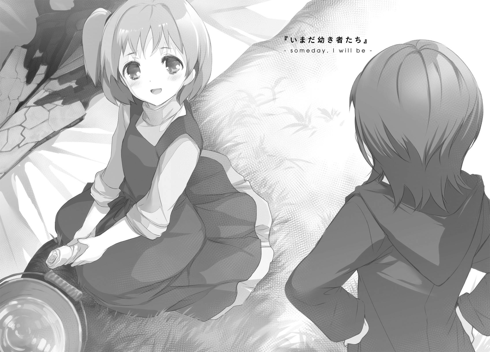

| 終末なにしてますか？ 忙しいですか？ 救ってもらっていいですか？ #EX | |
| 枯野 瑛 & ｕｅ | |
終末なにしてますか？ 忙しいですか？ 救ってもらっていいですか？#EX
枯野 瑛

角川スニーカー文庫
本作品の全部または一部を無断で複製、転載、配信、送信したり、ホームページ上に転載したりすることを禁止します。また、本作品の内容を無断で改変、改ざん等を行うことも禁止します。
本作品購入時にご承諾いただいた規約により、有償・無償にかかわらず本作品を第三者に譲渡することはできません。
本作品を示すサムネイルなどのイメージ画像は、再ダウンロード時に予告なく変更される場合があります。
本作品の内容は、底本発行時の取材・執筆内容に基づきます。
本作品は縦書きでレイアウトされています。
また、ご覧になるリーディングシステムにより、表示の差が認められることがあります。

うららかな春の陽射しの降り注ぐ、68番浮遊島。
幼い少女が一人、一生懸命に、剣を磨いている。
大きな剣だ。長さだけを見ても、少女自身の身長に迫るほど。肉厚の刀身が放つ光沢は、間違いなく金属のそれ。傍から見るだけでも、相応の重量があるだろうと見てとれる。切れ味などとは関係なく、ただ鈍器として叩きつけるだけでも、漆喰の壁の一枚や二枚は簡単に抜けるのではないか。そう思える存在感だ。
しかしよく見れば、その刀身いっぱいに、びっしりと罅のようなものが刻まれていることがわかる。一本の刀身が割れたというよりも、もともとばらばらであった金属片を無理やり継ぎ接ぎしたような風情の痕跡だ。壊れかけのものは、ただそのようにあるだけで、見る者の不安を搔き立てる。壁に叩きつけたなら、その壁ごと刀身も砕け散ってしまいそうだ──この剣のことを知らない者であれば、そう考えてもおかしくない。
少女の小さな手が、汲みたての水で布巾を洗う。
よく絞って、刀身を磨き始める。
もともと、そうそう目立って汚れていたわけではない。しばらく放置されている間に、わずかな埃が積もっていた程度だ。しかしそんなことには一切構わず、わずかな微笑みなどを浮かべて、手を動かし続ける。きゅっきゅっきゅ。どこか可愛らしい摩擦音が、春風が木立を揺らす音に交じる。
「ラキシュ」
──少女は手を止めた。
顔を上げ、振り返る。同年代の......十ほどの別の少女が、呆れたような顔をして近づいてくる。
「なに？」
「何って、昼食の時間だ。君がなかなか現れないから、呼びに来た」
「......あっ」
少女、ラキシュは慌てて立ち上がる。ぱたぱたと大急ぎで、しかしそれでも手際よく、中断の作業を進める。白い布を広げ、剣を軽くくるんで、ものかげに安置。布巾を絞り直し、日なたに広げる。水はあとで汲みなおすことにして、草の上に流してしまう。
「ごめんね。続きはまた後でね」
わざわざぺこりと一礼をしてから、迎えの少女に向き直り、
「教えてくれてありがと、パニバル。行こ？」
「ふむ」
パニバルは何やら、納得ができないような興味を惹かれているような微妙な表情を浮かべて自分の前髪をいじっていたが、
「そうだな、行くとしよう」
白い布の中の剣に一瞥だけをくれて、歩き出した。
「──妙なことを聞くようだが」
道中、拾った小枝を振り回しながら、パニバルが尋ねる。
「なに？」
「あのセニオリスを、嫌な剣だと思ったりはしないのか？」
「......え？」
きょとんとした顔、
「いや、そう不思議なことを尋ねたつもりはないのだが。最悪の宿命を持った者にしか扱えないという話じゃないか。つまり、ヴィレムもクトリ先輩も、言わばあの剣のいわくに命を奪われたようなものだろう」
小枝を手の中で弄びながら、パニバルは続ける。
「しかもこのまま順当に行けば、次にその宿業に吞み込まれることになるのは、ラキシュ。君ということになるんだぞ」
「あー、うーん」
ラキシュは首をひねる。
「そう考える気持ちはわかるし、そういう気持ちが全然ないって言ったらちょっぴり噓になっちゃうんだけど。......でもね。きっと、逆なんじゃないかなって」
「逆？」
「だって、セニオリスは何もひどいことしてないもん。すごくすごく大変な目に遭ってるひとが、本当の本当の本当に力が必要って時にしか助けてくれないってだけで」
パニバルが立ち止まる。
釣られて、ラキシュも立ち止まる。振り返る。
「パニバル？」
「続けて」
「あ、うん。ええとね、セニオリスは、優しくて厳しい剣だと思うんだ。なにもかもがどうしようもないような時、自分だけじゃなにもできないようなひとに、本当に大事ななにかひとつだけを勝ち取れるかもしれない、小さなチャンスをくれる......」
「......そうか。君は、そう考えるのか」
「うん、そんな風に考えてるの」
パニバルは再び歩き出す。ラキシュもまた歩き出し、横に並ぶ。
「クトリ先輩も。ヴィレムさんも。わたしたちの知らない、五百年前の人間の......勇者の先輩たちも。本当の本当にどうしようもない時に、少しずつセニオリスに助けてもらってきたんだよ。みんなの大恩人で、本当にすごい剣なんだから」
無機物に対して恩人というのはどうなんだろう、とパニバルは首をひねる。
ラキシュは構わず、
「いつかきっと、わたしも世界一大変なことになって、セニオリスに助けてもらわないといけない日が来るはずだから。そのときはよろしくお願いしますって、いまのうちに、いーっぱいご機嫌とっておくんだ」
そんなことを言いながら、胸元で小さくガッツポーズ。
「ふむ」
「あきれてる？」
「......いや」
パニバルは軽く笑って、手にした小枝を放り出す。
「君らしい話だな、と思っていた」
「そ、そう？ ええと、喜んでいいの......かな？」
「はは、そういう反応もまた実に君らしい」
「あーっ、今度はわかったんだから！ やっぱりあきれてるでしょ！」
「成長しているようで何よりだ！」
小さなこぶしを振り上げるラキシュと、笑いながら逃げ出すパニバル。
追いかけっこが始まった。
妖精倉庫の食堂へ向かう廊下を、二人の少女が駆けていく。
風が吹いて、聖剣セニオリスをくるんだ布の一部をはだけさせる。太陽の光を浴びたその刀身が、涙でもこぼすかのように、かすかに白く輝いた。
１．リーリァ・アスプレイ
リーリァ・アスプレイは、空洞を知っている。
知識としてではなく、体験として。
あの頃の──四年前、十歳のころの自分の中に、それはあった。

リーリァは、素直な少女だった。
大人の言うことをよく聞いたし、求められていた役柄を笑顔で務めた。
ディオネ騎士国の、王の娘。王位継承権は十四位。そもそもディオネ自体が牧歌的な小国であったこともあり、権力争いとはほとんど無縁。
平和だった国の象徴として、無垢で明るく、何も知らずによく笑う、そんな人形のような少女としての役割を求められていた。そして、幼いころからむやみやたらと聡明だった彼女は、そのことをよく理解していた。理解した上で、受け入れていた。
自分が笑顔でいることで周囲の大人たちが救われるのならば、是非もない。頰の筋肉が働く限りに、にこにこし続けてみせよう......と、そんな感じのことを考えていた。
誤解なきよう付け加えておくと、それは決して不幸な日々などではなかった。両親は忙しい身ではあったが愛情をもって娘に接していたし、貴族院の偉い人たちも騎士院の強い人たちも基本的には善人だった。リーリァの笑顔は決して完全な演技だったわけではなく、むしろ自然に浮かんでくるそれを使いこなして任務に臨んでいたと言っていい。
だが、彼女が九つの時に、世界のすべてが変わった。
エルフという怪物がいる。見た目はねじれ歪んだ朽木なのだが、どういう悪い冗談なのか、群れを作って軽快に動き回る。怪物としては霊種に分類されていて、つまり高い知能と技術を備えているはずだとされているが、人類との意思の疎通が不可能であるため立証はされていない。個体それぞれが長命であること、種としての歴史が長いこと、神代の技術を現代にまで伝えていることなどから、軍部などの正式な書類では「古霊族」「古霊諸種」などと表記されることが多い。〝濁り森〟と呼ばれる自分たちの領域から出てくることはめったにないが、たまに、その〝濁り森〟そのものを拡大するために、群れを作って人類の領土に攻め込んでくる。
百に近い数の昏古霊族が、ディオネの領土を病のように襲った。
夜明け前の襲撃だった。民家の煙突から炊事の煙が上り始める寸前に、それとはまったく違う炎が市街を端から焼き払っていった。有事に備えて配備されていたはずの民兵も騎兵団も、想定外の強さを持つ怪物の集団の奇襲を前に、ほとんど何もできずに薙ぎ払われていった。
国が、消えた。
ごくわずかに生き残った者の中に、忠臣によって抜け道から外に連れ出された、幼かったリーリァ姫の姿があった。
ここまでの話は、それなりに有名だ。そしてこの話を聞いたほとんどの者は、あの時にリーリァ・アスプレイはすべてを失ったのだと考える。
それは、ある側面において、正しい。リーリァはあの時、確かに多くのものを失った。
それは、ある側面において、間違っている。リーリァの喪失は、あの事件のだいぶ後になってから、始まったのだから。
悲劇の主人公として、その後のリーリァは様々なところで受け入れられた。
そしてその行く先々で、少女は、それまでとは違う役を演じることを求められた。
愛したすべてを失った。悪しきものの群れに奪われた。炎の中に消えてゆく様々なものを、その目で確かに見た。大切だったもの。どうでもよかったもの。失いたくなかったもの。消えてしまえと思っていたもの。すべてが等しく平等に、灰の中に焼け落ちていった。
ならば、悲しんだはずだ。
ならば、苦しんだはずだ。
ならば、絶望したはずだ。
ならば、怒ったはずだ。
ならば、憎んだはずだ。
誰もが、この亡国の王女に、悲劇の主人公であることを求めた。「かわいそうな女の子」であることを求めた。暖かな部屋から眺める雪景色のようなものだ。不幸な他人を見ることは、自分は不幸ではないと信じる人々にとって、ほどよい娯楽となった。
そしてリーリァは、素直な少女だった。
大人の言うことをよく聞いたし、求められていた役柄を笑顔で務めた。
悲しんでみせた。苦しんでみせた。絶望してみせた。怒ってみせた。憎んでみせた。周囲の大人が望んでいたとおりのものを、乾いたような笑顔を力なく張り付けたまま、体現してみせた。
ある日、暗闇の中で、リーリァはふと気づいた。
自分は、本当に悲しんでいるのだろうか。苦しんでいるのだろうか。絶望しているのだろうか。怒っているのだろうか。憎んでいるのだろうか。
そういう感情は、間違いなくこの心の中にある。けれど、その出所がわからない。
あの日あの場所で、九歳のリーリァ・アスプレイは、何を考えながら燃え盛る炎を見つめていたのだろう。
思い出せない。
こうだったはずだ、こうであるべきだ、と繰り返し言い聞かせられた他人の期待が、あの時の記憶と心を上書きしてしまった。
望まれるままの誰かであろうと努めたその少女は、気が付いたときには、自分自身の最初の姿を忘れていた。
一年が経った。
リーリァは十歳になっていた。
ここで待っていてくださいと、小さな茅舎の中で、じいやに言われた。そしてじいやは、やたらと屈強な別の老人と一緒に、小屋を出て行ってしまった。
そのまま言いつけを守り、じっとしていてもよかった。どうせ、やりたいことがあったわけではないのだ。もともと、行儀よく座って愛嬌を振りまくことには、小さいころから慣れていた。心を殺し、退屈を感じないようにするのもお手の物。何時間だろうと......もしかしたら何日だろうと、おとなしく待ち続けることができていただろう。
けれど。
あの時に限って、なぜか魔がさした。
少女は、何もないに決まっている田舎の森の中へと、入って行ってしまった。
普段はしないようなことをすると、普段は見ないようなものを見ることになる。
森の中、少しだけ開けた場所で、十歳くらいの男の子が棒切れを振り回していた。
その体から湯気が立ち上っているように見えるのは、おそらく錯覚などではない。ずっと激しく動き続けていたのだろう、まだ肌寒い季節だというのに、少年の全身はびっしょりと汗に濡れ、足下の土に黒い染みを作り出してすらいる。
ただの遊びにしては、いろいろな意味で熱が入りすぎているように思えた。
木陰に身を隠し、少し観察してみることにする。
握りは浅く、その一方で踏み込みは深い。基本の構えの重心は妙に高く、その一方で打撃の瞬間の姿勢がやたらと低い。出来の悪い独楽のようにくるくる回る少年をじっと見ているうち、その妙な動きの素性が少しずつ見えてくる。
これはたぶん、様々な武器の鍛錬を、一度にやろうとしているのだ。
ぱっと見た感じだけなら、ちょっと高度なちゃんばら遊びのようでもあった。つまり、その動きは剣術に似ていた。しかしよく見れば、得物の間合いが小刻みに変化している。握りの位置を細かく変え、千通りの武器の振るい方を、たったひとつの棒切れを通して再現している──というか、再現できる境地を到達点とする意思が、少年の動きの裏側には透けて見えた。
しかし惜しむらくは、どうにもこうにも、この少年の技量が足りていないことだ。
この鍛錬の肝は、たぶん、武器の間合いを支配する指先の運びにある。しかし少年の手元の動きは、あからさまにぎこちない。体運びだってそうだ。体格上どうしようもなく腕力と体重を欠く以上、威力のある打撃のためには、高く構えた重心をうまく打撃点へと「落とす」必要がある。しかしこの少年の場合、せっかくの力のほとんどが靴底から地面に逃げてしまっている。もっと身を軽く、それこそ雲の上を舞い踊るような動きをしなければ、この鍛錬は最後まで「ちょっと高度なちゃんばら遊び」の域を出ないだろう。
見れば見るほど、次から次へと不満点が見つかる。
不満が積もると、今度は腹が立ち始める。
それなのに、なぜか、目が離せない。
視界が歪む。どういうわけか、涙が出そうになっていることに気づく。わけがわからないが、このままで放っておいては雫がこぼれてしまう。それはなんだか嫌だからと、少年から目を離さないまま、少女は両方の目の水気を交互に指先で拭う。
ずるり。
突然、少年が足を滑らせた。
あ、と思った。
あ、という表情を少年が浮かべたのを見た。
靴で芸術的な弧を空に描きながら、少年の体がぐるんと半回転。だどん、という派手な音とともに、背中が地面に叩きつけられる。あれは痛い。ただ転ぶだけとは違い、自分で自分に投げ技を放ったようなものなのだから。やわらかい土の上だから、怪我をしたりはしないだろうけれど。
「──ってえええ！」
少年が、大声をあげた。
悲鳴という体裁に隠して、思うように体が動かないことへの悔しさを吐き出した。
おそらくは、疲れ切った体が休息を求めていたのだろう。手足を広げたまま、地面に寝転がると、青空を遠く仰いで、
「............」
こちらに気づいた。
目が合う。
そこに見学者がいるなどということは、想像すらしていなかったのだろう。少年の目が一瞬だけ驚愕を浮かべ、そしてゆっくりと羞恥へと変わる。
「な......なんだお前!?」
顔が上気している、のはまあ激しい運動の直後なのだから当たり前として。いかにも恥ずかしそうな大慌てぶりで、少年は跳ね起きた。服についた土を払い、投げ出されていた棒切れを拾いなおすと、まるでいまひっくり返っていたのがなかったことであるかのように、雷芯の構えをとる。
「み、見てたのかよ!?」
ばっちり見てた。
......と、正直に答えそうになってしまい、少女は慌てて言葉を飲み込んだ。
たぶんこれは、言ってはいけない言葉だ。なけなしの（っぽい）少年のプライドを傷つけかねない、やばい答えだ。深窓のお姫様として、あるいは悲劇のヒロインとして生きてきた合計十年間の人生経験が、それだけはやめとけと告げている。
けれど、だからといって、そのまま黙っているわけにもいきそうになかった。恨めしげな少年の目が、まっすぐこっちを見ている。何かのリアクションを返すことを要求されている。
何か言わないといけない。その焦りが、幼い判断力を鈍らせた。
その瞬間に心に浮かんだ言葉が、そのままするっと、舌先に押し出されてしまった。
「へ」
「......へ？」
「へたくそ」
その瞬間、確かに時が凍り付いた。
少年のプライドが、傷つくのを通り越して粉々に砕け散る音を、少女は聞いた。
それが、リーリァ・アスプレイという一人の少女が、剣の兄弟子となる少年と、初めて出会ったときの記憶。
そして、身内すべてに優しく寛大な人格者であるはずだったヴィレム・クメシュ少年が、妹弟子であるリーリァただ一人を例外として扱うこととなる、そのきっかけとなった一幕だった。
２．沈まない太陽
さて、あれからさらに何年もの時間が経って。
「だってしょうがないじゃない、事実へたくそだったんだし」
ぶつくさと思い出に文句を言いながら、リーリァは雪を踏み歩いている。
「大体、言われて怒ったってことは図星だったってことじゃない。図星だったってことは、言われて怒れる筋合いじゃないでしょうに。黙ってあたしに頭とか垂れて、その通りですプリンセスとか言って鍛錬に戻るのが正しい筋ってもんでしょうが」
一人旅には慣れた。
が、同時に、すっかり独り言の癖がついてしまった。
「......まあ、アレだよね。いくら一人に慣れてるからって、ツブヤキ癖については我ながらやめといたほうがいいと思いはしてるわけよ、自覚はあるわけよ。いちおう。やっぱり普通にはしたないっていうか、みっともないっていうか、誰かに聞かれたら正規勇者サマの神秘性が薄れるっていうか。やっぱりそういうの問題よね？」
そんな矛盾した独り言を続けながら、ふと、顔を上げて辺りを見回す。
白い。何もかもが白い。夜闇と大差ないレベルで白い。
そして冷たい。寒いを遥かに通り越して、もう純粋に冷たくて痛い。
かつてこの地を訪れた有名な詩人は、この辺りのことをこう表現したという。いわく、それは見果てぬ荒野と、枯れた木々と、降りやまぬ雪。絶えず吠え猛る風は死霊の怨嗟であり、熱を持つすべての生き物を凍え殺さんとする呪いの顕れだ。世界に果てがあるならば、それはこの場所に違いない──と。
この手の詩吟にありがちな話だが、もちろんこれらの言葉は、正確な事実を表すものではない。荒野の広さには限りがあるし、枯れたように見える木々も寒冷地に適応しただけの元気な植生だし、年に何度かは雪が止む日だってある。後日の開拓冒険者たちの報告によって、今ではこの地よりさらに北の大地の存在も判明している。
ただ、まぁ......実際のところ、この風について言えば、同意できるところもある。
高く低く、時に激しく時に静かに、まとわりつくように距離を置くように、実に表情豊かに奏でられる音の渦。その中に身を置いていると、確かに、その後ろに何らかの奏者がいるのではという気分になる。死霊だか神だか精霊だか妖精だか、まぁそんな感じの雑に人智を超えた系の何かの仕業だと──
ぶへっくちぃ！
無意識に飛び出した特大のくしゃみが、意識を現実に引き戻す。
「......さぶい」
もこもことした防寒具の奥で、ぼやくように呟く。
鼻の頭を指先でこすりつつ、改めて道の彼方を見やる。白く霞んだ視界の奥、粒の大きな雪が暴れ踊るその向こうに、くすんだ茶灰色の天幕がいくつも並んでいるのがぼんやりと見える。
「あれか」
体を軽くゆすり、荷物を背負いなおすと、改めて歩き出す。
人類の歴史は、怪物たちとの戦いの歴史である......などと言い切ってしまうとさすがに噓になるが、それが人類史にとって大きな要素であることは間違いないだろう。
やつらはそろって人類に敵対的で、かつ強力だった。
巨軀をもって襲い掛かってくるもの、自然に溶け込み罠を張るもの、不可解な術を使って心を惑わせてくるもの。人を捕食するもの、ただ殺すために殺すもの、愉しみのために弄ぶもの。文明の黎明のころから、種々様々な怪物が、人類にとって親しい隣人であり続けてきた。
一方で、人間は決して強力な生き物ではなかった。基本的に腕は細く、脚は遅い。小突かれれば死ぬし、焼けても溺れても落ちても餓えてもやっぱり死ぬ。
確かに、そこそこ数は多かった。しかし、単純な個体数なら、豚面種のような多産の怪物に比べ、桁ひとつほど劣っている。ついでに言えば、平均的な一般市民は群れでの戦い方を知らず、いくら数がいたところで強さの足しにならない。
武器や兵器を扱うこともできた。しかし、技術力においても生産力においても、より優れた種がほかにいた。人類が実用化し頼りにした武器の大半は、地竜種などが創り出していたものを模倣し、自分たちに適した形にアレンジしたものでしかない。
にも拘わらず、人類は今日までしぶとく栄えてきた。危険を払い、未開地を切り拓き、領土を広げてきた。その過程で人類は、「弱者が強者に抗うための技術」を山のように生み出し、磨き上げ、極めた。
例えば、独自の成長法を使って自らを鍛え上げた冒険者たちが。
例えば、不撓の意志をもって故国を守る軍の兵士たちが。
例えば、古代の叡智を現代に伝えとどめる、賢人塔の学士たちが。
例えば、形ならぬ絆に依りて確かなものを守る、傀儡兵とその整備呪士たちが。
そして例えば、讃光教会に選ばれし鋼鉄の聖人、現代に蘇りし古代神話、予定調和の勝利者とすら呼ばれる人類守護者の本命中の本命、勇者と呼ばれる戦士たちが......
人々の暮らしを守るために戦っている。あるいは、それぞれ好き勝手な理由で戦いながら、結果として人々の暮らしを守っている。その結果として、人類はこれまで、滅びることなくやってこられた。
さて、最近になって、大陸中をひとつの噂が駆け巡っている。
いわく、神話の時代からの眠りより、ひと柱の星神が目覚めた。星神とは、かつてこの世界のすべてを創造したとされる超越存在の一族である。遥かな昔、一族の全員でどこか遠くへと旅立ったとされていた──が、どうやら例外がひとつだけあったということらしい。そしてその星神が、よりにもよって、人類すべてへの敵対を決めた。配下である世界の管理者、三柱の地神を従えて、人類文化圏へと攻めてこようとしている。
さあ、大変だ。人類存続の危機だ。
とまぁ、話の内容はどうしようもないほど衝撃的で、この上ないほど絶望的だ。しかし、その噂を口にする者たちのほとんどは、さほど悲愴な顔をしていない。
強大な怪物がいるから何だというのだ。これまでだって自分たちの傍には、必ずどこかにそういう怖いモノがいた。けれど、人々を守るために、立ちふさがる者たちがいる。とても強い連中が、戦ってくれている。
人間という種は、何にも負けない。今までも、これからも。
だから心配する必要など、まったくないのだ──と。
──野戦天幕の中に、重い空気が満ちていた。
粗い作りの作戦机の上に、広げられた周辺の略地図。赤と青に塗り分けられた木彫りの駒が並べられて、彼我の戦力およびその配置を示している。
机を取り囲むように座るのは、三人の男性。いずれも似たような渋面を浮かべ、机の上を睨みつけている。
「......このままでは、勝てませんな」
男の一人、この地に展開する北方守護兵団の軍略責任者が、口を開いた。
「敵陣の展開を許し過ぎました。長引いた戦いに、兵士が疲れ切ってもいる。今となっては、友軍への支援要請も間に合いません。現実的に打てる手は......組合同盟への増援要請くらいかと」
「しかし、それでは兵団の面子というものがだな」
苦い声で、この場の最高責任者である将軍が反論する。
なんだかんだ言ったところで軍とは暴力を振るう組織であり、暴力を振るうものを律せず放っておけば粗暴に流れるのは世の常だ。だからこそ多くの軍が、自軍の兵に、誇りを持つこととそれを大切にすることを叩き込んでいる。
この北方守護兵団も、もちろん例外ではない。ここでは面子を保つことはとても重要であり、面子を保とうとするその心性はそれ以上に大切だとされる......ゆえにその反応は、守護兵団の兵士として正しいものではあったのだが。
「面子のために、国土とともに滅びますか」
そう言われてしまえば、返す言葉がない。
会話に加わっていない最後の一人、兵士長が、腕を組んだまま、むううと低く唸った。
実際問題として、戦況は極めて悪かった。
彼らの相対する敵は、エルフの群れだった。そして、年経たエルフの放つ呪詛は、ほぼ文字通りの意味で、その土地を支配する。
エルフの支配する土地とはすなわち〝濁り森〟──、紫色をした毒の森のことだ。
と、ここまでの話を聞けば、たいていの人間は「エルフという連中は森を汚染するんだな」と解釈する。毒液か何かをまき散らして、もともとそこにある森を汚すのだろうと。豊かであった緑を、そこに生きていたであろう動物たちを、ことごとく死滅させてしまったのだろうと。ああ、なんて恐ろしいのだろう。なんておぞましいのだろう。
違うのだ。
実際に連中の侵略に立ち向かったことのある者ならば誰でも知っている。エルフの使う呪詛は、文字通りに世界を造り替える所業だ。
一説によれば、大昔に神々がこの世界を創造した時にその補佐として生み出された従属霊こそがエルフの祖であるのだという。書類上の連中が古霊種と書き表されるのはそれ故だ──そしてその際に、やつらは、神々の懐から、世界を造り出し描き変える神秘の片鱗を盗み出していたのだという。
そこに、侵略先としての森が用意されている必要はない。
たとえそこが平原だろうと山岳だろうと、果ては大海原であったとしても、連中はそこを〝濁り森〟へと変える。どこからともなく土が湧き出し、ねじれた木々が生い茂る。わけのわからない虫がどこからともなく集い、巣を張る。そして、あたかも何千年もの昔からその姿であったかのような傲岸さで、その場所に居座るのだ。
だから、エルフの支配する〝濁り森〟に挑むということは、自然の脅威とはまったく違う方向性の危険を伴う。その最奥部にまで攻め込むということは、人を食らう化け物のはらわたの中にまで自ら飛び込んでいくに等しい。
「──人間同士の領土争いとは、わけが違う。我々の敗北は、この地すべてをあの毒沼に沈めることに等しいのですよ。何があろうと、負けるわけには」
「しかし、冒険者どもに助けを求めたとて、果たして意味があるやら」
「どういう意味です」
「仮に一匹だけであったとしても、エルフは強い。この地で我らが相手をしているのは、その『群れ』だ。しかも、これだけ広大な土地を飲み込むだけの呪詛を撒くような長老種だ。そして冒険者という手合いは我々とは違い、自分のために戦っている。あからさまな死地に、義のためだけに、飛び込んできてくれるものか」
全員が黙り込む。
兵士長が、むううと低くまた唸った。
横から伸びた細い手が、作戦机の隅に置かれた焼き菓子をひとつつまむ。
「そもそもだ。エルフとの戦いでまともに役立つ実力者など、冒険者たちの中でも極めて限られる。そんなものが都合よくこの北の地に逗留しているなどと、期待できるはずもあるまい？」
「では、このまま座して死ねと？」
「そうは言っておらん、しかし我々が生き残るためにはだな」
ぽりぽりと焼き菓子を端から細かくかじりつつ、もこもこした防寒具が......防寒具に身を包んだ誰かが、作戦机の上を眺める。
「何かをしなければ、何も変わらないのですぞ！」
「だからこそ、無意味な手を打っている余裕などないと言っておるのだ！」
両者ともに、余裕がない。
声が強くなり、言葉も荒くなる。
兵士長がむううと唸る。
ひょい、と焼き菓子がまたひとつ消える。
「............」
「............」
男たちの視線が、一か所に集まった。
視線を集めた当人、いつの間にかそこにいた四人目の人物は、焼き菓子をかじる手と口を止めて、ふと顔を上げた。
「何だね、君は」
その場を代表して、軍略責任者が尋ねた。
「あ、お菓子いただいてます。寒いとこ強行突破してきたから、もーおなかすいちゃっておなかすいちゃってもー」
少女の声でそう言うと、不審人物が防寒具のフードを脱ぐ。
燃えるような赤い髪がこぼれ出す。
露わになったのは、事実、少女の姿だった。
顔の造形や体格だけを見れば、歳は十代の真ん中か、その少し手前。だが、どこか不思議な余裕を湛えたその表情は、子供のものとは見えない。あるいは、年老いた老婆のそれのようにすら見える。
「えーと、ご挨拶に伺いました。讃光教会のほうから来たもんです」
寒い道をここまで歩いてきたせいか、赤く染まった頰を手のひらで軽くごしごしやりながら、その少女はそんなことを言った。
「はぁ？」
将軍が胡乱げな声を出す。
「なんだ、我々の葬儀の段取りを詰めようとでもいうのか？ いらんいらん、余計なお世話だ」
「いや、そうではなく」
「ここは最前線だ。我々は強大な敵を前に、決死の戦いを繰り広げている。子供の小遣い稼ぎの場ではない。我らと同じ墓に入りたいのでもなければ、とっとと帰れ」
讃光教会の祭官にもいろいろいる。祭殿の中で日々の儀礼を執り行っているだけで高禄を稼ぐような者ばかりではない。日々の糧にも困るような貧乏祭官の中には、旗色の悪い戦地を渡り歩いて、略式葬儀を押し売りして回る者もいる。将軍が言っているのは、つまりそういうことだった。
「まぁ、そう言わずに」
少女は構わず、机の上の観察に戻る。
「貴様──」
「むう？」
激高した将軍が次の言葉を放つ直前、兵士長の片眉が小さく上がる。
「お嬢さん。その背の重そうな荷物について尋ねても良いかね」
「剣だよ」
さらっと、少女は答えた。
「ただの剣にしては、ずいぶんと大きいのではないかな？」
「そだね」
「それが、聖剣セニオリスかな？」
「うん」
あっさりと、少女はうなずいた。
将軍の表情が固まった。軍略責任者の表情から、放心したように色が抜けた。居心地の悪い沈黙が、野戦天幕の中に満ちた。
無理もない。
この世界には、勇者と呼ばれる人間がいる。ただの人間ではない。どの国家にも属さず、人類すべての存続のためだけに戦う、究極にして絶対なる対怪物最強戦力。最強の聖剣だとか卓絶の秘奥義だとか不世出の才能だとか最古の守護者だとか、英雄の血筋だとか悲劇の出生だとか。そういった山のような「強さの理由」を抱えた、そりゃもう四方八方どこから見てもお前が最強だと納得せざるを得ないような、現代に生きる神世の伝説だ。
そしてセニオリスといえば、現在の人類が持つ中では、最高にして最強の神秘のひとつである。数ある聖剣の頂点に立つ、いわゆる極位古聖剣と呼ばれる五振りの中のひとつ。いくつもの選ばれし者たちの手を渡り歩き、数えきれない戦場で人類の敵を打ち倒してきた。そしてその今の使い手は、讃光教会の定める二十代目の正規勇者──
「リーリァ・アスプレイ......？」
将軍がその名を呟いた。
「バカな」
軍略責任者が、力なく首を振った。
「姫勇者リーリァといえば、燃えるような赤毛の、絶世の美姫のはず。決してこんな、どう見ても小生意気なだけの小娘などでは！」
「一人歩きした噂にまで責任は持てないなぁ......」
「肖像画の想像図は、楚々とした美女であったぞ！」
「想像図の話を本人にされても困ると言いますか何と言いますか」
「高かったのに！」
「あー......そりゃあ、何ていうかご愁傷様」
再び、居心地の悪い沈黙が満ちる。
腕を組みなおした兵士長が、むううと低く唸る。
「あ、ちなみにこれが身分証明ね」
思い出したようにそう言って、少女──リーリァは懐から取り出した真鍮細工を三人に晒す。それは教会が巡回高祭官に対して発行する護符の一種であり、この上ないほど彼女の身元を確定してくれる一品だった。
「......して、そのリーリァ・アスプレイ殿が、このような場所まで何用で。助力いただけるというなら、とっとと帰れ」
「んー」
焼き菓子を飲み込みつつ、改めて地図をのぞき込む。
「このへんエルフ、ってことは、こことここはもう森の中？」
地図の上、置かれた駒を順番に指さす。
「ああ、その通りだとも」
「兵士長、愛想よくせんでいい！」
「てことは、長老種はこのへんと、あとこっちもかぁ......こりゃ確かにめんどいなぁ」
リーリァはがりがりと頭をかきつつ、しばし目を閉じて考えて、
「えーと、将軍。お願いがあるんだけど」
「兵なら貸さんぞ」
「いや、全軍まとめて動いてほしいんだけど。雪も深いしちょいと大変な行軍になるかもしれないけど、これ、こういう風に──」地図上の駒を動かす「──動けるよね？」
「何をバカな」
軍略責任者が鼻で笑い、それから改めて地図の上を見て、
「......いや、本当にバカな」
真顔になる。
「それでは敵から遠ざかるばかりではないか。街へ撤退するにしても、いやそれも論外であるには違いないが、方向が違う」
「うん」
リーリァは頷く。
「ここに来る前に聞いてきたんだけど、こっちの......旧ディオネ領、堰都ナルバントのほうの戦況、風向きがやばいんだって」
「は」
「相手の主力は豚面種。特別にキツいってほどじゃないんだけど、何せ数が多いから戦線が横に広がっちゃって、守りが足りなくなってるって。あんたたちも、ここでエルフの相手してるよりは戦いやすいでしょ？」
「それは、まあ......いや、そういう問題ではないだろう。我々は、この場を放棄するわけにはいかないのだ」
わずかに毒気を抜かれた顔で、それでも軍略責任者は言い募る。
「ん？ ここで何かすることでもあんの？」
「いやだから、我々の任務は、あのエルフどもをこの地から一掃することで......」
「ああ、それは気にしないでいいよ。あたしがなんとかしとくから」
リーリァは面倒そうに言い放つと、腕を回してこきこきと肩を鳴らす。
「ま、三日もあれば終わるでしょ」
さて、その三日後のことである。
堰都ナルバントの友軍と合流すべく行軍中だった兵団に、ひとつの報が届いた。
これまで拡大を続ける一方だったエルフの領土、あの忌ま忌ましい紫色の森が、猛然とした速さで枯れ始めているというものだった。
どよめきが、兵団の中に広がった。
「リーリァ・アスプレイだ」
兵士の誰かが、その名を口にした。
「リーリァ・アスプレイ！ 正規勇者が、やってくれたんだ！」
あまりに強大な敵を前に、戦いの終わる未来が見えていなかった。長く苦しい戦いの果て、兵士たちは疲れ切っていた。何人もの友人たちが酸に溶かされエルフに喰らわれるところを見て、次は自分の番かと、希望を捨てる者も少なくなかった。
そんな戦いを、いきなり飛び込んできた、たった一人の少女が終わらせた。
「──好かんな」
苦虫を嚙み潰したような顔で、将軍が吐き捨てた。
「あの小娘が片手間同然に終わらせられるような児戯に、命を賭してすら届かなかった。我らの戦いは、いや、我らの存在は何だったというのだ？」
仮にも将の地位にある者として、勇者というものがどういう存在であるかについて、基礎的な知識は持っている。いや、それ以上のことまで調べてもある。それによれば、勇者の強さというものは、説得力によって支えられているのだという。劇的な過去を背負って生きてきた者ほど、あるいは悲しい思いを抱えて生きてきた者ほど、強い勇者にふさわしいのだと。
しかるに、あの小娘の場合は──二十代目正規勇者であるリーリァの場合は、どんなものであったか。
愛する家族と故郷を失い、怒りや悲しみに身を浸していた。そしてそのすべての感情が、幼かった姫君を、戦いの人生へと突き落とした。
悲しみを背負った者にのみ許される力、苦しみを潜り抜けた者にのみ許される力、絶望から立ち上がった者にのみ許される力、怒りを糧にする力、憎しみを超えた者にのみ背負いきれる力──そういったあれこれのモノをあの小さな体に詰め込んで、そうして作り上げられたのが、正規勇者という、讃光教会が掲げる一振りの武器。
「──やはり、好かんな」
周囲に誰もいないことを確認し、懐から巾着を取り出す。小さく折りたたまれた紙片を取り出し、開いていく。中に描かれているのは、母性を感じさせる微笑みを浮かべた、燃えるような赤毛の美女。
破り捨てようとして。
逡巡して。
丁寧にたたみなおすと巾着に収め、懐に戻して。
「ふん」
そして、やってられるかとばかりに、空を仰いだ。
ここには雪が降っていない。青い空を横切って、尾の長い鳥が渡っていくのが見えた。
３．帝都
帝都という場所は、いろいろなものの規模が大きい。
理由は多々あるだろう。比較的最近になって拓かれた都市であるため、守らなければならない伝統ある施設などがほとんどないこと。帝国の中心にして権威の象徴であるため、訪れた者をびびらせ、帝国すげえという印象を抱えて帰さなければならないこと。現在の都市の基礎を作った先代皇帝が豪快な人格の持ち主で、何もかもとにかくでかく作っときゃ間違いないという謎の思想のもとに予算や区画を割り当てたこと。
ともあれそんなわけだから、帝都の第一街区のど真ん中に位置するその祭殿は、やたらでかくて、やたら豪奢にできている。むやみに高い天井の大量のステンドグラスから陽光が差し込む。大理石の祭殿を眩しく照らし出し、壁に彫り込まれた神話の光景をくっきりと浮き彫りにする。
観光名所にでもすればさぞ儲かることだろう絶景だが、俗人立ち入り禁止の聖域指定がされている。入り込めるのも光景を楽しめるのも、それなり以上に高位の聖職者と、聖人指定を受けた勇者......正規勇者であるリーリァと、それに準ずる資格を認められた準勇者たちだけだ。
「よくぞ戻られました」
紫の法衣に赤い飾り帯、いかにも偉そうな服装の祭官たちが、満面の笑みを浮かべて出迎えてくる。
「戦果は聞き及んでいます。今回もまた、勇者の名と栄光にふさわしい活躍でした」
その笑顔には、裏がない。噓も、謀の気配もない。そういったものを一通り見抜ける程度には、リーリァは人間というものを見慣れている。つまり、彼らは本心から、正規勇者が人類を救う使命を遂行してきたことを喜んでいるのだ。
──ああ。
うんざりとした気分で、リーリァは自分の気持ちを再確認する。
──やっぱあたし、ここ嫌いだ。
ここの連中には、迷いというものがない。自分たちの考えていること、感じていること、行っていることのすべてに、「正しさ」を確信している。だから自分自身を疑うこともないし、その行いにためらいが混じることもない。それはとても幸せなことだし、その幸せを実現できていることは、信教として意義あることなのかもしれないけれど。
自分たちの中だけで正しさを完成させてしまった者は、自分のもの以上の正しい結論など他にあるはずがないのだからと、人の話を聞かなくなる。一方的に事情を押し付け始め、すぐにそれに慣れる。人と交わるとはどういうことなのか、それ自体を忘れてしまうのだと。
「うん？ どうされましたか、勇者リーリァ？」
「なんでもなーい」
あさってのほうを向いて、こっそりと舌を出した。
「......と、そういえば。ナルバントのほうの戦い、結局どんな感じになってる？ いちおう、会った兵団に援軍に向かってもらったけど」
「昨晩の定時念信では、現況だけを言うならば非常に厳しい、と。すでに三つ目の砦が落とされ、兵の疲弊も限界に近いそうです。未確認ですが、攻め手に悪魔が交じっている可能性もあるとか」
ちょっと待てこら。
「......それ、あたしも援軍に合流したほうがよかったんじゃないの？」
声に苛立ちがにじみ出そうになるのを、努力して抑え込む。
「不要です。セニオリスは個を相手どった時にのみ絶大な力を発揮する聖剣、群れを相手どる戦場ではその利を活かせません」
「そーゆーんじゃなくて。そんな重いのと関係なしに、素手でもいいからあたしが行けばちったぁ被害を抑えられたんじゃないかって話をしてるんだけど」
「重ねて不要です。エルフの呪詛を大量に切り祓ったセニオリスには調整が必要ですし、同じくあなたにも、遠からず巡り来る大役に備えてもらわねばなりません。もうすぐ、星神エルク・ハルクステンが正式に敵性認定されます。その時討伐隊の旗手となれる者は、あなたをおいて他にいないのですから」
うわあこいつ殴りたい。
笑顔の裏でこっそり拳を固める。
「それに、援軍ならばすでに向かっています。聖剣プルガトリオを携えた準勇者アヴグラン・Ｔ・ロンティスが、先週に帝都を発ちました」
「────あー......」
微妙な心持ちで、拳を解く。
勇者たる者は、一度に一人までしか認定されない。そう決まっている。
しかし、勇者の資格に限りなく近づく者は、いつの世にもある程度の数が存在する。そういった、正規に認定されたわけではないが勇者に準ずる資格と力を持つ者たちを、教会は野放しにしていない。準勇者という称号を与え、やはり聖人扱いをしている。
いま現在、準勇者として各地へ派遣されている者たちはたしか三十人くらい。詳しい数字は知らないし、直接の面識がある者はその中の十人余りといった程度だ。
アヴグランは、その中の一人である。
「あいつかぁ......」
「不安でも？」
「いや。対軍の戦闘で、あいつ以上の適役はいないとは思うけど......」
聖剣プルガトリオは、決して格の高い聖剣ではない。魔力励起の上限もさほど高くはなく、竜や長老種のエルフなどの化け物を相手どる戦いには向いていない。
しかし、発現する特筆能力は、使いどころを選びさえすれば、非常に強力だ。
ひとつの戦場を見下ろす場所で、視認できる限りの「敵」を「罪人」であると指定する。そして、プルガトリオの使い手がその戦場に身を置き魔力を熾し続けている限り、罪人とされた者はプルガトリオの剣身から逃れることが叶わない。休まず剣を振るい続けている限り、最初に定めた敵を切り倒し続けることができる。多数の敵味方が入り乱れる乱戦において、これ以上頼りになる聖剣も他にない。
これに加えて、準勇者アヴグランの性格がある。清廉潔白で爽やかで明るくて、弱き者の盾として戦うことに本気で生きがいを感じていて、いかにも「勇者」という肩書きに恥じそうにない男。これは、戦場においての気力の充溢レベルに何の心配もいらないということだ。守るべき者たちが背後にある限り、彼が膝を折ることは考えられない。
「安心しましたね。では、あなたはあなたの役目を果たしてください」
にこやかな笑顔で、その話は打ち切られた。
「体を休め、次の戦いに備える。それが、今のあなたの戦いです」
「......へいへい」
自分だって、長話をしたいわけでもない。軽く手を振って、祭官に背を向ける。
「どちらに？」
「街に出てくる」
「光室にお戻りにはならないので？」
規模にもよるが、讃光教会の施設のほとんどには、聖人を滞在させるための部屋が用意されている。ここ、帝都の第一祭殿ともなれば、正規勇者の主な拠点となることが想定されている場所なのだから、それはもう広くて金のかかった部屋が割り当てられている。
彼らとしても、その部屋がいつも空き部屋では都合が悪いのだろう。そのへんの事情は、分からないでもないのだけど。
「......そのうちね」
それでもリーリァは、あの部屋が好きになれない。
大陸中の戦場を飛び回る、根なし草のような生活。安定した寝床があるというだけでもありがたい話ではあるはずだ。けれど。
大理石の白に羅紗の赤、これでもかとばかりに絢爛に彩られたあの空間が自分の帰るべき場所だとは、あんまり思いたくないのだ。
神殿を出る。
「んーっ！ 解放感！」
全力でのびをひとつ。
俗世と神域を隔てるとかいう名目のもと、神殿はメルケラ大河の真ん中、人工の中州の上に建てられている。出入りには、三つかかった大橋のどれかを渡らなければならない。
この橋もあんま好きじゃないんだよなぁ。美しい幾何学模様を描くタイルを踏みながら、リーリァは思う。いかにもお金の使い方を間違った、成金趣味的なセンスの悪さを感じるのだ。もうちょっと質素で可愛らしい、庶民的な橋でもいいじゃないかと。
まぁいい。他人の趣味にとやかく言うほど野暮じゃないつもりだ。特に、面倒な使命を終えて街に帰ってきたばかりとなればなおさらだ。度量も広くなろうというものよ。
「何か食べに行くかなー」
馴染みの、というほどではないがたまに使う、何軒かの店のことを思い出す。
そのどれも、手放しに美味いと言えるような場所ではない。しかし、リーリァの知り合いの何人かが、それらの店を贔屓にしている。ちょうどいまくらいの時間であれば、運がよければ、誰かを捕まえられるかもしれない。
正規勇者の戦いは、圧倒的すぎる。常人では助けにならない、というか足手まといにしかならない。だから孤軍で戦うことが多くなる。
必然的に、一人でいることには慣れてしまった。
けれど、戦場を離れた今のような時くらいは、顔見知りの誰かに会いたい。
独り言などではない、ちゃんとした会話がしたい。
そして、できることなら、その相手があいつだったりしたらいいのだけど──
「よ」
背後から肩を叩かれた。
心臓が口から飛び出しかけた。
「......ヴィレム」
鋼鉄の自制心と演技力とで、驚愕を押し殺す。
いつもの顔と、いつもの声を作り装って、振り返る。
「あんた、ときどき、すっごく気色悪い湧き方するわよね」
「声かけただけでなんでそこまで言われにゃならんのだ」
一人の少年が、そこに立っている。
背は、特に高くも低くもない。
髪も瞳も、特に面白みのない真っ黒。
不細工というわけではないけれど、特別に端整な顔立ちというわけでもない。服の上から見てとれるほど筋肉をつけているわけでもないし、かといって逆にがりがりに瘦せているというわけでもない。
それなりに印象的なところといえば、妙に世をすねたような、生意気な目つきと眼光くらいか。しかしそれだって、これくらいの歳の男の子にはよくあることだと言えなくもない。総じて、どこの街にでも、一山いくらで住んでいそうな、ごくありふれた少年。
「さっき、使命ひとつ終わらせて、報告済ませてきたとこなんだよ」
少年、ヴィレム・クメシュはそんなことを言いながら、背後の教会を示す。
「そしたらあの禿げ共が、ちょうどお前も戻ってきたとこだって言うからさ。急いで追ってきた」
「え。なに、そんなにあたしの顔、見たかったの？ 恋しかったの？」
「んな訳あるか」
ばっさり否定された。少しだけ傷ついた。
「いい時間だし、どっかメシでも食いにいこうと思ってたんだよ。だったら、独りよりは二人のほうがいいだろ？ たとえ相方がお前でも」
「ほおーう」
目を細め、不機嫌そうな声をうまく出せたと思う。
「年頃の女の子をデートに誘う文句にしちゃ、ちょぉっと生意気すぎるんじゃない？」
「将来、年頃の女の子をデートに誘う時には、もうちょい言葉を選ぶようにするさ」
「待て。あんたはあたしを何だと思ってる」
「リーリァだと思ってる」
ちょっとだけその言葉の意味を考えて──
「どういう意味だ、コラ」
年頃の女の子は、世の中にたくさんいるだろう。けれど、このヴィレム・クメシュという人間に『リーリァ扱い』をされる資格を持つ者は、世界中を探しても、このリーリァ・アスプレイただ一人しかいない。
それはまぁ、そんなに悪くない特別扱いではないだろうか──
そんなことを考えてしまう自分自身に対して、リーリァは少し呆れた。
少し歩き、帝都学生街の近くにまで移動した。この辺りには若者向けの店が多く、手ごろな予算で量のある食事ができる......のに加え、なんだかんだ言って子供でしかない自分たち二人の姿がそう悪目立ちすることもないというのがその理由。
一仕事を終えた直後は腹が減る、というのは正規勇者にとっても準勇者にとっても同じことだった。五人用の丸テーブルを二人で占拠し、注文した肉料理を並べると、端から順番に片付けはじめる。
そのついでに、今回の使命がどんなものであったのかを、軽く話してみる。
「────は？」
もごもごとソテーの切れ端を嚙みつぶしながら、ヴィレムは目を丸くした。
「するてぇと、あれか？ その、長老種も含むエルフの群れを、まとめて全部ブッた斬ってきたってのか？ お前一人で？ 三日かけて？」
「そだけど」
ヴィレムは口の中のものをごくんと喉の奥に押し込み、コップの水をあおって、やれやれと肩をすくめる。
「何そのリアクション」
「男として、その将軍さんに心の底から同情してる」
なんだそりゃ、と思う。
「助けないほうがよかったっての？」
「そうじゃねぇよ。どうせ助けるんなら、もうちょい気を遣ってやれって話で」
「そんな余裕とか言ってられる状況でもなかったし。いくらあたしが大天才でも、足手まといに見せ場を譲りながらあの数のエルフをヤるなんてのは無理よ？」
「そこまでやれって話でもねぇよ......」
うめきながら、ヴィレムは次の肉の一切れにかぶりつく。
ヴィレム・クメシュは、リーリァの剣の兄弟子である。
それも、不肖の兄弟子というやつだ。
二人は同じ男を師と仰ぎ、同じ剣を教わった。頂に至ればこの世界に並ぶ者なしとまで言われる、御大層な勇者専用剣技体系だ。そして、リーリァがそれらをわりとさくっと極め終えたのに対し、ヴィレムはいくら頑張っても裾までしか到達できなかった。
あいつにゃ致命的に才能がねぇんだよ、とししょーは言っていた。
剣の才能そのものは。まぁ、人並み以上にあったと言っていい。しかしヴィレムには、「人間をやめる才能」がどうしようもなく欠けていた。
人としてしか強くなれない。人としておかしくない範囲までしか、力を持てない。いつまで経っても、どこまで頑張っても、人でしかいられない。
それは本来、人間として生まれて生きる者にとって、祝福されるべき資質だったはずだ。しかし師匠の教える剣は、人の器をはみ出した者にしか、扱い切ることができないという代物だった。ただそれだけの理由が、祝福を呪いに変えた。資質だったものを、才能の欠落に変えてしまった。
『じゃあ、なんで剣を教えてるのさ』
一度、ししょーにそう尋ねたことがある。
『本人が諦めねぇんだよ』
そんなぼやきが、ししょーの答えだった。
ああ。なんか、わかる気がする。その時リーリァは、深くうなずいた。
ヴィレムは、確かに諦めないのだ。
無理だろうと無茶だろうと、走り続けるのだ。
周りが何を望もうと。現実がどれだけ過酷であろうと。自分自身の抱えた願いを手放すことなく、突き進むのだ。
自分の感情を裏切ることなく。一度感じた絶望やら後悔やらを見失うこともなく。自分自身と、自分にとって大切なものだけのために戦える。
──リーリァ・アスプレイの生き方とは、真逆のそれだ。
「んー、よく食べた！ 満足した！」
食事を終えて、通りへ出た。
「よく食べたっつーか、ありゃさすがに食いすぎだろ。店員、軽く引いてたぞ」
「そりゃまー、育ちざかりだし。あたしくらいの歳なら、あんくらい普通だよ普通。むしろヴィレムが小食なだけだし」
「全世界の十四歳と十五歳に謝れ今すぐ」
太陽が傾いている。しかし帝都の人通りはいっこうに減ろうとしない。馬車と人波とが絶え間なく行き交っている。ちょっと気を緩めれば誰かの背中にぶつかるし、下手をすればたちまち財布を掏られる。そういう種類の雑踏。
「んお？」
風が吹いた。
どこからか、紙切れが飛んできた。
顔面を直撃しそうになったそれを、すばやく手でつかむ。
「危ないなーもう。ゴミならゴミらしく、ちゃんと箱に捨てなさいよ、って」
ちらり、中身を確かめる。
速報だった。活版印刷の普及以降に爆発的に増えた、大衆に向け情報を発信するための大量印刷物。ぺらぺらの紙切れ一枚の中に、最近この大陸で起きた重要なイベントについての情報が面白おかしく詰め込まれている。
一番目立つところに書かれていた題字が、リーリァの目に留まった。
『悲しみの美姫、またもエルフの大軍を討伐！』
どこかで聞いたような話だと思った。
ぷっ、と軽く噴き出す。
「何やってんだ」
「あ、ねぇねぇ、見てこれ傑作なんだけど」
ヴィレムの首根っこをひっつかみ、速報を突き付ける。
「......いつもと何も変わんねーだろ」
「やだなぁ、前のより言ってること派手んなってるじゃない」
顔を並べて、記事の文面を追う。
いわく、万を超える数の昏古霊種が、帝国の北方境界に攻め寄せてきていた。エルフたちの操る呪術の前に、防衛にあたっていた兵団はまったく太刀打ちできず、揃って蛙に変身させられていた。
「万、超えてたのか？」
つまらなそうに聞かれた。
「百もいなかった」
しれっと答えた。
「昏古霊種だったのか？」
「長老は交じってたけど、通常種だった」
「蛙に変えられてたのか？」
「あの連中に、そんなファンタジーな術を使うような愛嬌ないよ」
先を読み進める。
その地を訪れたのが、かのリーリァ・アスプレイ。美姫がこぼした憂いの吐息が風に乗って、兵団にかけられた呪いをすべて癒し、蛙にされていた全員をたちまち人間に戻してみせた。
「これは？」
「さすがのあたしも、そこまではねぇ」
そして、腰の聖剣セニオリスをすらりと抜き放ち、天に掲げる。
それは伝説の聖奥義・窮真波動包裂紅合の構え。
あまりの威力ゆえに師に禁じられていた、解き放たれれば地を裂き天を焦がすであろう、禁技中の禁技である──
「なはははははははは」
お腹を抱えて笑い転げそうになった。
笑いすぎて、涙も出そうになった。
「なにこれ、あたしこんな舌嚙みそうな技、知らないんだけど！ うちのししょーが『強力すぎる』なんて理由で禁技作るなんてのも、想像できないんだけど！」
「いやお前これ、笑いごとか？」
一方でヴィレムは渋い顔。
「デタラメがますますひどくなってんじゃねぇか。そりゃ、現場の士気を維持するにゃ、そっちのほうが都合いいのかもしんねぇけどよ」
「いーじゃないの。誰かにとって都合がいいなら、そいつは立派な善行だ」
「聖人ぶって寝言ほざいてんじゃねぇっての、似合いもしねぇ」
「あんたが言うか。あたしに言うか」
正規勇者と準勇者、共に讃光教会には聖人として認められている。
「そんな気にすることないでしょ。誰が困るわけでもないし」
「これじゃ、本物のお前がどこにもいねぇだろが」
「うん？」
「徹頭徹尾デタラメだらけってこたぁ、お前がどこで何をしてても、速報の文面には影響ねぇってことだろ。百匹足らずのエルフを相手に、三日かけて丁寧に戦ったリーリァ・アスプレイのことは、完全に無視されてるってことだろが」
「......まぁ、そだね」
笑顔のまま、頷く。
「でもま、それはそれ。あたしのことはこの際いいじゃない。人々の安寧のために身をささげるのは勇者たるものの本懐ぞ、ってことでさ」
「そんなのは、お前の仕事じゃねぇよ」
「いやだから、それも勇者の仕事のうちだって話を......」
「だとしても」
不機嫌そうに。決して大きな声ではなかったけれど、きっぱりと。
「それは、お前の仕事じゃねぇだろ」
ヴィレムは、そんなことを、言った。
「......生意気言ってんじゃないの、準勇者」
けらけらけらと、笑い飛ばす。
笑い飛ばしながら──目尻に小さくにじんだ涙の雫は、ばれないようにこっそりと拭っておいた。
たまの帝都をもう少し堪能しよう、ということになった。
帝国は、主に怪物との戦いで摩耗した周辺の国々を次々に取り込んで大きくなってきた。そして、この帝都がその中心地だ。『帝都の市場をひと巡りするだけで大陸全土に触れられる』と言われるほど、人種も言語も文化もぐちゃぐちゃに入り混じった人々と物資とが集まってきている。
買い物と観光に向いているのは、その帝都の第二街区と第四街区。
ヴィレムの首根っこをひっつかんだまま、その二つの街区をまたぐようにして延びる、鷲獅子通りと朱蜥蜴通りとを往復した。
「うわ、なにこれ、すごっ」
北ガルマンドから来たという商人の店で、リーリァは目を丸くする。
異国情緒あふれる衣装──の、向こう側が透けて見えるほどに薄い布を、指先でつまみあげてみる。
「うひゃー、ガルマンドの人ってこれ着るのかー着ちゃうのかー。これ、足とか全然隠れてないじゃん見えちゃうじゃん」
「まぁ、ナヴルテリの国の近くだしな」
「あー、そう言われると納得しちゃうかなー」
ナヴルテリ・テイゴザックは、二人の共通の知人である準勇者だ。西ガルマンド出身の男性で、ひたすら女にだらしない。リーリァが彼の顔を見るときには、大抵女を追っているか女に追われているかのどちらかで、比率としては前者のほうがやや高い。
彼のイメージを通してガルマンド地方全体のことを語るのは、なんというか非常に失礼というか軽い国際問題のような気がするが、まぁそれはさておき。
「んー、あたしが着るには、ちょいとスタイルとか厳しいかねぇ......」
ぴら、と絹をめくる。衣装を着せられていた石膏像の、なまめかしくも真っ白な脚の曲線が露わになる。
くるりと振り返り、
「そのへんどう思う？」
「別にいいんじゃねぇか？ 多少背伸びしてるくらいは個性のうちだろ」
動揺のかけらも見えない顔で、そんな答えを返された。
「......ヴィレム、普通に食いつくんだ？」
「ん？」
「顔を赤くするとか目をそらすとか『けしからんー』て怒り出すとか、そういう感じのリアクション期待してたんだけど」
ヴィレムはため息ひとつ、
「俺を何だと思ってんだ」
「女の子に不慣れな純情純朴少年」
「前半はいまいち否定できねぇが、後半ふざけんな」
うめくように、言い返された。
「そういうお前のほうこそ、あれだ。恥じらいとかそういうの気にしなくていいのか。いちおう生物学的には女なんだろ」
「役所の書類的にも立派に女の子だけど、別にいーじゃないのこんくらい。いつかいい男を誘惑する日のための準備よ、準備」
「そういうので落とされるような男が欲しいのかよ？」
「そのへんはその時になってみないと分かんないけどさ。豊かな未来のためには、色々な可能性に備えておくことが大事だとか思わない？」
ヴィレムの表情が、やや不快そうに歪む。
そうかそうか。このリーリァ・アスプレイが将来どこぞの男に肌をさらす、その想像だけで嫌な気分になったのか。ふわははは、それはまた大変気分がよろしい。
「なぁ」
「うん」
「ディオネを襲った昏古霊種は、もう片付けたんだよな」
突然の話題の変化に、しかしリーリァは驚かない。このめんどくさい兄弟子がこの手のことを言い出すのは、初めてではない。
ディオネ騎士国領だった土地は、そこを占領していた怪物どもが討伐された後、帝国の領土となっている。帝都から多少距離が開いてはいるが、地の果てというほどの場所ではない。
「そろそろ、戻りたいとか、思わねぇのか？」
「去年、見に行ったよ。お城の近く、草とかぼーぼーで、ひどいもんだった」
「そういう意味じゃねぇよ。わかってんだろ」
わかってる。
ヴィレム・クメシュが言っているのは、こういうことだ。あの場所に、街を興せ。人を呼び戻せ。そして、リーリァ・アスプレイの生まれ育った国を取り戻せ。
この戦いの日々を去り、剣を置いて、幸せなお姫様としての人生を取り戻せ。
──無茶のようにも聞こえる。けれど、本当にリーリァが心の底から望めば、おそらくは可能なはずだ。完全に昔通りとまでは言わないまでも、それなりにディオネ騎士国を取り戻すことができるはずだ。
「んー......」
ポケットの中、先ほどの速報を、くしゃりと握りつぶす。
この中に、やたらと詩的な言い回しで、書いてあった。リーリァ・アスプレイは、故郷のために戦っている。かつて愛した国土を、領民を、栄華を、奪われたすべてを取り戻すために剣をふるっている。尽きない悲しみを、その両方の瞳に込めて──と。
「そんな気分には、なんないかなぁ」
目を閉じて、そんな正直な気持ちをそのまま答えた。
「仇討ちは、なんか場の流れで済ませちゃったしさ。今はほら、もう帝国の領土として新しい街がスタートしちゃってるしさ。しかも今、豚面種との戦いの最前線で忙しい真っ最中だしさ」
ぽりぽりと頰を搔く。
「そこまでしてお姫様に戻りたいかってぇと、そこまではねー」
「なんだ、薄情だな」
「かもねー」
薄情。ああ、それはもしかしたら、とても正確な表現なのかもしれない。
何せ、いまのリーリァ・アスプレイは、自分の感情に自信が持てていない。怒りも憎しみも悲しみも焦りもその他もろもろも、本当に自分の心の中から湧き出てきたものだという確信が持てない。
きっと自分には、人として、大事なものが欠けてしまっている。
「薄情だから、過ぎ去った過去にはもう興味はないのだよ」
けらけらけら、と。
欠けているから、そんな自分のことを、笑い飛ばすことができる。
話題を変えようと思う。
「お。こっちの服、いい感じじゃない？ ていうかちゃんとした生地のやつもあるんじゃないの」
ひょいひょいと衣装と衣装の間を渡り歩く。
「こっちもいいなぁ。あたしでも無理なく着れそーだし、ちょっとフォーマルな場にでも余裕で入れ──あ」
思い出す。
「っと、そういや誘われてたな、皇帝陛下主催の越冬パーティ。そろそろドレスのこと考えなきゃいけないの、すっかり忘れてた」
「それこそ皇室御用達の仕立屋とかいるだろ。適当に頼めばどうだ？」
「去年それやったらさぁ、貴族のおじょーさまたちに情報洩れちゃって、同じようなデザインの服ばっかり大流行しちゃったのさ。正規勇者サマとお揃いのドレス、ってのがなんか流行になっちゃったぽくて」
「幻想って怖ぇな」
「──って、なに他人事みたいに言ってんの。あんたも呼ばれてるはずでしょが」
ヴィレムは軽く肩をすくめて、
「断った。越冬祭の夜は家族で過ごすと決めてる」
何でもないことのように言う。
「家族って、アルちゃんたちのとこ？ ゴマグまで帰るってこと？」
ヴィレムの実家......幼少時を過ごした養育院は、帝国の外れにある、あまり交通の便のよくない街にある。この帝都からでは、往復するだけでけっこうな時間がかかるはずなのだが。
「まとまった休暇の申請はしてる。おかげで、明日からしばらく使命だらけの毎日になりそうだ」
「......ふぅん」
怪物たちの侵攻が激しくなってきているこのご時世、ヴィレムほどの準勇者を帝都から遠ざけるというのは、讃光教会にしてみれば避けたかった一手だろう。それを無理やりに押し通したという以上、交換条件としてこの少年が押し付けられた使命の数は、相当のものになるはずだ。
「パーティが面倒なら、いっそお前も来るか？」
自然にそんなことを聞かれて、思わず「ん？」と問い返す。
「あたしも？」
「お前も。アルも、うちのちびどもも、喜ぶと思うが」
「あー......」
頰を搔く。
何言ってやがんだこの男、と思う。
準勇者ヴィレム・クメシュに加えて、正規勇者リーリァ・アスプレイまで同時に帝都を離れる。なんというかこう、讃光教会が焦るとかそういうレベルで収まりそうにない話だ。実現したら祭官の数人の首が飛びそうな。
冗談で言ってるわけじゃないんだろうな、と思う。
こいつは本気で、自分を家族の団欒に誘っているのだろうなと。
タチが悪いのは、この男、自分の言葉の重みをきちんと理解しているということだ。帝都が手薄になることの意味、讃光教会が返すであろう当然の反応、それを押さえつけて自分たちの我がままを押し通すことの難しさ。そういったものを全部把握したうえで、これほどに軽い口調で、提案してきている。
「やめとく」
リーリァは、答えた。
「今さらお姫様には戻れないけどさ。たまには豪華なパーティとか出て、それっぽい雰囲気だけでも味わってくるよ」
頷くことは簡単だ。
けれどそのせいでヴィレムに背負わせることになるだろう重荷のことを考えると、とても、その優しさに甘える気にはなれなかった。
「そっか」
顔をそむけるヴィレムの横顔が、ほんの少しだけ、がっかりして見えた──これはたぶん、そうあってほしいという心中の願望が見せた、錯覚の類でしかないのだろうけれど。
思い出す。初めてリーリァがヴィレムを見た時の、あの冬の森の中の姿。
子供だったヴィレムの不格好な鍛錬を見て、リーリァは、苛立った。怒りすら覚えた。それは失言だと気づいていながら、本音をこぼさずにいられなかった。
その理由に、あの時には気づけなかった。
今なら、推測ができる。
あの時のヴィレムは、一生懸命に強くなろうとしていた。強くなりたいと願えていた。強くなるための理由を持っていた。つまずいても倒れても、何度でも立ち上がるだけの心の燃料を持っていた。たまたま鍛錬を覗いただけのリーリァにも、そうとはっきりわかってしまうほどに。
考えてしまった。これは、自分にもできることだろうか。
あの鍛錬を真似ようと思えば、簡単にできた。強くなりたいと願ったなら、簡単になれたはずだ。だから分からなくなった。
自分にも、リーリァ・アスプレイにも、ああやって失敗しながら挑み続けるということはできるのだろうか。それほどの強さをもって、何かを望むことはできるだろうか。
何度もつまずき、転び、倒れて無様な姿をさらしながら、それでも立ち上がるだけの理由を持つことができるだろうか。
無理だ、と思った。
国を焼かれ、家族を失い、周囲に言われるままに悲しみと憎悪とを膨らませていた当時のリーリァは、その時になって初めて、自分が空っぽであることに気づいた。
腹が立った。羨望と嫉妬とが、胸の中に膨れ上がった。
その生々しい感情のうねりは、とても、幼かった少女に制しきれるものではなかった。だから、
『へたくそ』
その結果が、あの一言だ。
そして、その時からずっと続く、兄弟子ヴィレムとの微妙な関係だ。
４．それはきっと愛の話
讃光教会には、容赦も慈悲もない。
大変な時期に長期休暇をとりたいなどと言い出した不届きな準勇者ヴィレム・クメシュには、その代償として、凄まじい数の使命が下されることとなった。
「人の心は無ぇのかよ!?」
そんな悲鳴をあげながら、ヴィレムは帝都を飛び出していった。今日は東へ、明日は西へ。戦地から戦地へ、そしてさらなる戦地へと。
普通に考えれば、無茶な話だ。そして普通にこなそうとすれば、肝心の越冬祭の夜を大幅に超えてしまうだろう。
しかし、それでも......まぁ。
あの馬鹿兄弟子ならなんとかしてしまうのだろうなと、リーリァはぼんやり考える。特別な日を故郷で家族と過ごす、ただそれだけの願いのために、どんな苦境だろうと力ずくで乗り越えてしまうのだろうと。
まぁ、心配するだけ無駄に決まっている兄弟子のことは、この際どうでもいいのだ。
目下の問題は、セニオリスのことである。
呪詛まみれのエルフをぶったぎりまくってきたことで、聖剣セニオリスの呪力線にわずかな乱れが生じているのだという。
もちろん、それだけで性能が落ちたり動かなくなったりするほど聖剣というものはヤワではない──が、その頑丈さに甘えて問題を放置しておくわけにもいかない。まして、セニオリスは極位古聖剣の中でも最もまともな剣。望まれていた以上の命を必ず奪うモウルネンや、使い手をほぼ文字通りの意味で食らうゼルメルフィオルなどとは違う、全人類の最後の守護者にして切り札の中の切り札だ。いざという時のために、常に最善の状態を保っておく必要がある。
そんなわけで、セニオリスを工房に戻しての徹底的な調整が行われることとなった。
扉の隙間から、工房の中をのぞき込む。
窓ひとつない広い部屋いっぱいに、鋼粉を溶いた油で複雑な文様が描かれている。そしてその上、支えるもののない空中に、見覚えのある何十もの金属片が、貼り付けられたようにして浮いていた。
二十人近い数の整備呪士たちが、ぶつぶつぶつと何かの文言を呟きながら、護符の配置をせわしなく変えていく。その度に、金属片同士を結ぶようにして、淡い光の線が一瞬だけ輝いて見える。
怪しげな儀式のように見えた。
というか、怪しい儀式そのものだった。
「剣の調整ってさ、パーッと一晩で済ませられたりしないの？」
なじみの整備呪士に、そんなことを言ってみたりもした。
「いや無茶言わんでくださいよ」
立派な髭をたくわえた壮年の整備呪士は、真顔で額の汗を拭った。
「聖剣がどんだけデリケートに組み上げられた芸術品なのか、知ってるでしょう？」
もちろん、よく知っている。聖剣は何十という数の雑多な護符を集め、呪力線で繫ぎあわせ、複雑怪奇な相互干渉を引き起こしたうえで安定させ、武器としての形に凝縮させたものだ。もちろんその奇蹟的なバランスは神がかり的に正確な構成の上にのみ成立するものだ。護符の配置、呪力線の配列など、何かがほんの少し狂っただけでも、その力は大きく損なわれる......あるいは、完全に失われてしまう。
そんなものを製造したり調整したりするのがどれだけ難解な作業であるのか、知識はあるし想像もできるのだけれど、
「ヴィレムはやってるじゃない。ぱーっと分解して、かこーんこーんって調整して、またすぐに元に戻すの」
「ありゃあ、あいつがおかしいだけです」
ああ、やっぱりそうなのか。そんな気はしていた。
「人類がやっていい芸当じゃないです」
そんな気もしていた。
「それに、あれは応急手当にしかならない。細かい損傷まで面倒は見られないし、本格的に壊れた聖剣も手に余る」
ぶちぶちと、髭の奥から、愚痴めいたものがこぼれ出した。
「そしてもちろん、生の護符を集めて新しい聖剣を組み上げるようなこともできない。現場じゃ便利かもしれませんが、うちらにしてみりゃ、半端な仕事で聖剣に要らない癖をつけてきてくれる、迷惑な大道芸ですよ」
「ふーん」
辛辣な物言いではあるが、どこかその目は優しい。
ヴィレムがあの〝大道芸〟を身に付けるにあたって、この工房でもかなりの時間をかけて修行をしたと聞いている。自分の目的のためなら限界知らずに周囲を巻き込む彼のことだから、ここの整備呪士たちにも、相当世話になったはず。そして、技を仕込まれるだけ仕込まれ、盗むだけ盗んだあいつは、整備呪士にならずに戦場へと飛び出していった。言わば、不肖の愛弟子といったところか。
優秀さは認めるし、愛情らしきものもあるけれど、素直に褒めることはできない。と、そんなところだろうか。まったく、どいつもこいつも屈折しているものだ。
「んで、あとどのくらいかかりそう？」
再び工房をのぞき込んで、リーリァは尋ねた。
「最低で十日くらいは」
そんな答えが返ってきた。
セニオリスが手元にないこと自体は大した問題ではない。もともと大して出番のある剣ではない。セニオリスでなければ対抗できないようなレベルの敵がひょいひょい現れるようなら、人類はとうに滅びているだろう。
問題は、その調整の間、正規勇者として遠征する使命は特にないということだ。
「......困った」
リーリァは、これといった趣味を持っていない。いきなり自由な時間を与えられても、その使い道が思い当たらない。
一人、また鷲獅子通りを歩いてみた。
先日ヴィレムと一緒に歩いた時よりも、多くの店が開いていた。店頭に、より多くの品物が並べられていた。
それらを眺めて回るのは、最初のうちこそそれなりに楽しかった......が、すぐに飽きがきた。可愛らしい小物も、奇抜な衣類も、鮮やかな色彩の壁飾りも、それ自体には大した魅力を感じられなくなってしまった。
正規勇者として、孤独に戦うことには慣れている。けれど、その肩書きを外した状態での一人歩きは苦手だ。楽しんでいるふりですら、演技する相手がいないと、できやしない。
「──はぁ」
道の片隅、街路樹の下で立ち止まり、空に向かってため息を投げる。
「我ながら、実につまらない女だ......」
空を行く雲でも数えて統計をつけようか。それとも、帝都中の道に敷かれた石畳を数えて、役所に登録された数と比較してみようか。そんな、自信を持って無意味と言い切れるような案がいくつか頭に浮かぶ。
今ごろ、自分の知る人々は、どこで何をしているのだろう。
戦場にいるのだろうか。家庭にいるのだろうか。
仲間と手を取り合っているのだろうか。家族と微笑み合っているのだろうか。恋人と見つめ合っているのだろうか。
ぶへっくちぃ！
無意識に飛び出した特大のくしゃみが、意識を現実に引き戻す。
「......さぶい」
帝都の中だからといって、油断をしすぎたかもしれない。もう一枚多く着こんでから出てくるべきだったか。
夕刻。学生街近くの軽食店。
「明日からしばらく、また地下迷宮に潜るよ」
カイヤ・カルトランがそんなことを言って、ジョッキの中身をあおる。
三十がらみの、やや大柄な女性だ。全体的に細身ではあるが、鍛えられた筋肉の盛り上がりが服の上からでも見てとれる。
「え......でも、昨日出てきたばっかりなんですよね？」
果汁の銅杯を傾ける手を止め、リーリァは尋ねる。
カイヤは冒険者だ。そして冒険者というのは、市井にある危険──それは「冒険」の同義語だ──を代行する役割の者だ。たとえば、正規勇者や準勇者が派遣されるほどではない規模の怪物被害の解決などがそれにあたる。
しかしこれは、冒険者にとって、安定した収入源とは言いがたい。怪物被害はいつでもどこにでも転がっているようなものではないし、その怪物が冒険者一人一人の実力に見合った強さである確率は決して高くない。そしてもちろん、一度解決してしまえばそれでおしまいだ。同じような報酬の怪物が再びそこに現れるなどという都合のいい偶然は、そうそう起きるものではない。
そこで出てくるのが、冒険者たちの第二の食い扶持、地下迷宮である。地下へと広がるこの正体不明の建造物群は、危険な怪物と希少な財宝に満ちている。そして、階下へと降りていくに従いその数と質とが同時に上がっていく......のだが、
「そんなに連続して入ってもいいんです？ 最深層に行くんですよね？ かなりタチの悪い呪詛が充満してるって聞きましたけど」
最深層ともなれば、有害な呪詛が大量に自然発生し、蟠っている。滞在しているだけで人間の体は少しずつ蝕まれ、朽ちていく。
これを防ぐためには、まず呪詛の影響を九割方カットしてくれる護符が必須。加えて、長期滞在をせずこまめに地上に戻り休息をとり、呪詛を体から抜くことも大切だ......本来ならば。
「防壁系護符を買い増して行くしかないかしらねぇ。けっこういい値段するし、あとあと体がだるくなるしで、あんまりやりたくないんだけど」
「それでも行くんですか？」
「ちと、急いで稼がなきゃいけない用事ができてね。セオリー通りの休息とか入れてるような余裕がないんだわこれが」
「用事って。健康も大事にしたほうがいいと思いますけど」
「うちの街の近くにね、牙兎が巣を作ったんだ」
うげ、とあまり上品ではない声を漏らしてしまった。
牙兎は下級の怪物の一種である。鉄鎧すらも切り裂く不条理な前歯を持つ危険な小動物。冒険者たちのレベルの分類では、レベル11前後に相当する扱いになっていたはずだ。つまり、平均的な練度を持つ冒険者が何人か集まれば問題なく対処しきれるはずだという評価である。
しかし、牙兎の本当の脅威は、そんな表向きの戦力などにはない。
「あの連中、全滅させないとすぐに増え直すし、巣にいくつも出口があるから神出鬼没。さっさと冒険者を雇ってどうにかしないといけないわけ」
「......カイヤさんが自分で行くっていうのは？」
「でかい怪物が一体だけ、みたいな状況だったらそうしてたんだけどね。兎狩りはさすがに一人じゃ無理。そこそこ強い冒険者を最低でも二十人、それも一月以上の長丁場のつもりで集めないとどうしようもない」
そこまでやるとさすがにお金がかかるのよねぇ......と、親指と人差し指とで輪を作って見せてくる。
一匹を倒すことは簡単だ。十匹くらいであってもそう難しくはない。しかし、増え続け逃げ回る百匹以上を全滅させるとなると、これはもう、人数と時間を注ぎ込まなければどうにもならない。
ある意味、エルフの群れなどよりも厄介な相手だ。少なくともあいつらは、圧倒的な戦力をぶつけてやれば駆逐できる。そういう、安易で単純な解法があったのに。
「人類全体が怪物の脅威に怯えているのだーみたいな時期に、街ひとつのために地下に引きこもるんだから、リーリァちゃんたちにはちょっと申し訳ないんだけどね」
カイヤのレベルは39である。レベルというのは冒険者が認定するところの、個人の戦闘習熟度を大雑把な数字に換算したものである。目安としては、一般の市民で２から３、訓練された兵士で10ほど、常識的な人間の限界が30前後とされている。
つまりカイヤは、ちょっと非常識なほどに戦闘に慣れ親しんだエキスパートなのだと、組合によって認められている。
「......そゆこと言うひと、多かったりしてます？」
「最近すこし増えたかな」カイヤは力なく笑う「お前が前線に出て暴れてりゃ、死なずにすんだ奴がいたはずなんだ......みたいな声もね」
「いやいやいや？」
まぁそうだろうな、と思う。
世の中には色々な人がいる。中には、誰かを悪者だと思いこまなければ自分の中の悲劇に帳尻を合わせられない者もいる。そして多くの場合、そういう連中ほどやたらと声が大きく、民衆の代表のような顔をして当の誰かを責め立てるのだ。
「そんなの理屈になってませんって。そもそもあたしたちが使ってる護符、カイヤさんたちが地下から持ち出してるハイイロに頼って作られてるのも多いんですから。ほら、ちゃんと前線に貢献もしてますよ」
呪詛とは本来、現実に影響を及ぼすだけの強烈な「決めつけ」だ。お前は愚かだと言われ続けた子供が本当に愚かに育つことがあるように、あるいは美しいと言われ続けた娘が実際に美貌を増すように。条件を整えられた決めつけは、現実の在りかたを変容させることがある。
しかし地下迷宮深層に渦巻く呪詛は、自然発生のものだ。本来呪詛というものが備えているはずの「変わる先」が存在しない。そのため、長く地下迷宮の底にあって呪詛に巻かれたものは、ただ「本来の在りかた」を失い、「何でもない何か」として蟠ることになる、のだとか。
それらは言わば、汚れを漂白された、純白のキャンバスのようなもの。何でもない何かには、容易に何かを書き足すことができる。その特質は、人間が呪詛の理屈をコントロールする際に用いられる触媒である護符を創り出す際に非常に都合が良い──ということで、これらの忘失物質、通称ハイイロは地上において高値で取引されている。
「人類最前線にそう言ってもらえると、少しは救われるけどねぇ」
酒気の混じったほのかに赤い顔で、カイヤは力なく笑う。
疲れてそうだな、と感じた。
そもそもカイヤのように地下探索をメインに活動している冒険者たちは、人からの評判を気にする機会が少ない。だから、ちょっとスレてしまうだけで気にならなくなるような雑音でも、どうしても聞き流せずにいるのだろう。
......それが悪いことだとは思わないし、思いたくもないけれど。
「その街」意地の悪いことを聞こうと思った「どうしても、カイヤさんが守らないといけないんですか」
「んー？」
「街の人たちだって、自分たちで戦うなり、自分たちのお金で人を雇うなり、できるでしょ？ できないなら、その......こう言うのもなんですけど、このご時世、その牙兎をしのいでも、そう長く保つ気がしないっていうか」
「そうねぇ、それはまったく同感」
「じゃあ」
「でもさ、やっぱ我が家がある場所だからねぇ」
しみじみと、カイヤは自分に言い聞かせるように言う。
「うちの旦那の故郷で、うちの子の故郷で、まぁ、私にとっても結構いろいろと思い出のある場所。放っておくわけにはいかないでしょ」
そんな風に答えるだろうなとは、思っていた。
予想通りの回答が聞けたことが、少しだけ、寂しかった。
「リーリァちゃんだって、ほら、ゴマグ市だっけ？ ヴィレム君の故郷。あそこが危ないってことになったら、放っておけないでしょ」
「あっはっはぁ。カイヤさん、面白いこと言うなぁ」
「ん？ 外した？」
「外れも外れ、まるっと一周回るくらいに大外れですって」
「おやま、そりゃ残念」
二人で同時に、似たようなわざとらしい笑みを浮かべて、杯をあおる。
五分後。
「もう駄目、別れる！」
エミッサ・ホードヴィンの手のひらが、ばん、と強くテーブルを叩いた。
皿とカップが一瞬空中に浮いた。店内の視線が、一瞬集まる。
「今度という今度は、ほんとに愛想が尽きたんだからぁ！」
エミッサもまた冒険者だが、一般的な冒険者たちとはまったく毛色が変わっている。外見上は、少々育ちのいい二十前後のお嬢様といったところだ──が、その中身は、強力な怪物の討伐のみを専門に行っている完全な狩猟派である。
「またなの？ 今回は何日で戻るつもり？」
つまらなそうにカイヤが言うと、
「今度はほんとのほんとなんだってば！ もー何があっても許さないんだから！」
叫び、果実酒を瓶ごと一気にあおった。
「......えっと」
「ああ、ごめんね。慣れてないと戸惑うよね、これ」
突然店に入ってきたエミッサが、まっすぐに自分たちのテーブルにやってきて、リーリァの隣にどっかりと座ると、食事ではなく酒を瓶ごと注文。そして、酔うどころか栓を抜くよりも先に、先の叫びが飛び出してきた。
突然の展開に言葉を無くしたリーリァの杯に、カイヤが酒を注ぎ足す。なんかこう、ちょっと見た目から強そうな感じの蒸留酒。
「恒例行事みたいなものなの。この子の彼氏、けっこう顔も性格もいいからね。放っておくと次々女の子が寄ってくるのよ」
「はぁ......」
以前に、ほんの少しだけ聞いたことがある。そもそもエミッサは地方の資産家の娘として生まれたのだが、魔力過剰の特異体質の持ち主で、少しでも感情が荒ぶると視界内のすべてを吹き飛ばすようなとんでもない子供だったのだという。当然、光の入らない忘却牢へと放り込まれ、視界そのものを封じられた。何も見えず、何にも触れられない状況下で、幼少期から思春期までを過ごした。
そこから連れ出してくれたのが、まったくの別件のために近くを訪れた、青年冒険者であったのだという。
当時の彼のレベルは９。これは、腕っぷしはそれなりに強いがそれなりの域を出ず、組合同盟に集められた怪物討伐依頼のほとんどは「危険すぎるから」と請けさせてもらえない程度の強さを意味する。そんな彼が、牢の中の姿も見えない少女のことに気づき、気づかい、寄り添って、さらには手を引いて、闇の中から連れ出してくれた。
もちろん、それだけで本来の問題が解決したわけではない。それから先、エミッサが自分の力を制御下におけるようになるまでに、おそらくは想像を絶する苦難と努力があったはずだ。しかし二人は、互いに手を取り合って、その試練を乗り越えてみせた。そして、将来を誓い合ってともに冒険者として歩み始めた......のだが、
「レベル差、激しすぎるからねぇ。彼氏君がいま17で、エミッサが61」
17というのは決して低い数字ではない、むしろ標準的な冒険者よりもかなり高い。上位の怪物の討伐依頼だって請けられるし、地下に潜りたければ第五階層まで問題なく許可が下りる。ほんの数年前まで９だったことを思えば、驚異的な上昇率とすら言える。
しかし、エミッサのほうの61というのは──現在組合に登録している全冒険者の中でも二番目に高い数字というのは、「一人で軍隊の相手ができる」という事実を示す。比べるのもバカバカしくなるほどの差が、そこにはある。
エミッサの仕事に彼氏君は連れていけない。秒で死ぬ。
かといって、彼氏君の仕事にエミッサが付いていくわけにもいかない。エミッサは周囲への被害を気にしながら力を振るうなどの芸当を苦手としている──レベル17の相手として適切な「上位の怪物」を討伐する度に、周囲の地形がまるごと変わるということになってしまう。
二人で同じ仕事は請けられない。それぞれに向いた場所で、別々に働くことになる。となればもちろん、
「彼がまた、知らない女を助けてた！ なんか熱い目で見られてた！」
そういうことだって増えるだろう。
「別にいいじゃないの」
なるほど、カイヤの落ち着いた態度の理由はよく分かった。
苦味というか呆れのこもった笑みを浮かべつつ、リーリァは言う。
「そんなことまでいちいち気にしてたら、その彼のこと、全人類の半分から隔離しなきゃいけなくなるでしょ？」
「いっそそうしたい！」
エミッサが叫び、カイヤが楽しげに笑う。
「それに！ なんか相手、すごい美人だったし！」
「嫉妬補正のかかりまくった目で、そんなこと断言されてもねぇ......」
川魚の揚げものを皿からつまんで、ひょいと口の中に放り込む。うまい。
「とはいえ、この子たちに関しては、心配はいらないとは思うけど」
当人には聞こえないように、小声でカイヤがリーリァに耳打ちする。
「この子はほら、ずっと暗いところに一人でいたから、生まれたての赤ん坊みたいなところがあるわけ。甘えたい盛りだし、大好きなお兄ちゃんを独り占めしたい盛り。だから、保護者がすぐそばにいないってだけで、不安で仕方なくなるってわけ」
健全に子供時代を過ごしてこられなかった分、大人になった今になって、その時間を取り戻している。とまぁ、そういうことか。
「......なるほど、理解しました」
もぐもぐしながら、頷く。
「親近感とか、持ったりする？」
「ん？ 何がです？」
何やら意地の悪い顔で聞かれたので、すっとぼけておいた。
ところでまったく関係のない話をひとつしておくと、冒険者ではない者であっても、組合と協力し戦闘に臨む事態を想定するならば、その戦闘能力を測定しレベルの数字を算出することは可能だ。そして、以前にリーリァが測定した数字は77。常識の外のさらに外の数字だと、誰一人追随することなど不可能だと驚かれた。そして、続けて測ったヴィレムの数字は、69だった。その場の全員が言葉を失った。
ともあれ、エミッサへの親近感など、特にはない。大変そうだなぁと思うだけだ。
さらに五分後、
「──で、そこですっかり他人事みたいな顔してるリーリァ。あんたのほうこそ、ヴィレムとは最近どうなのよ」
すっかり目のすわったエミッサが、突然そんなことを言い出した。
「お、いいねぇ。私も聞きたいよ」
上機嫌のカイヤが、すぐさまその話題に乗った。そして、
「どうって言われても、何の予定もないけど」
リーリァは、しれっとそう答えた。
「あいつはあたしの、めんどくさい兄弟子。今も昔も、これからも」
「なんでそうなんのよー。嫌いってわけじゃないんでしょ？」
「いや、どっちかっていうと嫌ってるほうだと思うけど」
「なんでそうなんのよー。傍で見てるほうがもじもじして落ち着かないのよあんたたちは。さっさとモノにして決着つけちゃいなさいっての」
そんなこと言われても。
「やろうと思えば、実力で奪い取れる自信、あるでしょ？」
「そりゃあまぁ、ないとは言わないけど」
世間の語るリーリァ・アスプレイの容姿については、幻想の産物としてさておくとしよう。しかしそれでも、噂の土台である自分自身の顔立ちとか体つきとかについて、そんなに悪いもんじゃないよなぁとリーリァは思っている。
すんげえ美人というほどではないにしても、顔立ち自体は整っているほうだし。豊満というにはほど遠いとはいえ、それなりに出るとこ出して引っ込むところを引っ込めた体ではあるつもりだ。何より自分はまだ成長期であることだし、多少の不足は将来性とかそういうもので補っていける。
そして、これがけっこう大事なことではあるのだが、そんな自分の容姿がヴィレムの好みから外れてはいないということに、リーリァは確信を持っている。
ふざけたレベルの自制心の持ち主であるとはいえ、ヴィレム・クメシュもやはり思春期の少年である。近い年頃の女の子に対して、思うことや感じることはある。そして、会話の端々に戸惑いのような形でにじみでるその気配を、何度となくリーリァは感じ取っている。今あるふたりの関係を捨て去って立てば、彼はきっと、リーリァのことをしっかりと一人の女の子として見てくれる。
そう、確信してはいるけれど。
でも。
「大丈夫、押し倒しちゃえばあいつも抵抗しないって」
「それもまぁ、抵抗させない自信、ないとは言わないけれど」
正規勇者のたしなみとして、それなりに擒拿法も修めている。全身の可動域を一度で麻痺状態に落とし込む絶技にも、心当たりがいくつかある。しぶとさには個人的定評のあるあのヴィレムが相手とはいえ、フルコースで叩き込めば身動きひとつできないようにできるはずだ。その後は煮るのも焼くのもこちらの思うがままで、あれ、それってちょっと楽しいんじゃないかなって気もするけど一度試してみ、
いや待て。
何か、思考がおかしな方向に向かっているような気がする。
「できるっていうのと、やるっていうのは、別の話でしょ。そんなこと言ったらあたし、今すぐ帝都壊滅とかさせなきゃいけなくなるし」
「うわぁお、喩えが物騒なうえたぶん本気だぞう」
「なんていうかさ」
ごちゃごちゃした心中を整理するようにして、リーリァは話し始める。
「あくまで喩えの話だけど、高い山の上にきれいな花が咲いてたとしてさ」
「うん」
エミッサが頷く。
「風に揺れてるところとか遠目に見て、あれちょっといいなー、って思ったとしてさ」
「うん」
「その花を摘みとってまで、手元に持っておきたいと思うかって話」
「うん？」
エミッサが首をかしげる。
「......なにそれ。どういう喩え？」
わかってもらえていない顔。まぁ、それはそうかなと思う。自分でも、いまいちうまい喩え話になっていないと感じていた。でも仕方ないじゃないか。何せ自分自身でも、この気持ちにうまいこと名前をつけられずにいるのだ。
「ええい、なんか難しいこと言って煙に巻こうったってそうはいかないんだから！ たまにはあたしも自分以外のネタで盛り上がらせなさいっての！ なんかこう、容赦なく甘酸っぱい系の感じのやつで！」
いやそれ、明らかに初手で人選間違えてるから。
「......リーリァちゃん、今年、十四だっけ？」
しつこくこちらの杯に酒を注ぎ足しながら、カイヤが尋ねてくる。
「え？ あ、はい、そうですけど」
「で、ヴィレム君は十五」
「ええまぁ、そうです」
「ま、そのくらいの歳なら色々デリケートではあるか。うん、そのへんはわかるし、理解ある大人でいたいって気持ちもあるかな、うん」
「......カイヤさん」
ため息交じりに、リーリァは尋ねる。
「もしかして、けっこう酔ってます？」
「あ、ばれた？」
にひひ、とカイヤは子供のように笑った。
リーリァ・アスプレイは、ヴィレム・クメシュのことが好きなのか？
たぶん、その通りだ。否定はできない。
表には出さないと決めてはいるけれど、あの少年の在り方を好ましく思っている。心の強さを頼もしく思っている。愛情の深さを羨ましく思っている。そういった感情のもろもろは、彼に対する確かな好意を、リーリァの中に組み上げている。
リーリァ・アスプレイは、ヴィレム・クメシュのことが嫌いなのか？
それも、たぶん、その通りだ。否定なんてさせない。
こっちは隠すつもりもないけれど、あの少年の在り方を危なっかしく思っている。心の強さを妬ましく思っている。愛情の深さを恨めしく思っている。そういった感情のもろもろが、彼に対する確かな嫌悪を、リーリァの中に組み上げている。
好きと嫌いはコインの裏表、などとはよく言ったものだ。
リーリァの中にあるそのコインは、弾かれることも回ることもなく、今は「嫌い」の面を上にして転がっている。
５．尊ばれる血
あれから七度の太陽が昇り、そして沈んだ。
リーリァをとりまく状況は、何も変わっていなかった。
セニオリスは相変わらず工房の中でばらばらになっているし、ヴィレムも大陸のあちこちを飛び回っていたし、伝え聞く大陸各地の戦況は良くも悪くも膠着していた。
冬のただ中だということを忘れそうになるほど、過ごしやすい陽気だった。
瞳の奥をくすぐる、暖かな陽射し。肌の上を撫でる、穏やかな風。風の中にかすかに漂う、枯草のような匂い。
「ところで君は、私の命を望むかね？」
唐突に、そんなことを聞かれた。
周囲を囲むギャラリー──いずれも厳めしい顔つきをした騎士たちだ──の間に、ざわりどよりと、質量すら感じられそうな重たい動揺が走り抜けた。
「んあー......質問の意味を摑みかねますが」
リーリァは頭を搔く。
「くたびれたおじさん一人の命、もらったところで棚に飾れるわけでも美味しく食べられるわけでもない。あたしが陛下を弑して、何かお得なことでもあるんでしょうか」
再び、ギャラリーの間を走り抜ける動揺。
「まぁ、あたしが気づいてないメリットがあるんだぞという話なら。その内容次第で、考えてみてもいいかなとは思いますけど」
んなっ!? ──と、特に年をとった騎士の一人が表情を弾けさせた。思わず半歩踏み出そうとするのを、主の視線に制され踏みとどまる。
「ふむ。それはどこまで本気で言っているのかな」
「いま噓をつく理由も特にないですね」
軽く答えて──リーリァは剣をとった。競技用の細身剣。太さは指一本程度で、刃はついていない。大きく膨らませて球状になった先端が、どことなく滑稽だ。
少し振り回して具合を確かめる。武器としてはどうにも軽すぎる気はするが、まぁ、あくまでも玩具として考えるなら悪くない。
「君の故郷、ディオネの終わりには疑惑がある。つまりはあれだ、あの滅び方は不自然にすぎると、そういう噂があるわけだ」
数歩歩んで、試合場の開始線そばに立つ。
顔を上げる。
「ディオネ騎士国は、武勇の極みとも言える初代正規勇者アーベル・メルケラの興したもの。いくら相手が恐ろしい昏古霊種どもだったからといえ、そうそう簡単に滅び去るはずがないのではないか──とね」
「だから後ろに誰かの陰謀があったのだと？」
「そう唱える者は少なくない。そして、ディオネが滅びたことで最も得をした者は誰かといえば、現在その地を領土として併合している帝国と、その長だと考えるのが自然だろうな。つまり」
そこでその中年男は、両腕を大きく広げてみせた。
ばさり、大きなマントが風になびく。
「この私のことだ」
芝居がかったその言いぐさに、どう反応したものか迷う。
後頭部をぽりぽり搔きながら、リーリァは小さく息を吐く。
「短絡的すぎません？」
「当然だろう。群衆というものは『全員で理解できる』結論しか受け入れられないからな。であれば、短絡的というのは、噂話というものの大前提だ」
「......なんかこう、偏った帝王学が聞こえた気がしますが、気のせいだったことにします。んで、私もその短絡的思考に乗っかってるんじゃないかと疑われてるんです？」
「気分を悪くしたなら謝ろう。......当代の正規勇者、リーリァ・アスプレイ」
皇帝がわずかに目を細める。
従者から剣を──リーリァのものと同じ、競技用の剣を受け取り、構える。
（なるほど、疑惑の否定はしないのか）
視線で促され、リーリァもまた剣を構える。浅い半身と、低めの剣先。
周囲の騎士たちの間に、さらなる緊張が走るのを感じた。中には、自身の剣の柄に手をかける者すらいる。
「それで？ その、皇帝に対して殺意があるかもしれない正規勇者が帝都でヒマしてるって聞いたから、呼びつけて真意を確認してみようってところですか？ 越冬パーティも近いってのに、わざわざ剣で遊ぼうなんて体裁で、エサまで用意して？」
「ま、平たく言ってしまえばそんなところだな」
二人の構えは、共に正統剣技の基礎形。足運びをやや左に開きつつ、切っ先と上半身を真正面に揃える。広く知られた名は雷芯、攻防どちらにも向いた実戦的な構えであるだけでなく、こういう試合の場ではお互いへの敬意を示す儀礼的な意味も持ち合わせた型だ。
（──めんどくさいったらありゃしない）
「始め！」
審判役が、高く掲げた手を振り下ろす。
同時、リーリァは踏み込む。
成人男性に合わせた、やや大股な一歩。いつものそれより数段軽い剣を手首のしなりで操り、鞭打つような動きで右の脾を狙う、
（............ああもう）
皇帝もまた、踏み込んできた。決して稚拙ではない練られた剣筋が、リーリァの首元を狙う。左に軽くステップ、立ち位置を入れ替えることでかわす。
心中で軽く舌打ち。
今の皇帝の動きは、剣の試合の中で見せるものとしては適切だったが、敵と戦う際に行うものとしてはあまりに不適切だった。殺意のない一撃をルールの内側で捌くための最適解であり、自分の命を守るためのものとしてはあまりに愚かな動きだった。
もしリーリァにその気があれば、皇帝は今の一合の中で、命を落としていた。
もちろん「本当にリーリァにその気がある」ならば、皇帝がどのように抵抗をしようと無関係ではある。皇帝の剣は優れていたが、あくまでも通常の人間の枠の内側のものだ。枠の外側のさらに外にある、正規勇者の力が殺意をもって振るわれたなら、一瞬たりとも命を繫ぐことなどできるはずがない。
しかし、いや、あるいはそれだからこそ。この皇帝はいま、ギャラリーたる臣下の騎士たちの前で、自分の命をリーリァの気まぐれに預けてみせた。
（ひねくれた試し方、してくれるじゃないの）
もし本当にリーリァに殺意があるなら、この好機を逃すはずがない。この試合が試合として成立するならば、それがそのまま、リーリァにその気がないことの証となる。
逆を言えば。そこまでしないと、正規勇者という巨大な力がこの帝国にとっての脅威ではないということの証にならないということ。
（これだから支配者階級ってのは嫌なのよ、やることなすことめんどくさくて）
刃のない剣と剣が、激しい音とともに交わる。
横剣と輪剣。短撞と右崩。礼閃と逆礼閃。
まるで予め示し合わせていたかのように、剣と剣とが踊り、唸り、舞い、跳ねて、そして打ち鳴らされる。
（ほんと──なんて、茶番）
左崩と重輪剣。刻剣と刻剣。雷剣と昇剣。
小柄なリーリァは、くるりくるりと体を躍らせながら、正確な剣を打ち込み続ける。
全て合わせて八十七合目。それが終わりの一打。
重たい横剣を弾かれた皇帝が、まるで圧されたように、半歩を退いた。それに合わせ、同じく横剣を防がれた体裁のリーリァが、まるで弾かれたように、半歩の間合いを広げるように動いた。
「──見事だな」
汗だくの皇帝が、に、と少年のような笑顔を浮かべ、構えを解いた。
「実に大した教養だ。我が血の者たちにも見習わせたいところだが」
「そいつぁどーも」
リーリァもまた、額の汗を拭うふりをして、構えを下ろす。
周辺の騎士たちの表情から、一様に緊張が抜ける。
「いや、世辞ではないぞ。勇者などにしておくには惜しいと本気で考えている──おお、そうだ。我が養女になる気はないかなリーリァ・アスプレイ」
油断したところに、これである。居並ぶ騎士たちが揃ってのけぞり、つんのめり、転びそうになる。その様を横目で眺めてから、リーリァは首を横に振る。
「せっかくの申し出だけど、お断りさせてください」
「冗談で言っているのではないぞ？」
「でしょうね。あたしを正式に身内に迎えることができれば、さっきの『ディオネの地を姦計で簒奪した』って風評は完全に殺せる。あたしたち両方にとって、充分にうま味のある話。本気で言い出す理由は充分にあるし、その上に親切を上乗せして言ってくれてるのもわかる」
「だろう」
「でも、いらない」
言い放ち、リーリァは剣を放り投げる。くるくると回りながら弧を描いたそれは、試合場隅に立てかけられていた革製の包み鞘の中に、正確に収まった。
皇帝に背を向ける。
用事は済んだ。教会に帰ろうと思う。あそこは決して自分の家ではないけれど、少なくとも居場所をくれるところではある。居心地が良いわけでもないけれど、そこは許容できないわけでもないし。
「そういう打算のぶんは差し引いて、気持ちだけもらっておきます。......ああ、でも」
肩だけで振り返り、少しだけ笑って、
「その気持ち、ちょっとだけ嬉しかったです。だからありがとう、おじさん」
実戦の剣の技と、競技用の剣の技とは、まるで違うものだ。
実戦の剣に求められるものは、当然、自分が傷つかずに相手を叩き伏せること。そして、そのための効率だ。その一方で、競技用の剣は、相手よりも優れた技を示すということを目的として発達してきた。そのため、拭いようもなく、優雅さやら美しさやらを追求するという精神性を内包している。
剣戟譜、というものがある。
平たく言ってしまえば、剣の試合の記録だ。競技者それぞれがどのように構え、どのように踏み込み、どのように剣を振るったかの詳細が記されている。野試合などならともかく、ある程度大きな公式の剣試合であれば、たいていの対峙の記録が残されている。ちょっと気の利いた本屋に行って銀貨の二、三枚も払えば、そのあたりを見やすくまとめた譜帳の数冊も手に入れられるだろう。
「──本当に、大した教養だ」
額の汗を拭い、皇帝は小さく呟いた。
その汗は、これだけ激しく動いた直後だというのに、凍るように冷たかった。
「それはいったい、どのような意味で？」
尋ねてきた忠臣の一人に、首を振って答える。理解できなかった者に説明しても仕方が無い。あれはそういう類の交信であり、交感だった。
最初の一合からの、自分たちの剣の交差を思い返す。まずは首の左から、右三番の横剣。返しが刻み、半歩退いての深い撞撃、引いてからの雷、崩、輪の重ね。
これは二十三年前、アルヴァリエの闘技祭でジャコモ・ニエレトとメメト・ゼイガンの対峙が遺した有名な剣戟譜。当時のゼイガンは領土を失ったばかりの騎士であり、ニエレトはその領土を奪った形になる貴族だった。つまり、今の皇帝自身とリーリァ自身の関係を、ある程度投影できる二人だった。
そして輪の重ねに礼閃を返し、刻まずに歩を離してからの短撞三連。あそこから剣戟譜は変化し、ノマン・ロマニンとベンヴェヌト・ザクソイトの審問対決のそれに倣う流れになる。そこから十一合の後に、今度はまた違う剣戟へ。そこから後に、また別の剣戟へ。
分かる者にしか、分かるまい。
戯れのつもりで、皇帝の側から始めた語り掛けだった。それに対してリーリァは完全に応え、それだけではなく、彼女自身のメッセージを打ち返してきた。
並べた剣戟譜を知恵ある者が眺めてみれば、それらの中にそれがひとつの会話であったことに気づけるだろう。そして、その中でリーリァが伝えようとしていた言葉を、聞き取ることもできただろう。
いわく。『帝国のせいで祖国を失ったとは思っていない』『が、無関係だとも思っていない』『知っている』『いくつもの偶然が重なり、帝国がディオネを無傷で手に入れようとして仕掛けていた小細工が、結果としてあの悲劇を招いた』『今さら責めるつもりはない』『過去は取り戻せない』『今の在りかたが互いにとって最適だと思える』『望むことはひとつだけ、せめてあの地を、あの地にいま住まう民を、善く治めてほしい──』
ああもう、まったく。なんという運命の皮肉だ。
あれは、統治者の血だ。
国を失い、民を失い、縋るもののすべてを失ったあの小娘は、間違いなく王の器の持ち主だ。治める側の者として生まれたはずの人間だ。
手に入れたい、と思った。
あの娘を自分の血筋に取り入れることができれば、帝国の未来はより盤石のものとなったはずだった。そしてそれは、人類の歴史が強固になるということでもある。迫りくる怪物の脅威を前に、それでも揺るがぬ繁栄を誇れるということでもある。
新たな家族の力を得て、人類という最も大きな家族の枠組みを守れたかもしれない。
「実に、惜しい」
苦々しげに首を振って、
『だからありがとう、おじさん』
「......おじさん、か」
唇の端を歪めて、空を仰ぐ。
家族になろうという言葉は断られた。父と呼ばせることは叶わなかった。
けれどその直後にかけられたその言葉は、別離の言葉として片づけてしまうには不思議と温かみに満ちて感じられた。
「悪くない......ということに、しておくかな」
周囲の騎士たちに聞こえないように、暖かな冬の空だけが聞こえるようにと、小声でそう呟いた。
教会に戻ろうと思う。
その道の途中で、あの仏頂面の祭官連中に、何か土産を買っていってやろう。
少し考えて、思いつく。ああ、そうだ、あれがいい。昨日、市場の隅に出ていた露店で見かけた、苦草辛子まんじゅうだ。興味本位で手を出してみて、心の底から後悔した。苦くて辛くてとどめに臭いという、もはや食品として扱っていいのか毒物のカテゴリに入れて法で取り締まったほうがいいのではないかと思えてしまう、何か。
アレを、ひとやままとめて買いこんで押し付けてやろう。みんなでひとつずつ食べてくれと言ってやろう。仮にも正規勇者、聖人の頂点からの施しとあれば、まさか断るはずもあるまい。修行を積んで得られたなどという心の静穏が粉々に砕ける様を、すぐ目の前の特等席で見届けてやるぜクヒッヒッヒ。
変な声で（もちろん内心だけで）笑いながら、リーリァは王城の中を歩く。
「────────ん？」
中庭の見える吹き抜け廊下で、足を止めた。
中庭、というのはなかなかどうして謙虚な物言いだったかもしれない。そこにあるのは立派な大庭園である。そこには泉があり、川が流れ、木々が茂り、季節の花が咲き乱れていて、そんでもって......
なんだかいい雰囲気の男女が、意味深に向かい合っていたりする。
「んん？」
リーリァの額に、深いしわが寄る。
その男女の顔に、見覚えがあった。
「んんん？」
反射的に、気配を消した。
手近な柱の陰に隠れた。
（ていうかなんでこいつこんなとこいんのよ、教会から使命受けまくって帝国中を走り回ってんじゃなかったの、戻ってきてたなら言いなさいよ顔ぐらい見せなさいっての）
耳を澄ませた。会話はうまく聞こえない。耳に入ってくるのは、さらさらと風にそよぐ優しい葉音だけ。
近づくことについて考える。
通常の隠形術では、あの男、ヴィレム・クメシュには通用しないだろう。才能のない身で不相応な戦場を駆け抜けまくった結果、あの少年の敵意察知能力は、世界中の職業暗殺者がふざけんなこの野郎と叫び出すレベルにまで高まっている。
正規勇者にのみ扱えるという超絶奥義のひとつに、森羅万象の奥へと心身を「沈める」ことで、気配はおろかそこに自分が存在しているという事実そのものを極限まで薄めてしまうというものがある。めちゃくちゃ疲れるし、ちょっと制御をしくじると薄まり切った存在がそのまま消滅してしまうというリスクがある。できるだけ使いたくない技だが、今この場においては仕方がない。静かに深呼吸してから、息を止める。
「少し、はしたないお伺いかもしれませんけれど」
本場物の、鈴を転がすような声。
「ヴィレム様は、思い人などはいらっしゃるのですか？」
顔と目を伏せて、白い頰をわずかに染めて、その女は、そんなことを聞いた。
清楚とか純粋とか可憐とか、そういう言葉で絵具を溶いてキャンバスに描かれたような、そんな容姿の女だ。育ちの良さそうな顔立ちに、儚げな雰囲気。ついでに......うん、体は出るところが出てて引っ込むところが引っ込んでいる。一言で言えば、そう、いかにも男に好かれそうな外見だった。
この女は、皇帝の姪だ。歳は確か十九歳。
美しく優しい皇家の娘。気さくな一面もありちょくちょく城下に顔を出すということで、民衆からの人気はすこぶる高い。
名前は『お姫様』──というのはもちろん本名ではないが、この帝国内ではこの呼び名で問題なく通じる。皇帝陛下に娘はおらず、その血縁を見渡してみても未婚の女性はこいつ一人しかいない。当人の外見も振る舞いも『お姫様』の名に恥じるものではない。そして、そもそもこの帝国領内には、他に『お姫様』と呼ばれうるような立場の娘が、もう誰一人いない。
「......勘弁してくれよ」
一方のヴィレムはと言えば、当然のようにいつもどおり。普通というか平凡というか貧相というかなんというか、そんな言葉を鍋で煮詰めて焼き上げたような、そんな顔だ。ふさわしくないと言えば、これ以上ないというほどふさわしくない。
「最近どいつもこいつもそんなことばっかり聞きやがる。こちとら修行と使命で忙しくて、そんなんにかまけてる暇なんてねぇっつうの」
「どいつもこいつも......と言いますと？」
「本屋のブルッグゲート親子。エミッサとカイヤ。ミギシロン達、組合受付の三人衆。教会の、なんとかいう太い祭官。あと、ナヴルテリと皇帝さんだな」
暇な連中だな、とリーリァは思う。
「まぁ、陛下まで？」
女は笑う。
「やはり、人気者でいらっしゃいますのね」
「こういうのは、おもちゃにされてるっつーんだよ。ったく」
さすが張本人、よくわかってる。
「多くの方に気にされているということは、それだけ注目度も高い、ということなのでしょうか。さすが皆さま、分かっておられます」
「面白がられてるだけだって」
ふてくされて答えるヴィレムに、
「そんな筈はありません。若き準勇者、ヴィレム・クメシュ様。表舞台に出てまだそれほど経っていないというのに、その武勇は正規勇者のリーリァ様に引けを取りません。あなたがご自身で考えておられるよりも、ヴィレム様は評価されているのですよ？」
すっぱりと、言い切る。
まぁ、このあたりは流石皇族というべきか、よくわかっているようだ。
「先の問い、それらの方々には、どうお答えになったのですか？」
「......だから、いるわけねぇだろって」
声が少し震えていた。
無理もない。なんだかんだ言ってヴィレムも年頃の男の子、きれいなお姉さんは大好きなのだとリーリァはよく知っている。
だから、きれいなお姉さんの頂点のようなこの女を前にでれでれしてしまうのも仕方ないと思う。そういうところに目くじらをたてるべきではない。今度顔を合わせた時に、ぐーで顔面を殴るくらいで勘弁してやろう。
「では......もし。もしもの話ではありますが」
姫様が拳を軽く握り、胸元にあてて、楽しむようにして言う。
「時間に余裕ができて、改めて一番の女性を選ぶ余裕ができるようになったら......その時にはきっと、私のことも思い出していただけますか？」
なに言ってんだこいつ。リーリァは目を丸くする。
「い、一番？」
ヴィレムの声にも、動揺が窺えた。
「はい。私、その時を、待たせて頂きますから」
「いや、それ、どういう冗談？」
「まぁ。私が戯言でこのような言葉を口にするとでも思うのですか？」
「あー......いや、あのさ。まいったな」
ヴィレムは参ったように髪を搔き、そっぽを向く。
直接は見えなくなったが、その頰は赤く染まっているだろうとリーリァにはわかる。
そして、ついでにもうひとつ、確信していることがある。
ヴィレムは、絶対に、この告白を受け入れない。
「時間の問題だけじゃなくてさ。なんつうか、ごめん。たぶん、いくら待っても無駄っていうか、期待には応えられないと思う」
ほらね。
静かに、内心だけで勝ち誇る。
「......私では、足りませんか？」
「そうじゃねぇけど。でも、なんつぅか、悪い」
ヴィレムが深く、頭を下げる。
──まぁ、そーなるわよねー。
物陰で気配を絶ったまま、リーリァはうんうんと頷く。
今のは、実に大した色仕掛けだった。声の震わせ方、上目遣い、頰の染め方、距離の詰め方、すべてが完璧だった。
世の中のまともな男で、あの誘惑を振り切れるようなやつはそうそういないのだろうと思えた。けれど今回は、どう考えても、相手が悪い。
ヴィレムが去り、中庭には、お姫様一人の姿が残される。
去っていく少年の背中が消えて、
「うまくいかないものね」
声色をがらりと変え、優雅な仕草も止め、悔しげにお姫様は独りごつ。
白木の椅子に腰を下ろし、肩を落とす。
「思春期の少年の一人くらい、どうとでもできると思っていたのに」
「そーゆー了見で落とせるほど安かないよ、あいつは」
「──あら」
ゆっくりと、お姫様は振り返る。
「リーリァ様。覗き見だなんて、いやらしいこと」
立木のひとつに背を預け、気配の沈静を解除したリーリァはひらひらと手を振る。
「なんか、反応薄いね。驚かないの？」
「驚いています。あまりはしたない反応をしないように心がけているだけです」
「ああ、なるほどそういうやつね」
お姫様たるもの、常に優雅でいなければならない。少なくとも、人々の心に抱かせたその幻想を、守らなければならない。いきなり背後から話しかけられたからといって、ぎゃあとか素で叫ぶようでは務まらない。油断なく、常に自分を律していないといけない。
その理屈を、元は同様の地位にあった者として、リーリァは理解できる。
「なぜあなたが城にいるのです、リーリァ様」
「んー、あんたの伯父さんに遊ぼうぜって誘われた。一手終わって、いま帰るとこ」
「......なるほど。面白い客人を呼んだとは言っていましたが、まさか、こんな悪質な覗き魔を招き入れているとは」
不機嫌そうに、ぶつくさと文句を言う。
清楚で純粋で可憐な娘には到底似つかわしくない──つまりは姫自身の外見にそぐわない、悪意ある言葉遣い。
「お、言うねぇ」
リーリァは体をゆすって笑う。
「言うついでにさ、ひとつ教えてよ。あの馬鹿に、何する気？」
「あら。私、『アノバカ』などという方に心当たりはありませんけど」
「とぼけんな」
少し語調を強めて、
「あの馬鹿で一途で不器用で才能がなくて人の心を知っても分からない神話級アノバカなうちの兄弟子に何の用だ、って聞いてんの。色仕掛けでモノにして、何かの捨て駒にでも使うつもり？」
「失礼なことを。捨て駒になんて、するはずがないでしょう」
色仕掛けのほうは否定しないのか。
「彼は、とても貴重な人材。手中にしたのなら、大切に扱わなければ罰が当たります」
モノにすることのほうも否定しないのか。
「──才能のある者の多くは、それを活かす星の下に生まれついています。陛下や私が統治者として生まれついたように。そしてリーリァ様、あなたが戦いに身をおく者として生まれたように」
「何それ。持論？」
「そうですね。経験則、と言い換えてもかまいません」
姫は一呼吸をおいて、
「人は、自分の星に添ったようにしか生きられない。そして、異なる星の下に生まれた者同士は、寄り添って生きることができません。必ず、生き方が離れてゆく」
「それも経験則？」
「ご想像にお任せします」
曖昧に笑う。
さすがというべきか、完璧に真意を隠し通す、見事な作り笑いだった。
「だから私は、あの方が欲しいのです。あの方の強さを支えているのは才能でも運命でもない。ご本人の意志と意地。そして、それを支える、強い愛情です」
へぇ。意外と、よく見てるじゃない。
少し、感心した。
「運命に導かれていないからこそ、自分の意思で戦場を選べる。寄り添う相手を選ぶこともできる。私の人生において、彼は最高の協力者......いえ、伴侶になります。それを手に入れるためなら、何を支払っても構わない。地位や財産で動く方ではないのなら、私自身を差し出すことも厭うつもりはない」
「はー。そりゃま、情熱的なことで」
「だから、あの方の一番は、必ず私がいただきます。たとえ、身内のあなたが抵抗したとしても」
「いやまぁ、抵抗も反対もしないけどね。本人たちの好きにすればいいよ──」
投げやりに言い放ち、そして、
「──山の上の花を手折って手元に置く派なわけね、あんたも」
付け加える。
「何のお話ですか？」
「できるもんならやってみな、って話」
くるり、踵を返して歩き出す。
「田舎の悪ガキが本物のお姫様と結ばれ、その人生を隣で支える。いい話じゃない。うまくいったら素直に祝福するから、式には呼んでちょうだいな」
意地の悪い笑みを隠し、そんなことを言っておく。
６．高嶺に揺れる花
越冬祭のパーティの行われる、ちょうどその日のことだった。
北方守護兵団の全滅と。
堰都ナルバントが豚面種に陥とされつつある報を、同時に聞いた。
余裕をもって勝てたはずの戦いだった。
準勇者アヴグランは、彼が携える聖剣プルガトリオは、それを可能にするだけの戦力であるはずだった。しかし、
「村の一つも救えないようなやつが、国を救うことなんてできるはずがないだろ？」
その一言が、すべての運命を狂わせた。
戦場へと向かう道の途中で、アヴグランはひとつの村を見つけた。その村は、豚面種の別動隊に蹂躙され、滅びそうに見えていた。生き残っていた幼い娘が、泣きながらアヴグランに繰り返し懇願した。助けてください。助けてください。
アヴグランはまっすぐで、純粋で、勇気があって、そして短慮な男だった。
ここで出てきたのが、先の言葉だ。彼は国を救うための戦いに向かう足を止め、たまたま見つけたばかりの小村を救う戦いへと身を投じていった。そして実際に、豚面種どもを蹴散らして、村人三十人ばかりの命を救った。
その戦いの中で、アヴグランは聖剣プルガトリオの力を使った。
戦場を支配するに等しいこの剣の力は、一度使えば、一月近くの間は再利用できない。つまり、後先を考えずに目の前の救済を優先した彼は、当然のように、本来全力を尽くすべき戦場で、ろくな力を発揮することができなかった。
前線到着から一日も経たずに、アヴグランは、戦いの中で命を落とした。
死に顔は、安らかな笑顔であったという。
そりゃあそうだろう。目の前で助けを求める者を、誰一人として、最後まで見捨てなかった。「人々のために戦う勇者」としての矜持を貫き通した。彼にとって一番大切なものだった、彼自身にとっての歪みなき正義を、自分の人生の最後の瞬間まで、守り抜くことができたのだから。
余計な情報を、付け加える。
数字の話だ。
彼が救った村の住民の数は、三十ほどだった。彼はその三十を救うために、都市ひとつとそれを守護する兵士たち、二千に届く数の命を見捨てた。
単体で見た場合の豚面種はさほど凶悪な怪物ではない。平均的なレベルは５前後。訓練を受けた兵士が相応の武装をしたうえで挑むのであれば、一対一でもまず問題なく討伐できるだろう。
ただし、群れを作った豚面種は、まったく別の存在となる。もともと同質性の極めて高いこの種族は、集団での活動にとんでもない適性を見せるのだ。
一人が怒れば群れも怒る、一人が喜べば群れも喜ぶ。まるで個という概念そのものを持たないかのように、彼らは一丸となって感情を顕す......そして集団で共有した感情は互いに増幅し、爆発的なうねりとなる。
死生観が人間とは異なるためか、死を強く怖れることもない。士気の不統一のせいで足並みが乱れることもない。個々の兵士の練度の低さなど問題にならないほど、それは強力な軍隊となる。
──こんな形でまた帰郷することになるとは、思わなかった。
帝都から定期馬車を乗り継いで二日ほどの距離。メーネの大河の流れを越え、歌姫伝説の残る荒野を越えて、もう少し進んだ先。
堰都ナルバントは、かつてディオネ騎士国の領土であった平原に興された、新しい都市だった。昏古霊種たちを退け、人々を招き入れ、荒れてしまっていた土地を開拓しなおし、少しずつ少しずつ、人の住まう地としての姿を取り戻しつつある場所だった。主な産業は観光と香水。春には近くの高原に橙色の花が鮮やかに咲き誇り、その美しさを堪能するために通気取りの帝都貴族が何人も訪れるはずだった。
今は、もう無い。
ナルバントの戦線が危ないと聞いて、すぐに飛び出した。工房から戻ってきたばかりのセニオリスをひっつかむと、帝都を出る軍の馬車のひとつに強引に乗り込み、最高速で現場に向かった。
間に合わなかった。
そこはもう、明らかに、正規勇者にふさわしい戦場ではなかった。華やかさも栄光も名誉もなく、今さら勝ち取れるものも守れるものもない。
リーリァは憂鬱な気分で、辺りを見渡した。
つい先日まで堰都ナルバントがあったその場所に、今は黒く焼けた廃墟だけが広がっている。ここが滅びたての新鮮な廃墟であるせいだろう、石と革と木々と肉とそれ以外とが一度に焼けたことによる異臭が、鼻の奥をえぐりかき回す。
豚面種たちの姿は、ほとんどない。兵士たちは善く戦った。戦いは、互いにほとんど全滅に近い形で終わったらしい。そのせいで、ナルバント及びその近郊を荒らした後、豚面種たちのほとんどは自領へと引き返していった。残っているのは、せいぜい、この廃墟の中からまだ略奪し足りていない連中くらい。
「──嫌んなるね、まったく」
とん、と。
半歩を踏み出し、十七歩分の距離を渡る。豚面種たちの背後に着地すると同時、セニオリスの柄を握る手を、軽くしならせる。
六匹の喉が同時に深く裂ける。
勢いよく、致死量の血が噴き出す。
悲鳴はない。長く苦しむこともない。それ以前に、何が起きたのかを理解すらしていないだろう。ある者は目を見開き、ある者は身をすくませ、ある者は辺りを見渡そうとして。豚面種たちはそれぞれの姿で戸惑いながら、一様に膝を折り、そしてその場に倒れ伏す。
ここで自分にできることはせいぜい、思い出したように物陰から現れる豚面種たちを、八つ当たりのようにして切り刻むことだけ。それも、本来なら一緒に来た軍の面々に任せてしまえる程度の作業。正規勇者が敢えてやる必要は、まったくない。
今の自分の姿は、次の速報には何と書かれるのだろうか。
そんなことを投げやりに考えつつ、怒りとも悲しみとも焦りともつかない、名前のつけられない感情に身を任せ、豚面種を見つけては次々と血煙に沈める。
ちか、と視界が揺れた。
「──あ......」
しくじった、とリーリァは気づいた。
一瞬だけ遅れて、軽い眩暈に襲われる。ほんの短い間、意識そのものが途切れる。戦場の集中の中にあってすら下手をすれば見過ごしかねないほどの、小さな違和感。
ただそれだけで、敵の攻撃は完成した。
足を止める。
辺りを見回す。堰都ナルバントであった廃墟が──
いや。
そこにはもう、廃墟などなかった。黒く焼け焦げた煉瓦も、打ち捨てられた市民の骸も、へし折られ転がった槍も、リーリァが先ほど切り捨てたばかりの豚面種たちも、姿を消していた。
一面の草原。
気づけば......いや、気づいた瞬間に、辺りに充満していた苦い香りも、消え失せていた。代わりに鼻腔をくすぐるのは、辺りの光景にふさわしい、初春の草の香り。
「これって......」
心を鎮めて時に触れてみる。
資質ある者にしか扱えないという、先読みの技。ヴィレムと一緒に師匠に教わり、自分だけが習得できた技のひとつだ。純粋な武術ではなく、半ば以上が木片魔法なる胡散臭いものの領域に踏み込んでいるらしい──だからなのか、特に敵と直面しているというわけではない今も、問題なく未来予知の力として使える。
感じ取れる未来の印象は、凪の水面。
これはつまり、今しばらくは、この身に死の危険が迫ることはない。
「......てことは」
突然に景色が変わったとはいえ、場所そのものを移動させられたというのは考えにくい。何せあの瞬間、風も衝撃も感じなかった。転移魔法の類でもありえない。もしそうなら、今ごろ自分は、強烈な頭痛に襲われて頭を抱えていなければおかしい。
となると、考えられる可能性は。
（幻覚攻撃の一種）
構えを解き、リーリァは自分の前髪をくしゃりとやった。
「きれいにハマっちゃったなぁ......」
少し考えてから、セニオリスの剣先で地面に触れる。がりがりがり、間の抜けた音を立てて、簡単な呪蹟刻印を描いてみる。
何も起こらない。
呪蹟は世界を描き変える技術であるらしい。太古に神々が世界創造した時に起こした無数の奇蹟、その欠片の残滓を、人が人の身でなんとか再現しようとして組み立てた模造品。ゆえにそれは、正常な世界の中でしか効果を発揮しない。水の流れない世界で水車が回らないように、炎のない世界で坩堝が鉛を溶かさないように、呪蹟の働きに必要な要素の欠けた世界では、呪蹟はただの捻じれた落書きにしかならない。
つまり、今自分のいるこの場所は、つい先ほどまでの場所とは違う世界に属しているということ。
そしてリーリァは、これまでに二度ほど、これと似たような経験をしたことがある。
「悪魔族の夢幻結界」
確認するように、呟いてみる。
これは、敵意を以て創られた『夢』だ。
捕らえた標的の精神の表面を読み取り、模して形作られる偽りの幻覚世界。この中で精神が弱り、脱出しようとする意志が折れてしまった時、その獲物は永久にこの世界の住人となる──そして、現実の肉体のほうは、目覚めることのない長い眠りにつく。
「豚面種たちがここまで連れてきて、罠として残していったんかな。だとしたら、見事にしてやられちゃったことになるけど......」
どれだけ超絶的な力を誇る戦士、たとえ不死に近い者であろうと、心を壊されてしまえば関係がない。悪魔族というのは人を堕落させることに長けた精神体で、このような夢幻結界の扱いに長けていた。ある意味において、勇者に対する天敵のようなものとも言えるだろう。
あるいはアヴグランを実際に仕留めたのはこの悪魔の仕業かもしれない、のだが。
「......世界の構築はわりと雑。てことは、大したレベルの悪魔じゃない」
打つ手はある。というか、こういうタイプの精神攻撃、および悪魔全般への対処手段は、長い人類の戦いの歴史の中で、既にセオリーとして確立されている。
この擬似的な世界のどこかに、世界自体を維持している核がある。心折れる前にそれを破壊する、それだけで問題なく脱出は果たせる。
「んー」
まばたきひとつ、意識の間隙を突いて、景色がまた切り替わる。
くすんだ色の砂利道。漆喰の上から色鮮やかな木の板を何枚も張り付けた家屋。夢幻結界が、リーリァの懐かしい場所を再現する。
ナルバントでも、草原でもなく。
地理的には少し離れたところにあった、ディオネの街並み。
リーリァはわずかに両足の幅を広げ、警戒の目で周囲を見渡す。敵の攻撃はここからだ。具体的な攻撃がどんなものになるかはまだ分からない。悪魔にも様々な種類があって、それぞれによって標的の心の折り方が異なるのだ。
大切な人々の偶像に罵倒や襲撃をさせる争悪魔。逆に、親しい人の死を次々と突きつける屍悪魔。それらに無視され干渉もできない苦しみを延々与える隔悪魔。別のアプローチでは、地位や財産を与えることで現実への執着を薄れさせる富悪魔とか、あとは──
『リーリァ』
背後から聞こえてきた声に、一瞬だけ心臓が跳ねた。
続いて、やっぱりそうきたかという、冷たい納得が感情を洗い流した。
もちろんそれは、リーリァのよく知る声だった。
飽きるくらいに聞いたはずの、そしてもちろん飽きてなどいないしそのはずもない、とても親しくて鬱陶しくて愛おしい声だった。
「......ヴィレム」
その名を呼びながら、ゆっくりと、振り返る。
そこに立っているのは、当然、ヴィレム・クメシュだった。少なくとも、そうとしか見えない誰かだった。辺りに他の者の姿はない。ディオネの街の幻像の中、少年と少女は、二人きりで向き合っていた。
リーリァは冷静に状況を判断する。このヴィレムは今、自分の名を呼んだ。ということは少なくとも、この世界の創造者は隔悪魔ではない。一人しか出てこないという時点で、数に頼る攻めが多いといわれる屍悪魔も候補から外れそうだ。
『言いたいことがあるんだ』
「ふぅん？」
油断せずヴィレムを睨みつけたまま、リーリァは相槌を打った。
「聞いたげる。何？」
『ああ......』
言葉を止めて、ヴィレムが歩み寄ってくる。リーリァは姿勢を変えないまま重心だけを落とし、相手が争悪魔である......目の前のヴィレムが突然襲い掛かってくる可能性に備える。
その警戒に気づいているのかいないのか、ヴィレムは互いの手の届く距離にまで近づいてくると足を止め、
『お前が欲しい』
────────ん？
予想外の展開。思考が、真っ白に染まった。
「......あれ？」
全身の警戒が、一瞬でどこかに吹き飛んだ。
そして、ゆっくりと時間をかけてから、状況を理解した。
（色悪魔の夢幻結界だコレ!?）
色悪魔はやはり悪魔の一種で、性的な欲望を叶えることで現実への未練を断つという、なんというか人を堕落させる悪魔という存在の本質をわりと真正面から体現している存在で、つまりこいつはリーリァの抱えているヴィレムへの欲情をカタチにしたものだということであって、そう思って見てみるといつものヴィレムよりちょっとだけ顔立ちが凛々しいような気がするけれどそのへん直視していると妙な気分になるというかああなんだか思考が空回りしているような気が、
（......これ、ちょっとまずいかもしれない）
抵抗しなければいけない、という知識がある。
受け入れたらおしまいだ、と理解している。
けれど、もう少し先を待ってみたい、と考えてしまっている。
悪魔との戦いは、要は心が折れなければ──現実への執着を失わなければ負けにならないのだ。どんな誘惑を受けたとしても、その誘惑に屈しさえしなければ大丈夫。まだ、相手の出かたを待つだけの余裕があるはずだ。
勇者だろうと人の子だ。少なくともリーリァ自身、心まで人間であることを諦めたつもりはない。ちょっとばかり激しい人生経験の積み方はしてきたが、それだけだ。ちょっとくらい強い心を身につけられたかもしれないが、同時に、その心はなんだかんだで傷だらけでもあるのだ。
だから、どうしても。
望んでしまう言葉が、ある。
「......似合わないこと、言うんじゃないっての」
言い返す声に、力が入らない。
「そういうの、ガラじゃないでしょうが」
『嫌か？』
「ふん。聞くまでもないことでしょーに。大体......」
少し考えて、試すように、
「嫌じゃないって言ったら、何するつもり？」
『そうだな』
見事な早業だった。雷光のようにヴィレムの手がリーリァの腰に回されたかと思うと、そのまま力強く抱き寄せられる。
「ひゃ!?」
不意打ちだった。戸惑いがほんのわずかな時間だけリーリァの動きを止めた。
そして、その一瞬の間にも、事態は進行する。
くい、と顎を持ち上げられる。
視線と視線が絡み合う。
「ひゅあ......」
自分でも聞いたことのないような声が、リーリァの喉からこぼれ出た。
何だこの展開。ていうか何だこの強引なヴィレム。当惑がリーリァの思考を止める。悪魔は、獲物が心の奥底で望んでいることを引っ張り出す。つまりあれか、これこそがリーリァ・アスプレイの本当の望みだっていうのか。まじか。乙女か。乙女なのか。
「......こらぁ......どこ、触ってんの......」
抗議の声にも、まるで力が入らない。
ヴィレムが顔を寄せてくる。唇が迫る。
うっひゃーなんだこれ。こいつの顔こんな至近距離で見たことないんですけど、そして見たことのないものが精神世界に出てくるはずがないんですけど、つまりあれかこれは自分の想像なのか、こういうことを自覚ないまま妄想してたのか、ていうかこの幻覚どこまで行くのあたしゃこの先体験した記憶とか持ち合わせてないんですけどその場合どんな感じになっちゃうの、
内心の混乱が、リーリァの顔を赤く茹だらせる。
とどめを刺すように、ヴィレムは、どこまでも甘い声で、
『お前が一番大切なんだ』
──瞬間、
凍るようにリーリァの心は熱を失い、同時に体が勝手に動いた。
振り抜かれたセニオリスはヴィレム・クメシュの左腰から肉の内側に潜り込み、進路上の内臓をことごとく轢き潰しながら、右肩から飛び出した。
は。ひゅう。
断たれた肺から押し出された空気が、ヴィレムの口から、かすかな音となって抜ける。
もう、声は出ない。物理的に、出ようがない。
だから少年は、ひきつるように目を見開くことだけで、驚愕と疑問とを表してきた。
「......悪魔は犠牲者の心の中から、隠していた望みを引っ張り出す、か。大したもんではあったけど、そいつがそのまま、悪魔の限界ってやつなわけね」
失望を露わに、ヴィレムの幻像に背を向ける。
「あたしが欲しいのはね。アルちゃんたち家族のことが一番大事で、その一番を何があっても絶対に譲らない、そんなあいつなの」
もったいないなという気持ちはある。
けれど、それはそれ、これはこれ。リーリァには、譲れない一線がある。
「いくらあたしがそう望んだからって、本当にあっさり順番を入れ替えるようなヴィレムなんて、何の価値もありゃしない」
踏み抜かれた薄氷のように、世界が割れる。
仮初めのものだった故郷の景色が、溶けるようにして消えていく。
今の一撃で、あっさりと、世界の核に相当するものを破壊したことになったらしい。色悪魔の結界が、見る間に崩壊していく。
「でも、まぁ......」
その中心に立ち、かすかな喪失感に唇の端を歪めながら、リーリァは静かに呟く。
「ちょっとだけ、いい夢、見せてもらったよ」
７．一番大切なもの
結果的には、またひとつ正規勇者の戦果が増えた形になった。
また速報にあることないこと書かれるんだろうなぁ......と、他人事のように軽く考えながら、帝都に戻った。
ヴィレムが、軽食店の机に突っ伏して死んでいた。
いや、よく見ると、まだ少しだけ生きていた。つまりは、死体に見間違えるくらいにはくたびれて、生気のない様を晒していた。
「ゴマグから帰ってくる途中、フィスティラス熱湖のそばで、封印されてた錆竜の幼体が目覚めて暴れてたんだってさ」
読んでいた本をぱたんと閉じて、白マントの少年が教えてくれた。
「援軍が来るまで待ってたら被害が出るからって、一人で倒したらしいよ。休暇中で聖剣も持ってってなかったから、素手で」
素手で、錆竜を。
なんというか、非常識というか、バカげた話だ。というか、バカそのものだ。正規勇者だってやらんぞというかやろうと思わないぞそんなこと。
無理をしたんだろうと思う。
無茶をしたんだろうと思う。
いつものように。当たり前の顔をして。
「おかげで熱湖の美観は守られたって、市長から感謝状もらったとさ」
「......なんだかんだで壮絶な人生送ってるよね、ヴィレムって」
正規勇者たるものの人生には、確かに、絶望的な戦いはつきものだ。望むと望まざるとに拘わらず、そういうことになっている。だからまぁ、リーリァは既に、自分の人生については色々と諦めている。人類を代表してろくでもない戦いに巻き込まれ、赴き、抗い、そしてどこかで斃れたりするのだ。
一方のヴィレムは、正規勇者じゃない。彼の持つ準勇者の称号は、そういう面倒な運命とは関係がないはずだ。だというのに、あるいはそのせいなのか、この少年には、自ら危険な戦いを見つけて飛び込んでいく傾向があった。戦い続けていなければ、力を振り絞り続けていなければ、心の中の何かを保てないとでもいうように。
ぴくり、ヴィレムの指先が動いた。
きしむようにゆっくりと、顔を上げる。
「おお、生きてる」
「勝手に殺すな」
よろよろとヴィレムの手が動き、背囊の中から、小さな革袋を取り出す。そしてそのまま、リーリァに向かって差し出す。
「何これ」
「越冬祭のプレゼント」
沈黙。
「どういう風の吹き回し？」
「別にいいだろ。作り過ぎて余ったんだよ」
待っていても、ひっこめる気配がない。リーリァは素直に......こっそりと胸を高鳴らせつつ......それを受け取る。
中身を確かめる。お守りが入っている。犬だか何だかよくわからない、不格好な生き物の形をしている。
「......ヘンな顔」
「ヴェンデルとホレスには大人気だったんだがな」
その二つの名に、覚えがあった。両方とも、ヴィレムの家である養育院にいる、小さな子供たちの名前。わんぱく盛りの少年たちだ。
「ってことは、もしかしてこれ、あの子たちに配ったのと同じやつ？」
「おう」
「あんたが作ったの？」
「悪いか？」
「んー、そうは言わないけど、そーね、一言で言うなら......」
いけない、とリーリァは思った。顔が、ゆるみそうになっている。
にやけ笑いを浮かべ、なんとか表情をごまかして、
「へたくそ」
ごん。派手な音をさせて、ヴィレムの頭が机の上に墜落した。
その日、讃光教会の光室──正規勇者に与えられた部屋──に戻ったリーリァは、ベッドの上でばたばたとはしたなく悶え転がった。
「ははっ......あはははっ！」
ヴィレムに、家族に配ったものと同じプレゼントをもらった。
家族と同じ扱いをされた。
それがどれだけ大きな意味を持つことなのか、どれだけ価値のある出来事なのか。あの『お姫様』には想像もできていないだろう。あの色悪魔には再現できないだろう。ざまあみろ、だ。
それが、一番だ。それこそが、一番だ。
左へ右へ。いくら転がっても、豪華な巨大ベッドの上から転がり落ちることはない。リーリァは調子に乗って、さらに左右へごろごろ転がる。
リーリァ・アスプレイは、空洞を知っている。
知識としてではなく、体験として。
あの頃の──四年前、十歳のころの自分の中に、それはあった。
自分は、本当に悲しんでいるのだろうか。苦しんでいるのだろうか。絶望しているのだろうか。怒っているのだろうか。憎んでいるのだろうか。
こうだったはずだ、こうであるべきだ、と繰り返し言い聞かせられた他人の期待が、あの時の記憶と心を上書きしてしまった。望まれるままの誰かであろうと努めたその少女は、気が付いたときには、自分自身の最初の姿を忘れていた。
けれど──
どでん。
「んぎゃ！」
ベッドから転がり落ち、それでもにやにや笑いは止まらない。
誰に望まれたでもなく、それどころか誰に知られているでもない思いを抱えて。
リーリァは笑っていた。
心から、彼女自身の幸せを、嚙みしめていた。
壁にかけられた蠟燭の炎が、はしゃぐように小さく揺れる。
壁に立てかけられたセニオリスが、その光を照り返し、微笑むように柔らかく光った。
昼食のメニューは潰したポテトと豚のソテー、葉っぱのスープにデザートのオレンジ。
ほとんどの妖精たちは、とうに食事を終えて外へと飛び出している。今日はとてもいい天気だ。ボールを投げたり投げられたりするのにとてもいい日和だ。
まだ食堂に残っているのは、ほんの数人。
「セニオリスの昔の持ち主ねぇ......」
淡い赤毛の女が、おとがいに指を当てて少し考える。
「前に、ヴィレムにちょっとだけ教えてもらったけど。聞きたい？」
「はいっ！」
唇の端にソースをつけた食事中のラキシュが、ぐい、と身を乗り出した。
「こら、行儀が悪い」
同じく食事中のパニバルに裾を引かれ、「えへへ」と恥ずかしそうに姿勢を正す。妖精たちの中では落ち着いているほうであるラキシュも、なんだかんだでまだまだ幼い子供である。強く興味を惹かれるものを前にすると、簡単に我を忘れる。
「ええとね。ヴィレムはクトリよりも前に、あの剣の使い手を二人だけ知ってた。一人はヴィレムの剣のお師匠様で、すっごく強くて、すっごく性格悪くて、すっごく生活力がなくて、すっごくだらしなくて、でもやっぱりすっっごく強いお爺さんだったって」
よくわかるような、まったくわからないような、そんな説明。
ラキシュとパニバルが、揃って戸惑いの表情を浮かべる。
「......なによ。ほんとにそう言ってたんだからね」
「う、うん」
別に、疑っていたわけではないけれど。
「それともう一人は、同じお師匠さんに教わった、妹弟子。やっぱりすっごく強くて、すっごく性格悪くて、すっごく意地悪で、すっごく我がままで、でもすっごく強い女の子だったって」
やっぱり、よくわかるようでいて何もわからない。
「なによ。噓なんて言ってないからね」
「うん......」
ラキシュとパニバルは、期待するんじゃなかった、という顔を無言で見合わせる。
「それで、その二人ともが、ね」
ナイグラートは話を続ける。
「とても強かったし、戦いで負けることなんて全然なかったけど、それでもどうしようもないくらいの、数奇な運命に弄ばれてた。この話をしてくれた時のヴィレムね、すごく残念そうだった。自分はずっと二人のすぐそばにいたのに、助けてやりたいってずっと思っていたのに、何もできなかった......って」
──それは。
「クトリ先輩が三人目だった、ということか」
サンドウィッチのかけらを飲み込んで、パニバルが腕を組む。
「そういう話だと、彼が先輩のことに力を尽くしてくれていた理由も納得できる。代償行為──とまではいかずとも、後悔を振り切ろうとしていたんだな」
「そう......なのかな」
ラキシュは目を伏せる。
その仮定は理解できる。けれどそれは少し寂しい考え方だと思う。
ヴィレム・クメシュが助けようとしていたのは、名前も知らない大昔の誰かなどではなく、あの時この場所にいたクトリ・ノタ・セニオリス本人なのだと信じたいと思う。
だって。
あのときのクトリ先輩は、あんなにも、幸せそうだったのだ。
あのときのヴィレムさんは、あんなにも、優しかったのだ。
「スーキなウンメー、ねぇ」
むしり、とオレンジに皮ごとかぶりつきながら、ラキシュらよりもやや年上の少女──ノフトがぼやく。
「どこの誰が決めたもんなのかは知らねーけど、うちのクトリを勝手に特別扱いされたってのは、面白くねーな」
もぐもぐと頰を動かしながら、「......ラキシュもな」不機嫌そうに付け足す。
ナイグラートは、それを聞いて小さく首をかしげる。
「それは、たぶん、違うと思うの」
「......何がだよ」
「特別じゃない運命なんてない。剣に選ばれるまでもないわ。みんな、一人一人、それぞれに特別で大切な運命の下で生きてる。クトリも、大昔の先輩さんたちも、そしてもちろんラキシュも、たまたま似たような感じの『特別』だっただけで」
「......いや、そーゆー話をしてたんじゃなくてさ」
「そういう話です。うちの子の中に差別を持ち込むような考え方には、だんこ反対します。だんこ」
「そーゆー話でもなくて......ああもう、わかんなくなってきた」
ナイグラートがとぽぽぽと人数分のお茶をいれる。
「運命なんて、しょせん運命でしかないはずだもの。舞台を用意することしかできない。そこでどういう風に生きるのか、選択肢は無限じゃないかもしれないけれど、それでも選択のチャンス自体は誰にだってある。これは自分の人生なんだって、自分が選んだ道なんだって、胸を張る権利は誰にだってある」
微笑んで、
「どんな運命の下に生まれていても、その人の人生はその人のもの。そうじゃないと、あなたたち全員が、生まれた時から終わってる、かわいそうなだけのモノだってことになっちゃうでしょ？」
「......ちぇ。ラーンみてぇなこと言いやがる」
少しふてくされたように、ノフトがそっぽを向く。
「ふむ。さすが人生の先達、なかなかに練られたことを言う。終わりの決まった人生であればこそ、いかに自分に恥じぬよう歩むかが肝要ということだな」
しみじみと言うパニバル。ラキシュは少し考える。
終わりの決まった人生。
自分たちの前に現れるだろう、有限の選択肢。
自分は──新米の成体妖精兵ラキシュ・ニクス・セニオリスは、これからどうやって生きていくだろうか。何に直面し、何を選ぶのだろうか。
「......うーん」
そもそも、自分の前に訪れるであろう数奇な運命とやらについても、いまいちピンと来ていないのだ。うまく、想像ができない。
例えば。そう。ちょっとだけ、調子のいいことを夢みるならば。ヴィレムさんみたいにかっこいい男の人と、クトリ先輩みたいに出会ってみたりというのはどうだろうか。
それは強くて優しい人で、けれど放っておけない弱さも持ち合わせていて、ずっとそばにいて支えていたいと思わせられたりするのだ。
そして......
自分は、その誰かのために戦うのだろうか？
自分自身が削れ消えていく恐怖の中、笑って戦地に向かうのだろうか？
（......なんか、ちがう気がする......）
やっぱり、運命がどうこうというのと関係なく、クトリ先輩が特別だったのだ。そういう結論に逃げたくなる。
とても強いひとだった。
そして靱いひとでもあった。
必ず命を棄てなければならない戦いを前にしても、取り乱したり怯えたりすることなく、毅然として毎日を過ごしていた。少なくとも、後輩たちの前では、弱い姿を全然見せてくれなかった。
だから、わからない。
クトリ・ノタ・セニオリスが、どういう思いで自分の運命と、そして自分の恋心と向き合っていたのかが、想像できない──
「............」
小さなカップを包み込んだまま、ラキシュの手に力がこもる。
カップの中、甘いミルクティの表面に、かすかな波紋が走った。
１．クトリ・ノタ・セニオリス
わたしは何なんだろう、とクトリは考える。
最近になって、ちょっと浮かぶ回数の増えてきた疑問だ。
黄金妖精。死にそこねた死霊。生きていない生命。その存在のすべてを擲って、正しく生命を持つ者たちのために戦う兵器。
適合した遺跡兵装はセニオリス。年は十五。発生したのは94番浮遊島の森の中。
そして、初めての片思いを、つい先日に始めたばかり。
これは、そんな季節の物語。
──わたし、本当に強くなれる？
──嫌だと言っても、そうしてやる。俺は管理責任者だ。
目を覚ましてしばらくの間、クトリ・ノタ・セニオリスは、ふとんの中から出られずにいた。何度となく身をよじり、枕に顔を伏せてみたりもする。
夢じゃ、ないよね。
何度となく、自分に問いかける。そしてその度に、大丈夫大丈夫と心の中で繰り返す。
昨日──ずっと昔のことのようにも思えるけれど──星空の下、輝く護符たちに囲まれたあの丘の上で、自分はあの人と約束した。戦いに勝って、生きて帰ってくると。そして、バターケーキを食べると。
今にして思えば、ロマンチックな雰囲気だったと思う。
めちゃくちゃ幻想的な時間だったと思う。
交わしていた会話は......まぁ、あんまりロマンとか幻想とかに縁がない感じではあったけれど。自分が大切に想われているのだということは、よく伝わった。
「......えへぇ」
思い返すと、どうしようもなく、顔がにやける。
「おーい」
扉がノックされる。
ヴィレムの声が、聞こえる。
「え？ ひゃ、はい!?」
「おう、起きてるか。んじゃ出てこい、朝の運動だ」
「......え？」
枕を抱きしめたままで、当惑する。
大急ぎでベッドを飛び降りる。パジャマの上から、カーディガンだけ肩に引っ掛ける。鏡を覗いて盛大な寝ぐせに驚いて慌てて手櫛で形だけ整える。最低限中の最低限の身だしなみを整え、妥協に妥協を三段重ねして、うん、とりあえずはこれでよしとしよう。
扉を薄く開く。
もさっとした体練服姿のヴィレムが、そこらで拾ってきたっぽい棒切れを数本小脇に抱え、そこに立っていた。
「よう、おはよう」
「お、おはよ......で、運動って、どういうこと？」
尋ねると、ヴィレムは呆れたような顔になって、
「昨日言っただろ。お前が嫌っつっても強くしてやるって」
「......え、え？」
「そんなわけだから、動きやすい服に着替えて、裏のほうに集合。秘密にするほどのもんじゃねぇが、騒がしいのもアレだからな」
「え、え、えええ？」
こかこんかんかんここん。
乾いた棒切れ同士の打ち鳴らされる小気味の好い音が、森の広場に響き渡る。
聞いている者にとっては、ちょっと気の利いた昼下がりの演奏会。しかし奏者本人にとっては、そんな生ぬるいものではない。必死である。
右、右下、左斜め上、真上、少しひねって下──あ、違う、また右だ。
全方位から自在に襲いかかってくる棒切れを、自分の手のそれで払い、弾き、いなし、かわす。簡単ではない。一撃に対処する時に気にしなければいけないのは、次の一撃に対処すること。姿勢を崩してはいけない。腕を振り切ってもいけない。動きを止めてはいけないし、自ら作り出した体の流れを捻じ曲げてもいけない。
呼吸のタイミングが難しい。脱力のバランスが難しい。集中力の配分が難しい。そのへんをまとめて言ってしまえば、自分の体の制御がいろんな意味で難しい。考えることが多すぎて考えていられる余裕がなくて考えるより先に体を動かすしかないのだけどヴィレムの動きがどんどん速く鋭くなっていくしそれについていくだけで精一杯というかそれも限界が近いというか本当に考える余裕がないというか、あ、あ、あ、
こかかかかんかかこんかっ──
「あ」
突然、膝の力が抜けた。
浮遊感。視界がぶれる。立て直せない。迫る棒切れ、傾く世界、そして、
「あうっ」
派手に転んでしまった。
柔らかい土の上だとはいえ、思いきりぶつけた背中が痛い。
「動き自体はいいんだが、体重移動が全体的に甘いな」
とぼけたような、青年の声。
青い空を背負い、ヴィレム・クメシュが立っている。先の棒切れで肩を軽く叩きながらこちらを見下ろすその仕草には、疲れのかけらも見えない。
「手と足をばらばらに動かしていて、体幹が振り回されてる。重心を『残す』動きと『投げる』動きを使い分けるところから覚えてみろ」
「うー......」
クトリ・ノタ・セニオリスは、乱れた息を無理やり飲み込んで、
「何言ってるのか、普通にわかんないんだけど」
「ん、そうか？ うーん......まぁ、嫌でも体で覚えさせてやるさ」
「またよくわかんないこと言うし」
クトリは呆れつつ、とりあえず身を起こそうとする。
が、うまくいかない。
上半身を起こし、立ち上がろうとしたところで、膝の力が抜ける。再び背中から地面にひっくり返ってしまう。
「......え、何これ」
もちろん、疲れていること自体に関する自覚はある。
けれど、言い換えれば、ただ疲れているだけだとしか感じていないし、思えてもいない。体がまったく自分の意思に従ってくれないなどという事態は予想外だった。
「これって、古代魔法か何か？」
「いや？ お前の動きを誘導して、効率のいい動きをやらせてただけだ」
手が差し伸べられる。
素直に握って、体重を預ける。
「効率のいい動きってのは、負荷をうまいこと全身にバラけさせることを含む。雑に動いてる時には使わないような筋肉までフルに動かして鍛えることになるからな、ふだんの訓練とはまた違う感じの疲れ方してるんだろ？」
引き起こされるように、立ち上がる。
「幸いお前は、基礎の体力はできてるんだ。こうやってそういう伸びしろをきちんと埋めてくだけで、ある程度までは手っ取り早く強くなれる。使い手本人が強くなれば、聖剣を使っての強さはその数倍以上伸ばせる。いい兆候だ」
上機嫌で、そんなことを言う。
昨日までの彼とずいぶん雰囲気が違うな、と気づく。
ヴィレム・クメシュは、もともとは五百年以上昔、地上に人間種の文明が栄えていたころの人物だ。つまり、本来今この時代、この空の上の世界に生きるべき存在ではない。家族も、友人も、いたかどうかは知らないが恋人も、何もかもを遠い過去に置き捨てて、空っぽになってこの世界で生きていた。
おそらくはその心の空虚がにじみ出ていたのだろう。昨日までの彼の目の奥には、喩えようもなく昏い光が揺蕩っていた。けれど、
「『強くしてやる』ってアレ、そんなに本気だったんだ......」
「なんだ、信用してなかったのか？」
「してたけど......いまいち実感わいてなかったっていうか......」
今の彼のその場所には、かすかではあるが、確かに未来を見据える光が見える。
未来に望むものがあり、そのために現在を大切にしようとする、生者ならではの活力のようなものが感じられる。
「昨日の今日なのに、いきなり、ロマンチックじゃないにもほどがある朝よね......」
「そりゃそうだ。ロマンだのファンタジーだのってのはな、理性とか合理性とかよりも感受性なんかを重視する時の考え方だ。そして、現実に強敵相手の勝利を目指そうっていうなら、合理性を可能な限り追求し続けるべきだ。不可能を可能にするのに最も有効なのは、実は不可能じゃなかったんだという新説の証明だぞ」
「そういうへ理屈を聞きたかったわけじゃないんだけど......」
呆れつつも、少し嬉しくなる。
ヴィレムは本気だ。本気で、クトリたちを巨大〈深く潜む六番目の獣〉との戦いに勝利させ、生還させるつもりでいる。そしてそのために、現実に打てる手を全て打つつもりでいるのだ。
「っと、そうだな......おい、そこの二人！」
ヴィレムが顔を上げ、体練場の外れのほうを見やる。
「ほえ？」
ベンチに腰掛け足をぶらぶらさせていたアイセアが、いきなり水をぶっかけられた猫のような顔でこちらを見た。その隣でぼんやりと雲を見上げていたネフレンが、少し遅れて「む」と小首をかしげる。
「せっかくだ、お前らも参加するか？」
二人、顔を見合わせて、
「あたしらっすか？」
「他にいねぇだろ。興味あんなら、今のうちに一通り教えてやるぞ」
「はぁ......そりゃ、ありがたい話っすけど」
小走りに近づいてきてから、うまく立てていないクトリのほうをちらりと見て、
「でも、いいんすかね。覗いといて聞くのもアレっすけど、人類秘伝の訓練法とかだったりしないんすかコレ？」
ヴィレムが横を向いて軽く噴き出した。
「何すか」
「いや、まぁ、確かにうちの師匠の直伝だ、普及してたわけじゃねぇのは確かだな」
目元を軽くこすり、ヴィレムは笑う。
「ま、仮に秘伝だったとしても、俺が選んだ相手に伝える分にゃ、誰からも文句は出ないさ。お前ら三人、チーム全員の総合力を上げれば、当然、一人一人の生還率も上がる。どうだ？」
アイセアはネフレンを見る。「む」と、気合いの入った──たぶん──顔で頷く。
次にクトリを見る。それは大事なことだし是非お願いしたほうがいいに決まってるんだけどそれはそれとして二人きりの時間が減っちゃうのは残念っていうか正直嫌なんだけどそんなこと言ったら確実にからかわれるし何も言えない、という顔で頷く。
「......そっすね。そんじゃひとつ、お願いしますか」
何やら色々なものを天秤にかけたと思しき顔で、アイセアも頷いた。
「よし。それじゃ、軽く体を温めるのと、全員の力量と癖の把握からだな」
ヴィレムは足下に転がしてあった棒切れを数本拾い上げると、一本ずつその場の全員に投げ渡し、そして宣言する。
「全員一度にでいい。全力でかかってきな」
２．五百年
68番浮遊島は、その番号の大きさが示すように、辺境寄りの島である。
だからというわけではないが、そこに大きな都市はひとつもない。ほぼ全土を覆いつくすように大きな森林が広がっていて、その隙間を穿つようにして大小の沼沢が点在している。そして、それらの片隅にひっかかるようにして、獣人たちが小さな街や村を作って住んでいる。
そんな感じの村のひとつが、妖精倉庫から少し歩いたところ、浮遊島の縁にほど近い場所にある。
黄金妖精は軍の規律で自由な行動を禁じられているが、68番浮遊島の中でならばどこへ行っても基本的に黙認されている。
ついでに言えば、ナイグラートからこっそりもらっている小遣いを使って、村の軽食店で間食するくらいのことまでは許されている。
「......あれ、どういう仕掛けの生き物なんすかね」
テーブルに額を落としたまま、アイセアがぼやいた。
「聞かないで......」
ぐったりうなだれたまま、クトリはうめくように答えた。
「ぁぅ......」
そして三人目のネフレンは、椅子の背もたれに首を預けて、うつろな目を天井に向けたまま微動だにしていない。
その姿勢のまま、会話がいったん途絶える。
アイセアが顔をゆっくりと上げて、
「涼しい顔して、あたしら三人の攻撃全部いなしてたっすよね」
「そうね......」
事実だ。
クトリ・ノタ・セニオリス。
アイセア・マイゼ・ヴァルガリス。
そしてネフレン・ルク・インサニア。
現在この浮遊大陸群の守りとなっている成体黄金妖精の三人の攻撃を、あの男は難なく捌いてみせた。ばらばらに打ちかかっても、同時に攻め込んでも、少しだけタイミングをずらしたコンビネーションを試みても、ヴィレムには通用しなかった。
「あたしらの隙も見逃さなかったし、めちゃくちゃ反撃してきたし、しかもそれ全部、正しい避け方を勉強できるようにって気を遣ったものだったわけっすよね」
「そうね......」
これも事実だ。
少しでも甘い攻撃をしかけたら、すぐにヴィレムの武器が、蛇のように襲い掛かってきた。その攻撃のひとつひとつはさほどの脅威ではなかったのだが、避けようとして少しでも体勢を崩せば次の一撃をまともに受けてしまう、そんな嫌らしい角度とリズムを徹底していた。
となれば畢竟、すべての攻撃を、次の回避に影響が出ないような体運びで避けることを強制される。そして、その動きを体に覚えこまされることになる。手数の多い敵と戦う時の必須技術だぞ、などとヴィレムは言っていた。
「そもそも死にかけなんだ、って言ってたっすよねあの人。魔力をちょっと熾しただけで命に関わるレベルで全身ぼろぼろだって」
「そうね......」
もちろんこれも事実だ。
というか、昨日の朝、実際にそれをやらかして生死の境を彷徨っていた。
もちろん、あれからの二十四時間あまりを使ってすっかり回復した......というわけではないだろう。ヴィレム・クメシュの体は今も変わらず、骨が罅割れ、腱が細り、臓腑が壊れたまま。半死人のそれのはずだ。
「どういう仕掛けの生き物なんすかね」
「そうね......」
四度目の相槌に続けて、クトリはわずかに顔を上げて、
「本来なら魔力とかと関係なく、起き上がれないくらいの怪我してるんだって。でも、いろんな武術の動きを体が覚えてるから、骨や筋肉に負担をかけないように最適化された動きができて、それでなんとか立ち上がったり歩いたりできるんだって言ってた」
「なんとか立ち上がったり歩いたりの延長で、ここまでしごかれたんすか。あたしらは」
「そうなっちゃう......かな......」
それはなんというかこう、改めて、自信を失う話だ。
ヴィレムいわく『対人戦闘において何よりものを言うのは技術と経験だ、バケモノ相手の戦闘に特化したお前らが不得手にしていても何も問題ねぇよ』とのことだが、それはそれとして、やっぱり戦闘兵器としてのアイデンティティが危ないというかなんというか。
「なんかもう、逆に、殺しても死ななそうな人っすね......」
「......それ、きっと、少し違う」
むくり、ネフレンが顔をアイセアに向ける。
「あのひとは、たぶん、もうとっくに壊れてる」
衝撃的なことを言う。
「少なくとも本人はそのつもりでいる。だから、それ以上は簡単には壊れない。でもきっと、それにも限界がある。今は私たちがいるから、少しだけ──」
「あん？ 珍しいな、三人揃ってお疲れかい？」
もちろん、言葉を遮るつもりがあったわけではないだろう。しかし結果的にはそういうことになるタイミングで、店の奥から、エプロン姿の狼徴人がひょっこりと顔を出してくる。
「ちょいと気合い入った熱血教官がやってきたんすよー」
「よくわからんが、大変そうだな」
ことん、ことん、とテーブルの上に果汁のグラスが置かれる。
「え？ わたしたち、まだ何も注文してませんけど」
「頑張ってるっぽい君らに、内緒のサービスだ。店長には黙っててくれよな？」
クトリの肩が、びくりと揺れた。
アイセアが「お」と顔を上げた。
無表情のまま、ネフレンが表情を輝かせた。
「ありがたくいただくっすよ。お兄さん、男前っすねぇ」
「はっはっは」
小さな鐘の音とともに、店の扉が開く。「んじゃな、ごゆっくり」と一言を残し、店員が、犬歯をむき出しそちらへと向かう。
この店は看板こそ軽食屋だが、そもそもこの界隈で飲食のできる店そのものがほとんどないため、いくつもの種類の需要に応えている──昼間は喫茶店のように使う客もいるし、夜になれば酒も出す。
お昼を少し過ぎたこの時間、店内には何組かの客が入っている。食事をする者、ただお茶を飲みにきた者。混んでいるとは言い難いが、空いているとも言いづらい、微妙な盛況ぶり。......と、
「お」
扉のほうに目を向けたアイセアが、何かを見つけたような声を上げる。
釣られて、クトリもまた疲れた首を巡らせ、そちらを見る。
「......あ」
ヴィレムがいた。
「おーい技か......」
「ちょ、ちょっと待って！ こんなとこ見られるのやだ！」
手を振り呼びかけようとするアイセアを慌てて制する。
「くたびれちゃってるし、買い食いとかなんだか印象悪いかもしれないし！」
「今さら何言ってるんすか。アレ、あたしらをくたびれさせた当の本人すよ？」
「そうだけど！ 確かにそうだけど！ でも！」
身を低くし、クトリは小声で抗議する。
「まったくこの子は。ありのままの自分を見せるとかも大事じゃないんすか。心配しなくても、あのバカ親バカ、そうそう簡単に幻滅するこたないはずっすよ？」
「それはそうかもしれないけど、バカがふたつとも余分だし、その『親』ってのが嫌なの！ わたし、小さな子供じゃないんだから！」
「あーはいはい、立派な大人の妖精兵だから、甘いものは食べないし、コーヒーに砂糖も入れないし、子供向けの童話も卒業したんすよね？」
むぐ、と言葉に詰まる。
「......そうよ。言いたいことでもあるの？」
「べっつにぃ。形から入ろうとするやり方も、否定はしないっすよ？」
「別にそういうわけじゃ──」
さらに抗議しようとしたところ、その口元に、ネフレンの小さな手がぺったりと押し当てられた。
「──レン？」
「静かに」
ネフレンが、自分の唇に指を一本立てている。
ちょいちょい、と視線で扉のほうを示す。見れば、先ほど通りのヴィレムと、
「......あれ、誰っすかね」
ヴィレムと同じテーブルに着いた、猫徴種の横顔。
白いシャツに臙脂色のチョッキ。妙に身なりが良い。毛の艶などを見る限り、そう若くはない。おそらくは三十かそれ以上......彼等の寿命からすると、壮年から初老といったところだろうか。
「見たことない人......みたいだけど」
この村は、決して大きくない。とはいえ、住民の全てが顔見知りというほど小さいわけでもない。顔を知らない相手がいるということ自体には、何の不思議もない。
「あんまり、このへんの人っぽくない」
ネフレンの呟きに、思わず頷く。
つまり、そういうことだ。
68番浮遊島は田舎であり、普段からこういう、垢抜けた装いをしている住人などほとんどいない......というか、クトリの知る限りでは一人もいない。
そういう格好の者をたまに見かけたとき、ほぼほぼ例外なく、それは島の外からの来訪者だ。そして大体の場合、商品の取引や契約の更新に訪れる、どこかの商会に所属する商人である。
（......外の島の、商人？）
ちくりと、不安が胸を刺した。そんなものが、彼に、何の用だというのか。
「何の話、してるんすかね」
「んーと......」
クトリは耳を澄ましてみる。が、店内の薄い喧騒と距離のせいで、ほとんど何も聞こえない。分かることといえば、まさにその喧騒と距離のおかげで、ヴィレムのほうにもこちらの存在が気づかれていないようだということくらい。
「だめ。全然わかんない」
「レンはどうすか？」
「ん、ちょっと待って」
ネフレンは目を閉じ、少しだけ体をヴィレムたちのほうに寄せて、意識を集中。
「......ちょっとずつしか聞こえない」
「まぁ、この際贅沢は言わないっすよ。続きゴー」
「ん、わかった」
再び目を閉じて、ネフレンは二人の会話に集中する。
クトリもまた、目を閉じて耳を澄ます。沼底に散らばった小銭を拾い集めるような気分で、聞こえてくる音と音と音の中から、ヴィレムと狼徴人の声を探す。
少し離れたテーブルで、酒の入った獣人の一団が豪快に笑い出した。音の洪水の不意打ちを食らい、一瞬、クトリの目の前に星が舞う。次いで、笑い続ける一団に対して、むかむかが胸の奥から湧き上がってきた。今すぐあの場の全員に水をぶっかけて静かにしろと怒鳴りつけてやりたい、そんな気持ちをどうにかこうにか抑えつける。
「......聞いて......48番浮遊島から......希少な、技術............大切にする......？」
ネフレンが小声で、断片的な言葉だけを口にする。
クトリの不安が、胸の奥で膨らみ始める。
「古代の......簡単な......あなたの......」
「いまいち要領を得ないっすねぇ」
アイセアが首をかしげる。
結局、意味の通るようなまとまった会話は、聞き取れなかった。
しかしそれでも、ネフレンの聞き取った切れ切れの言葉を繫ぎあわせ、連想することで、その内容を想像することはできる。
「やっぱ、引き抜き......っすかね」
アイセアがぽつりと呟いた。
「無理もない、わよね」
クトリの結論も同じだった。ヴィレム・クメシュ。五百年前、地上と共に滅びた『人間』の、最後の生還者にして生存者。今となっては失伝している数々の古代技術の体得者である。当たり前のことだが、当時の文化風俗に通じてもいて、そして──喰人鬼にとっては、ご先祖さまたちの愛した最高の主食。
その価値を知る者にとっては、これ以上はないというほど貴重な人材だ。
「あの猫さんがどこで聞きつけてきたのかは知らないっすけど、本来だったらこんなところで子守りをしてるような人じゃないわけで」
「希少な技術、って言ってた。なら、どこかの島の研究機関？」
「可能性は高そうっすねぇ」
「で、でも」
クトリは納得できない。
よそに連れて行かれるということは、当たり前だが言い換えれば、ここからいなくなるということである。納得できないし、承服できない。
「断るに決まってるし！ あの人は、軍の二位呪器技官で、倉庫の管理者で！」
「さて、それもどうっすかね。確かに技官は情の深いひとっすけど、人材価値とか考えたら、どんな好条件を出されてても不思議はないっすよ？ ブラダル紙幣が山積みでドーンかもしれないっすよ？」
ドーン、のところで爆発のジェスチャー。
「そんなこと、ないから！ わたし、たちのこと、見捨てたりしないから！」
「どんなもんすかねぇ。お金で心は買えないけれど、変えることはできるんすよ？」
「そんなの、ない」
ありえないのだと言いたい。そして、信じたい。
だって、約束したばかりなのだ。心が通じ合ったと思えたばかりなのだ。昨夜のあの時間を、気持ちの交換を、お金で売れるものだなんて考えたくない。
そうだ。だから、あの猫徴種がヴィレム・クメシュを雇うためにここまで来たのだという仮説には敢えて反論するまい。実際彼は凄いのだ。誰がどれだけのお金を積みあげてもおかしくないのだから。
けれど、彼はそんなものを受け入れたりはしない。必ず断る。
「だってわたし、約束──「しっ」むぐっ」
ネフレンの小さな手のひらで、クトリは口をふさがれる。
動きがあった。
扉近くのテーブルのほうで、にこやかに握手をして、ヴィレムと猫徴種が立ち上がる。
「交渉......成立ってこと、っすかね」
まさか。
クトリの息が止まる。
「う、そ」
息ができない。言葉が出ない。
そんなクトリを含む三人の目前で、ヴィレムたちは、店を出ていった。
大きな背中が遠ざかり、扉の向こうへと消えた。
「ふーむ......意外と言えば意外、順当と言えば順当な話っすねぇ」
面白がるような呆れたような、不思議な抑揚でアイセアが呟く。
「む......」
ネフレンはわずかに眉をひそめて、それ以上なにも言わなかった。そして、
「......噓......よね......」
クトリは一人、呆然としていた。
その夕方、倉庫の幼い妖精の一人であるティアットは、食堂で奇妙なものを見た。
ティアットの憧れのひと、理想の成体妖精兵そのものであるクトリ・ノタ・セニオリスが、紅茶のカップを前に何かをしている。
「......先輩？」
クトリは大人であり、大人は苦いものも平気で飲めるものである。少なくともティアットはそう信じていたし、事実クトリは、コーヒーや紅茶を飲む際に砂糖やミルクを入れるようなことはなかった......少なくともティアットの見ている前では、ずっとそうだった。
そのクトリが、紅茶に、何かを入れている。
どうしたんだろう、と思ってよく見てみる。そして気づく。クトリの左手にあるものはどうやら砂糖の壺ではない。側面に貼られたラベルには、元気よくのたうった子供の字で、『からし』と書いてある。
「......先輩!?」
驚くティアットの目前で、クトリはカップを持ち上げて、口をつけた。
その動きが、ぴたりと止まる。
目が泳ぐ。手が震える。横目の視線がちらりとティアットのほうをかすめる。どことなく、悲壮な覚悟を感じさせる横顔を浮かべる。
ぐい。
一息で、飲み干した。
「お、おお......」
目を輝かせ、ティアットは驚嘆する。
いつの間にか握りしめていた拳に、汗がにじんでいた。
紅茶にはそんな飲み方もあるのだ。子供の自分がまだ知らなかっただけで、大人はああいう飲み方をすることもあるのだ。クトリ先輩がやっていたのだから、間違いなくそうなのだ。──と、ティアットの中の今の光景は、そういう形で解釈が固まった。
悲鳴をあげたりもせず、床の上を転げまわることもせず、クトリは優雅に──少なくともティアットにはそう見えた──立ち上がり、ポットとカップを手に水場へと向かう。
「オトナだぁ......」
その背中を、ティアットは、羨望と尊敬の眼差しで見送った。
別に、本気で疑っているわけじゃないのだ。
クトリはヴィレムという人物を知っている。少なくとも、そのつもりでいる。
変なことを考えるし、妙なことを企んだりはするけれど、なんだかんだで篤実な人だ。軽々に約束を破ったりはしないだろうし、自分たちを裏切ったり見捨てたりするようなことも考えられない。
そんなこと、頭では、よく分かっているけれど。
そう信じているだけでいいのだと、何も心配などしなくていいのだと、よく理解しているのだけど。
夜の、ちょっとだけ遅めの時間。
小さな子供たちはとっくにベッドの中。
自己嫌悪やら無力感やら羞恥やら後悔やら。後ろ向きな感情をいろいろと背負い、クトリは食堂のテーブルに突っ伏している。
「何か、お悩み？」
顔を上げる。
「紅茶。寝る前に飲んでも眠気が飛んだりしないやつ。要る？」
トレイを片手に、ナイグラートが立っている。ぼんやりとその顔を見上げたら、片目をぱちんとつぶってみせる。
「......ん」
喉のあたりに、からしの衝撃がまだ少し残っている。声がおかしくなっていないかと少し気にしながら、小さく頷いた。
とぽぽぽぽ。淡い琥珀色がカップに注がれていくのを、どこか遠い世界の出来事のようにして、眺める。
「ケーキもあるわよ。昼間、私が焼いたやつ。あなたの分も、とっといたから」
「......それはいらない」
「ほんとに？ 自分で言うのもなんだけど、すごくおいしく焼けてるわよ？ まだまだ、うちの子たちの胃袋をヴィレムに譲る気はないんだから」
ことん。皿がテーブルの上に置かれる。
かすかに漂う甘い匂いが、クトリの鼻の頭を軽く撫でる。
おいしそうだな、と思う。
先ほど激辛紅茶を流し込まれて荒れた胃が、きゅるると切なげな声で泣く。
「わたし、子供じゃない」
強がって、そう答えた。
「そういうこと言ってる間はお子様なのよ？」
「......噓。じゃあ、いつになったら大人になれるっていうの」
「そうねぇ。『子供に戻りたい』って本気で言い出した辺りかしらね」
なんだ、その理屈。
大人になりたがる間は子供。子供になりたがるようになったら大人。それじゃつまり、いつまで経っても、望んだ自分にはなれないということじゃないか。
「今くらい、いいじゃないの。他に誰も見てないんだから。まだ若いんだし、たまには子供らしくしておかないと、もったいないわよ？」
「......むぅ」
テーブルの上に組んだ腕に、複雑な心境で顔を埋める。
「ね。クトリは、トゥカのこと、覚えてる？」
「え」
突然何を言い出すのだろうと思う。
「そりゃ......うん、もちろん」
トゥカ・コグ・ロスアウレウム。かつてここにいた妖精兵の一人。適合していた遺跡兵装は、その名が示す通り、ロスアウレウム。
クトリよりみっつ年上だった。濃緑色の髪と、同じ色の瞳。口が大きくて、にいい、と笑うと妙な迫力があった。背が高くて、当時のクトリはずっと、彼女の顔を足下から見上げていた。
そして。二年前、96番浮遊島での〈深く潜む六番目の獣〉との戦いの中で、妖精郷の門を開き......魔力を故意に暴走させて、死亡した。
「オルコのことは？」
「うん」
オルコ・ロス・イグナレオ。トゥカよりもさらにひとつ上だった妖精兵。適合していた遺跡兵装はイグナレオ。トゥカよりもひと月ほど先に、また別の戦場で、〈獣〉と戦い命を落とした。
「クラキア。エイホル。カタリエラ」
「......うん」
次々と挙げられた名前。
それらもまた、同様だ。かつてここにいて、ここを去って、そして二度と戻らなかった、妖精兵たちの名前。
「みんな、とてもいい子たちだった」
自分のカップにも紅茶を注ぎながら、ナイグラートは言う。
「だからね。本音を言えば、誰一人、送り出したくなんてなかった。それがお仕事だし、わがままを言って何がどうにかなるわけでもなかったし、浮遊大陸群全部と女の子数人の命なんて、天秤にかけるような話でもないし......そう自分に言い聞かせてはきたけど、納得できてたことなんて、一度もなかった」
「ナイグラート」
「そんなことをずっと繰り返してきたからかしら。納得しないまま送り出すことにだけ、慣れちゃった」
肩をすくめて、舌を出して恥ずかしそうに笑う。
笑って、みせる。
「あなたたちの戦いも、そうするつもりだったの。聞き分けのいい大人のふりをして、笑って手を振ろうって。わんわん泣きたい気持ちは、小さな子たちの前では隠し通そうって。どうしても我慢できなくなった時は、熊を食べて乗り切ろうって」
「......熊？」
なんだかおかしな単語が聞こえた。
「そうね、いろいろ試したけど、やっぱり熊が一番。狩りの最中は嫌なことを忘れられるし、味付けのしがいもあるし、ボリュームもあるし」
「どういうこと」
「体だけじゃなくて、心の栄養も、おいしい食事から摂れるのよ？」
「ちょっと待って」
そういう話をしていたわけじゃなかった気がする。
「本当はあなたたちを食べたいところなんだけど、それじゃ本末転倒だし。本当の本当は人間を食べたいところなんだけど、本人の許可がもらえてないし」
「本格的に待って」
ますます、そういう話じゃなかった気がする。
「......そういえば、おなかすいたわね」
「それはともかく」
クトリは強引に話を引き戻す。
「いったい何が言いたいの、ナイグラート。わたしたちに、もう、戦いに行ってほしくないってこと？」
「ん、と......それはそうなんだけど、そうじゃなくてね」
ナイグラートは慣れた手つきで、自分の紅茶にミルクを注ぐ。
くるくる回るティースプーン。らせんを描いて混ざり合う白と琥珀。
「正直を言って、まだ決めかねているの。ヴィレムがあなたたちに示したっていう希望を、信じていいものかどうか。門を開かないといけないかもしれない、開かずに済ませられるかもしれない、どちらになるかはまだわからない......」
スプーンを引き上げる。
「変に期待をしていたら、裏切られたときに辛いもの。それなら、最初から諦めて熊を狩りに行ってたほうが、心の傷が浅くて済むわ。そうでしょ？」
それは、確かにそうだろう。熊のくだり以外は、クトリにも同意できる。
「あなたのにも入れる？」
「え？」
「ミルクと砂糖」
「......いらない」
クトリはそっぽを向いた。
「と、まぁ......それが、今の私の、正直な気持ち。慣れない希望をいきなり突き付けられて、戸惑ってる」
再び話題が本流に戻る。「ん」とクトリは鼻で答える。
「それでね。きっと私なんかより、当事者のあなたたちのほうが、ずっと強く戸惑ってるんじゃないかって思ってる」
沈黙。
「心って、簡単に割り切れるものじゃないから。信じると頭で決めたものでも、ちょっとしたことでふらふらになったりするし。本当はどうでもいいはずのことが気になって気になって、どうしても忘れられなくなることもあるし」
沈黙。
「何か、あったの？」
──ああ。ようやく、本題だ。
「何も、ない」
そっぽを向いたままで、答えた。
「気にするようなことは、何も、ない」
「本来なら気にしないでいいようなことが、あったのね？」
「そんなこと、言ってない」
図星だ。
「それが、気になってるのね？」
「気にしてない」
「そんな意地張らなくてもいいのに」
「張ってない」
「昔の人が言ってたわよ。信じたいって気持ちは、まだ信じ切れていないっていう事実と表裏一体。けれどそれを恥じることはないって。まだ信じ切れていないからこそ、相手のことをもっと知ろうと思える。だからこそ、自分の心を動かし続けられるんだぞ、って」
「聞いてない」
「ヴィレムのこと、知りたいんでしょ？」
「知りたく......」
ぐ、と言葉を飲み込んだ。
「......ナイグラートは、何か知ってるの？」
「さぁ。それは、何があったのかを聞いてみないと、わからないかしらね」
ああ、もう。
だめだ。なんていうか、勝てる気がしない。
背伸びしているだけの子供と、本物の大人。きっと、勝負は最初から見えていたのだ。
「たとえば、ね」
前置きをして、
「あくまでも、たとえばの話なんだけど。ヴィレムを雇いたいってひとが、他の浮遊島から来たとしてね」
「あら、そういう話」
「受けることって、あると思う？」
「んー......」
ナイグラートは少し考えて、
「それは、この倉庫をほっぽり出してよそに行っちゃうってこと？」
「そう」
「球形人が転んでも、ありえないと思うけど」
それはそうだ。問いかけているクトリ自身も同意見だ。けれど、それでも、
「でも、すごくいい条件でだったら、そういうこともあるかもしれないじゃない」
「んー。たとえば？」
ちょっと考えて、
「契約金とか！」
「まっさかぁ」
けらけらと笑われた。
「わかってるでしょ？ 彼、お金で動いてくれるような人じゃないって」
「............うん」
それは、まぁ、なんというか、まったく否定できない。
「物欲がないってわけじゃないみたいなんだけど、自分から切り離して考えてるような節があるのよねぇ。そのせいで、グリックがさんざん苦労させられてたわけだし」
知らない名前が出てきたが、意見そのものには同意だった。
「それじゃ、その、美人の女の人とか！」
「あら。それならなおさら、うちの倉庫が負ける理由はないじゃない」
......それは、まぁ、なんというか、判断しづらいところだと思う。
「昔の友達とか！ 恋人とか！」
「これ以上ないくらい天涯孤独よ、彼。それに、もし28番島でそういうのを作ってたとしても、大勢の愛娘を放ってまで会いに行くかしらね？」
これも、やっぱり、想像できない。
「もう、本人に聞いちゃえばいいじゃない。私たちを捨てて別の女に走るのかー、って。たぶん、何も隠さないで全部教えてくれると思うわよ？」
「うん......」
そうすればいいのだろうな、とは思う。それが正解なのだろうな、とも思う。
けれど、実行できるような気がしない。
たぶん自分は、不安を抱えること自体を恐がっているわけではないのだ。いま胸の中にあるこの不安が、形を得ることこそを怖れているのだ。だから、うまく直視できない。前に進むことができない。
「紅茶にミルク、入れる？」
「うん」
「砂糖は？」
「うん」
「ケーキ食べる？」
「うん」
受け取った紅茶はとても甘くて、そして、少しだけぬるかった。
「......ひとつ、聞いてもいい？」
「なぁに？」
「ナイグラートは、子供に戻りたいって思うこと、あるの？」
「ふふっ」
曖昧に笑って、
「それは、ないしょ」
ごまかされた。
大人はずるい、とクトリは思う。そして、そんなことを考えているうちは、確かに自分はまだまだ子供なのだろうか......などという悲しいことを考えたりもする。
「......はぁ」
フォークに載せたケーキのかけらを、口の中に放り込む。
甘みの強いベイクドチーズケーキ。舌の上に、幸せの味が広がっていった。
３．名前のない感情
訓練二日目。本日の天気は、曇り。
今にも降り出しそうな空の下ではあるものの、それでもまぁ、訓練をするのに不都合はない。
先に断っておけば、それでもクトリは、彼女なりに精一杯にやった。
散漫になりそうな思考を、彷徨いそうな瞳孔を、ばらばらに動きそうな手足を、必死になって繫ぎとめた。吹き飛んだ集中力をかき集め、どうにかこうにか形にした。
だから、訓練はそれなりに形になった。
けれど、限界を要求するヴィレムの訓練においては、「それなり」などというレベルの集中力ではまるで足りない。棒切れを避けそこね、肩と脇腹と下腹とふくらはぎに直撃を受ける──どういう手加減によるものか痛みや衝撃はまるで感じなかったが、それでも崩れてしまったバランスが戻るわけでもなく、クトリは為す術もなくその場に盛大にひっくり返る。
「今日の訓練はここまで、あとはしっかりと体を休めろ......」
そんなことを言いながら、どうしたんだいったい、とヴィレムは顔を覗き込んでくる。
「頑張ってるけど、肝心なところで動きが狂う。昨日はうまくやれてただろ？」
直視できず、顔をそむける。
わかっている。自覚している。
ヴィレムの説くところの『効率的な動き』というやつは、体に覚えこませて反射的に扱えるようになってこそのものだ。しかしそれを身に付けるまでは、充分な時間をかけて意識した動きに自分の体を慣らさなければならない。
こんなぐちゃぐちゃな、自分でも何を考えているのかよくわからないような状態では、自分でもどうやっているのかわからないような動きしかできない。
「昨日の今日で、何か悩みでも増えたか」
その言葉を聞いて、かっ、と頭に血が上った。
「う......」
「う？」
うるさいうるさい大体どうしてそれをきみが言うわけ言っちゃうわけそうよその通りよ悩みが増えたの誰かさんのせいでそのへん察してくれるなら中途半端はよして自分が原因だってことくらい気づいてくれてもいいじゃないそれともあれなの本当にここからいなくなるつもりだから気にしてないの、
うまく言葉が出てこない。
言葉が出ていかないと、想いだけが心の中で反響を繰り返し、膨らんでいく。
いま自分の顔は真っ赤なんだろうな、という要らない自覚が生えてくる。
「どうした、立てないのか──」
差し伸べられた手が、引き金を引いた。
「ぅばかーっ！」
何を叫んでいるのか、自分でもよくわからない。
とにかくクトリは跳ね起きて、全速力で走り去った。
盛大な土煙なんぞを残しつつ、クトリの後ろ姿が見えなくなる。
「なんだ、ありゃ」
ぽかんとその後ろ姿を見送って、ヴィレムは呟いた。
「世の中には技官が知らないほうがいいこともあるんすよ」
足下にひっくり返って動かないアイセアが、子供に聞かせるように言う。
「いろいろと、悩みを抱えるお年頃」
同じくひっくり返ったネフレンが、かぶせるようにして言う。
ヴィレムは首をひねりながら二人の言葉を順番に咀嚼し、結論して一言。
「やはり年頃の女の子はわからん」
「期待通りのリアクションっすねぇ......」
呆れ声のアイセアが、よいしょと気合いを入れて半身を起こす。
「別に、追いかけなくても大丈夫だと思うっすよ？」
「ん？」
まさにクトリの後を追おうとしていたヴィレムが、歩を止める。振り返る。
「いや、ああいうのはほっといちゃまずいもんなんじゃないのか、一般的に？」
「あの子、悩みとかを一人で抱え込む癖があるんすよ。基本的には有能で頑張り屋なんで、多少多めに抱え込んだところで、気合いと根性でなんとでもできる。けど許容量を超えちゃうと、あんなふうに、『わきゃー!!』って感じになるんす」
「......なるほど、『わきゃー!!』な感じか」
思い当たることでもあったのか。わざわざ繰り返しながら、何かを思い出すような顔でヴィレムは頷く。
「基本的なところでは頭の良い子っすから、そのうちちゃんと冷静になって、自分の気持ちを見つめ直す。少なくとも、暴走して何かが解決するわけじゃないことくらいは自力で気づける子っすよ」
「なるほど......」
ヴィレムは目を細め、
「ずいぶんと達観した意見だが、お前らどっちが年上だ？」
「にゃはは、そこは言いっこなしっすよー」
アイセアはゆっくりと立ち上がり、
「というわけで、技官にはあの子のケアより先に、こっちの用事を済ませてほしいなと思う次第なんすけど、どうすかね」
「用事？」
「種明かしっすよ」
アイセアは声を低くして、
「ずるずる引っ張って面白くなりそうな感じでもないっすからね。クトリはまぁあんな感じで聞けずに逃げたみたいっすけど、昨日のあのネタ、どういうオチをつけるつもりなのかさっさと白状してくれないっすか？」
「へ？ 昨日のネタ？」
何の話かわからない、という顔でヴィレムが眉間にしわを寄せた。
「............」
そのやりとりを聞いているのかいないのか、起き上がることを早々に放棄したネフレン一人だけが、ぼんやりと曇り空を眺めていた。
森の中、少し深くなったところで、クトリは立ち止まった。
振り返る。もしかしたらと思ったけれど、ヴィレムは追ってきていなかった。
見捨てられたのかもしれない。そんな怖い考えが襲い掛かってくる。こんなわけがわからなくて面倒なお子様なんて、いつまでも面倒を見ていられない。そう思われたかもしれないと。
そんなことはありえない、と思う。
けれどもしかしたら、と思う。
不安はどうしようもなく湧き上がるものなのだ、とクトリは知った。どんなに隙の無い理屈や理性を用意しても、無駄なのだ。せいぜい、湧き上がった後の不安を払ったり、抑えつけたりするのに使えるという程度。
『寄せ集めの市場街』で出会った時のことを思い出す。
パニバルにのしかかられて、ずぶ濡れになっていた彼との再会を思い出す。
ちびっこたちと戯れる泥だらけの彼と、厨房で甘いものを拵えるエプロン姿の彼を思い出す。
医務室で、それまで抱えていた感情をぶつけてしまった時のことを思い出す。
その直後......なんというかこう、思い出すのも恥ずかしいのだけど、ええと、なんかこう体中を弄り回された時のことと、ええと、それから、それから──
（......いつから、わたし、こんな気持ちだったんだろ）
初めて会ったあの時からずっと、彼を好ましく感じていたとは思う。
その後、彼の性格や過去を知るに従って、共感とか尊敬とか憐憫とか憧憬とか、そういう気持ちを抱くことにもなっていたとも思う。
けれど、それ以上の感情については、どうだろうか。はっきりと、この瞬間がきっかけだと言い切れるような局面はあっただろうか。
考えてみるけど、思い当たらない。
前に読んだ本の一節を思い出す。恋は底なし沼だ。気がついた時には嵌まっている。そして、いくらもがいても抜け出ることは叶わない。
──ああ、なるほど。つまり。これがそうなのか。
いつどの瞬間から、なんて問いに答えは出ない。気がついた時には、こうなっていた。
読書室で、アイセアとネフレンにからかわれたあの時。魔力中毒から目を覚まし、彼に対して弱音をぶつけた時。キスを迫って逃げられた時。
最初からあった思いは、毎日少しずつ、形を変えていた。
姿を変えながら膨らみ続けて、今に至って。
今さらすぎるかもしれないけれど。
人に話したら、呆れられるかもしれないけれど。
クトリ・ノタ・セニオリスは、恋を始めているのだと。
少女はようやく、自分の中のその感情に、名前をつけた。
４．灰色の髪の妖精の場合
さて、ここで少し余談を挟む。
ネフレン・ルク・インサニアという少女についてだ。
黄金妖精は、というより妖精というものは全て、一種の自然現象である。つまり、厳密な意味での生命ではない。そのため、生まれ出るために親を必要としない。森の中など人目の少ないところで、自然に発生する。そして、うまいこと護翼軍の関係者に保護されれば、妖精倉庫へと連れてこられて立派な兵器として育成される。
そして、妖精たちの多くは、自分が発生した直後のことを覚えている。無から有へと変化した瞬間、自分という存在が始まった最初の記憶を覚えている。
まだ、自分の心というものを持ち始めるよりも前の、原初の衝動。あるいは、妖精という存在の材料である「幼い子供の魂」が、死の際に抱き続けていた、最期の感情なのかもしれない。
そして、ネフレン・ルク・インサニアの場合、それは、先天的に心に住み着いた、大きすぎる虚無感だった。
この世界が壊れかけであり、今にも消えてなくなってしまうのではないかという不安。今は確かにそこにあるものも、一度目を閉じれば、また開いた時には失われているのではないかという不安。今にも足下が崩れて、闇の中へと落ちていくのではないかという不安。そして何より、ネフレン・ルク・インサニアという自分自身の人格自体も、ちょっとした拍子にばらばらになって、風に溶けて空に消えてしまうのではないかという不安。
もちろん、そんなものに振り回されていたのも、生まれてから間もない間だけのことだ。体と心が成長するに従って、衝動自体は薄れてきた。折り合いもつけられるようになってきた。
けれど、その不安を抱えていた記憶は消えなかった。
少女の奥底に刻まれたまま、その心を締め付け続けた。
世界にあるあらゆるものに、思い入れを持てない。それは、いつ失われてもおかしくないものだから。世界にあるあらゆるものに、愛情を抱けない。それは、いつ消えてしまってもおかしくないものだから。
そして──ある意味において妖精らしいとも言える特徴ではあったが──この世界に今ある自分自身に、執着を持てない。それはきっと、今ここにあるということ自体が間違いだというくらいに、儚い存在であるはずだから。
ヴィレム・クメシュという男が、妖精倉庫にやってきた。
最初のうちは、大して興味を抱かなかった。倉庫に居座るつもりではいるようだったが、しょせんは軍の使いっ走り、何をすることもないだろうと、すぐに飽きていなくなるだろうと、軽く考えていた。
どうやら違うらしい、ということに、数日の間に気づいた。
しょせんは軍の使いっ走り。書類上の事実として、それは間違いないはずだった。けれどなんというか、当の本人にまったくそのつもりがなさそうというか、本来の職務に興味も義理もなさそうというか、徴無しの子供たちを見る目が異様に優しいというか。
そして、もうひとつ。クトリの目が、なんというか、妖精にあるまじき不思議な色を帯びて彼に向けられていたことにも、もちろん気づいていた。
『レンも彼に興味あるっすか？』
『不思議な感じの人だな、とは思ってる』
アイセアに答えたあの言葉が、つまるところ、あの時点でのネフレンの正直な気持ちだ。この妖精倉庫に何らかの変革をもたらしそうだという予測......だけではない。彼の近くにいると、何か、目が離せなくなるような奇妙な感覚があった。
そして、今。
「............」
妖精倉庫の屋上、ネフレンは手すりに肘をおいて、ぼんやりと星を見ていた。
雲ひとつない夜空は、まるで底なしの穴のように見える。それを眺めているだけで、闇の中にどこまでも落ちていくかのような感覚に身を浸せる。
考え事をするのに向いた時間だと思う。そして同時に、何も考えずにただ過ごすのにも向いた時間だと思う。
「風邪ひくわよ？」
ふわ、とストールが肩にかけられる。
振り返る。長身の女──ナイグラートが、柔らかな笑顔を浮かべて立っている。
「何か悩み事でもあるの？」
「む。......そう見える？」
「そうねえ。年頃の女の子を見守り続けてきた私の勘が、なんかそんな感じだってびしびし言ってきてるわねぇ」
にんまり笑顔。
「星を見てるってことは、また、例の不安の話？ 世界が壊れそうだっていう」
「む......当たってるけど、違う」
どう説明したものか、少し考える。
「ヴィレムのこと」
「あらま」
「不思議な目だなって、思ってた。初めて会ったのに、どこかで見たような気がずっとしてた」
「あらあら」楽しそうな声「もしかして、あなたも彼に一目ぼれ？」
「違う」
ばっさり即答。
「そういうのじゃなくて。たぶん、あれは、私と同じ」
「......あ」
わずかな沈黙。
ナイグラートが、すぐ隣にやってくる。妖精の背丈に合わせて拵えられたここの手すりは、長身の彼女と比べるといかにも小さい。
「あの人は、世界が強固なんかじゃないってこと、よく知ってる。ちょっと目を離した隙に何もかもが消えてなくなるってこと、実際に体験もしてる。自分自身が何者なのかについても、一度見失って、まだ答えが見つけられずにいる」
しかもそれはきっと、前世から感情を引きずっているだけのネフレンのそれよりも、ずっと重くて辛いことなのだろうと思う。
彼は実際に、生きてきた世界をまるごと失ったのだ。一度目を閉じて、また開いた、その隙間の時間に何もかもを無くしたのだ。
「なのに、笑ってる。不安を忘れたわけでも、まして克服したわけでもないのに。全部抱えたままで、楽しそうにしてる。体だけじゃない。心も罅だらけで、いつ壊れてもおかしくないはずなのに」
ゆっくりと、ネフレンは首を横に振る。
「扱いに、困る」
「そう」
ナイグラートは小さく頷いて、
「レンは、どうしたいの？」
「どうしたらいいのか、迷ってる」
「どうする気なのかじゃなくて、どうしたいのか、の話」
「よく、わからない」
昔から、望みを持つということが苦手だった。言われたことをするとか命じられたことをこなすとかならば、なんとでもなる。しかし、自分自身の意思と欲望で何かをしようという話になると、とたんに動きが鈍くなる。
「......レンは、ヴィレムのこと、好き？」
「さっきも答えたけど、違う」
「ううん、そうじゃなくて。女の子としてとかじゃなくていいから、もっと広い意味で、好きになれそう？」
少し悩む。
「少なくとも、嫌いじゃない」
「だったら、そばにいてあげてくれないかしら」
不思議なことを言われた。
思わず、ナイグラートの顔をまじまじと覗き込んだ。
「どういう意味？」
「一人きりよりも、二人で寄り添っていたほうが心強い。同じ気持ちを抱えている者同士なら、きっと、ただそばにいるだけでも支え合えるから」
「そういうものなの？」
「そういうものなの」
思い返してみる。ほんの数日前、あの資料室でのこと。
独りで紙束の山と格闘していた彼を放っておけず、声をかけたのは何故だったのか。手伝ってしまったのは何故だったのか。慣れない作業に疲れ果てて、彼の膝の上で眠ってしまったのは──しかもその時間に確かに安らぎを感じていたのは何故だったのか。
同じ気持ちを抱えている者同士ならば支え合える、とナイグラートは言った。それはつまり、彼のそばにいれば、このネフレン・ルク・インサニアもまた、心の支えを得られるということなのだろうか。
「悔しいけど、そういう意味での心のケアは、私には無理だから。レンがやってくれるというなら、嬉しいかな」
「ん......」
星空を、見上げる。
この世界の傍らに常にある、圧倒的かつ巨大な空虚を、遥かに覗き込む。
「わかった。できる範囲で、試行錯誤してみる」
視線を空に、意識を高みに放り投げたまま、そう答える。
「ありがと」
喰人鬼の優しい声を、すぐ近くに聞いた。
遊戯室。
すごろく絵本を囲んでティアットたちとはしゃいでいるヴィレムを見つけたので、
（寄り添ってみる......）
ぴとりと、その背中に張り付いてみた。
「......何だ？」
振り返り尋ねてきたヴィレムに、答える。
「ちょっとした実験。気にしないでいいから」
「そうか」
どう納得したのか、ヴィレムは頷いてそれ以上は何も追及してこなかった。
改めて、その状態における自分の気分を確かめてみる。ふむ。確かに、悪くない。そして、もし張り付かれているヴィレムのほうも悪い気分ではないとしたら、これはなかなか効率の良い話なのではないだろうか。
「やはー！」
その様が楽しそうに見えたのか、コロンが飛びついてきた。
「とう！」
これはかき回し甲斐があるぞとでも思ったのか、パニバルがその上に乗っかってきた。
そこまで重なれば、あとは早い。カーナが。アルミタが。ジニエットが。楽しげな奇声とともに飛び上がり、上へ上へと積み重なっていく。
何せ相手は小さな子供だ、一人一人は、大した重さではない。しかし数が揃うと、さすがに重くてきつい。
「ぬおおおお!?」
悲鳴をあげて、ヴィレムが震える。
ふと視線に気づき、ネフレンは廊下のほうに顔を向ける。
クトリが立っていた。
『しょうがないなぁ』
『何やってるのきみたち』
『もう、あまりそういうことしてると、小さい子たちの教育に悪いでしょ』
──いかにも彼女の言いそうな言葉がいくつも頭に浮かんだ。けれど、こちらの視線に気づいたクトリは、無言のまま身を翻した。部屋のほうへと小走りに去っていった。
「......む」
あちらはあちらで、ややこしい心境からまだ抜け出せていないらしい。
ちょっとはフォローしてきたほうがいいのかなと思いもしたけれど、ネフレンは今、この妖精タワーの基部の一人である。身動きが取れない。
「ぬおおおおおう!!」
「おおおー」
「たかい、たかい！」
全身をぷるぷると震わせつつも、ヴィレムは潰れず、小さな妖精たちをその背と肩に支え切っている。心も体も、壊れかけたままのはずなのに。涼しい顔をしていたり、冗談めかして笑っていたりはしているけれど、本当はとても辛い思いをしているはずなのに。
（............うん）
この人には、できれば、壊れてほしくない。そう思った。
だから、自分にできるだけのことをして、支えていこう。
目を閉じて、ネフレンはそう心に決めた。
「あら？ あらあらあら、何か楽しそうね？」
目を開ける。廊下に、今度はナイグラートの姿がある。
両手の指をわきわきさせ、じりじりとにじり寄りながら、
「わたしも交ぜてもらってもいい？」
「いや待て。考え直せ。それはさすがに勘弁してくれ」
たぶん半ば以上本気であっただろうヴィレムの懇願も、聞こえちゃいない。
「そぉーれ！」
「やめろぉ！」
今にも泣きだしそうな声で、ヴィレムが叫ぶ。山積み妖精たちが、きゃーきゃーと楽しげに悲鳴をあげる。
「............」
自分にできるだけのことをして、支えていこう。だってそうしないと、この人は、いつどういう形でつぶれるかわからない。
ヴィレムともども妖精たちの下敷きになって目を回しながら、ネフレンはもう一度、その決意を心に刻んだ。
５．猫徴種の男
さて、特訓三日目のはずの早朝。
クトリは、冷たい水で顔を洗っている。
落ち着こう、と思う。
恋心を自覚した、これは個人的にはけっこう大きな進歩である。しかし言い換えてみれば、それはしょせん、非常に個人的な心の在りかたの問題でしかない。それに振り回されて周りに迷惑をかけるのはよくないし、加えて言うなら、それに振り回されている様を見せてアイセアやナイグラートに優しい目で見守られるのはかなり嫌だ。
ヴィレムのことを考えると、顔が熱くなる。冷水を勢いよくぶっかけることで、その熱を無理やり追い出す。
よその島の商人（推定）に引き抜かれてここからいなくなるかもしれない──その件についても、冷静に考える余裕ができてくる。ナイグラートの言っていた通りだ、当人に聞いてみればいい。今のクトリには、それだけのことに踏み出す勇気がある。
「こらコロン、ちゃんと顔洗いなさい！」
「つめたいから、やだ！」
「まったく同意するよ、こんな寒い日に冷水になど触れたくはないね」
「こ、こらぁ、ふたりとも、逃げちゃだめだからぁ！」
聞き慣れた声が、いつものように賑やかに騒いでいる。どたどたどたと、賑やかな足音が背後の廊下を走り抜けていく。
これは自分の出番だろうか、とクトリは思う。
振り返って、「こらぁ！」と一喝。騒ぎの当事者たち──ティアットたち四人が動きを止めたところに、両手を腰に当てて威圧のポーズ。廊下は走っちゃいけません。洗面や歯磨きもしっかりやりなさい、小さい子たちが真似するかもしれないでしょう。
そうだ。いつものように振る舞って、いつもの自分を取り戻そう。そう決める。
タオルで顔を拭き、振り返ろうとしたところで、視界の隅に、コート姿のヴィレム・クメシュが映る。いつもの軍服に、ちょっとよそ行きのオーバーコート。
「......あ」
格好いいな、などと一瞬思ってしまった。
げに恐ろしきは恋心、一度宿ればここまで簡単に目を曇らせるのか。これまでに何度も目にしてきて、それなりに見慣れているはずのヴィレムの外出用の姿に、ほんの一瞬だけ目を奪われた。
そしてその次の一瞬には、違和感に胸を揺らした。何かがおかしい。
「......え？」
もうそろそろ、毎日の剣技訓練の時間だ。
そしてあの訓練は、少なくともこの二日の慣例では、洒落っ気のまるでない体練服で行うということになっていた。
（まさか、）
訓練に向かう時のものとはまるで違うヴィレムの外出服。どこに行こうというのか。何をしに行こうというのか。まさか。まさか。
ついさっき克服したはずの不安が、また、むくむくと鎌首をもたげてくる。
色々なものが頭から吹き飛んだ。顔を拭いたタオルを握りしめたまま、全速力で廊下を走り出す。
「お」
ヴィレムが顔を上げた。
「ちょうどよかった、話がある。今日の訓練は休息だ、体を休めて筋肉を育てろ」
聞こえちゃいない。
ヴィレムの目前、急制動をかけたクトリが、きっ、と引き締めた顔を上げる。
「自主トレとかは厳禁だ。あと、間違っても魔力を熾したりとかするなよ。あれは健全な超回復を阻害するんだ──」
「どこ行くの」
超低音、地獄の底から響くような声で、クトリは尋ねた。
「ちと、野暮用があってな。出かけてくる」
答えて、ヴィレムは視線を玄関のほうへとずらした。つられ、クトリもそちらを見る。どこかで見た猫徴種の男が立っている。こちらに気づいて、帽子をとって軽く会釈。
「だ──」
クトリの体が、また勝手に動いた。
二人の間に割り込んで、両腕を広げてヴィレムの行く手を遮る。
「お？」
「だめ！ 行かないで！」
「あ？」
「行かないでよ！ 約束したでしょ、待っててくれるって！ わたし、頑張るから！ 頑張って、ちゃんと帰ってくるから！ だから！」
繰り返すが、早朝のことである。
早朝というのはつまり、一日の準備を始めるべく、誰もがばたばたと忙しく、部屋を出てくるタイミングである。
「わたし、だめなの！ きみがいないと、きっと、だめになる！ 戦えなくなるし、勝てなくなるし、帰ってこられない！ きみがいてくれないと、だめなの！」
支離滅裂。感情が絞り出すままに、言葉を並べたてる。
顔を洗っていた妖精たちが、廊下を駆けまわっていた妖精たちが、そしてついでに洗濯物の籠を運んでいた喰人鬼が、揃ってクトリに注目した。
「あーっと......」
ヴィレムは、視線を左右に彷徨わせながら、何が何だかわからない様子で頰を搔き、
「......何の話だ？」
その猫、もとい男の名は、ラミケルディ・リマシェンカ。
生まれ故郷はこの浮遊島だが、都会の生活を夢見て二十年近く前に飛び出した身なのだという。それからは、クトリたちの読みの通り、13番浮遊島で煙草商をしていた。商才があったのと運がよかったのとで、商売自体は成功を収めていたという。故郷に残した母の死の報せを聞いたのは先月のことで、それが契機になった。それまで育ててきた商会を若手に託し、公営の連絡艇と私営の渡し艇とを使って68番浮遊島まで帰ってきた。
約二十年ぶりの実家では、古い柱時計が動かなくなっていた。
家族との思い出のつまった、大切な品だった。
形あるものはいずれ壊れる。当たり前のことだ。そもそも、長い間故郷も家族もほったらかして生きてきた身で思い出がどうこう言いだすなど図々しいのかもしれない。しかしそれでも、ラミケルディは、その時計の鳴る音を、もう一度聞きたいと願った。
「柱時計つっても、ほら、けっこう複雑なカラクリを内蔵しててな」
リマシェンカ家の応接間。
ぱかりと蓋を外したその下に、確かにヴィレムの言う通り、発条と螺子と歯車がみっちり詰まっているのが見える。
「............」
クトリは黙っている。
「しかも動力に晶石なんかを使わずに、機械仕掛けだけで動かしてる旧世代タイプだ。素人が手を出してどうにかなるようなもんじゃねぇんだよな」
言いながら、ヴィレムは慣れた手つきでひょいひょいといくつかの部品を取り外していく。錆びた歯車、曲がったシャフト、めげてしまい役目を果たせなくなったコーム。
「............」
クトリは黙っている。
「それでもどうにかしたいと思ってたところに、ナイグラートがしゃしゃり出て、俺の名前を教えたわけだ。なんかいろいろ多芸っぽいから機械仕掛けも直せるかもしれない、くらいのひどい紹介だったみたいだけどな」
ひどい紹介ではあるが、実際に実行してみせているこの男も大概である。素人には手が出せないんじゃなかったのか。「遺跡兵装の修復に比べりゃ子供のおもちゃみたいなもんだ」という本人の弁を、世の中の技師全員に聞かせてやりたい。そしてその時には、その技師全員に、投げやすそうなサイズの石を握らせておきたい。
「......と、ここまでアイセアたちには教えといたはずなんだが」
「え」
「ネタばらししろって、昨日の訓練の後にな。お前、聞かなかったのか？」
「初耳」
きっ、とアイセアを睨みつける。
あさっての方向に視線を逃がしたアイセアが、「にゃはは」と空々しく笑う。
「......どういうこと」
「いやぁ。黙ってたほうが面白い展開になるかなーとか思ったんすよ」
「こらあ！」
「いやほら、知らなかったおかげで、素直になれたじゃないすか。なかなかいい感じだったっすよ、さっきの告白。もうちょいぐいぐい行くかなーとか抱き着いたり押し倒したりするかなーとかも期待してたんすけど、うんまぁ、なかなか見ごたえあったしクトリの気持ちも技官にばっちり届いたはずだしで結果オーライということには......」
降参するように挙げられたアイセアの両手が、
「ならない！」
「......っすかぁ」
残念そうに下がる。
「そんな余計なことしてくれなくても、わたし、いつだって素直だから！ 気持ちだって伝わってるんだから！」
「にゃははは、怒らない怒らない。ほら、笑ってるクトリのほうが魅力的っすよー？」
「笑えるかぁ！」
アイセアが逃げる。
クトリが追う。
「おいこら、ひとんちであまり暴れるんじゃねぇぞ」
機械仕掛けから目を離さずに、ヴィレムがあまり気の入っていない小言を飛ばす。
その傍らに立ち、ネフレンが小さく息を吐く。
「悪いな、ラミさん。騒がしくして」
「いえいえ。これまで長いこと静かすぎました、賑やかなほうがこの家も喜びます」
そう言って、猫徴種は琥珀色の目をやわらかく細める。
「みんな、娘さんですか？」
「ええ、まぁ」
頰を搔きながら、ヴィレムは答える。
「血は繫がってないけどな。みんな、大事な家族だ」
「そうですか」
うんうん、と猫徴種が頷く。
じっとネフレンがヴィレムの横顔を見上げる。
アイセアはまだ逃げている。
クトリはまだその背を追いかけている。
壊れていた部品を除き、取り寄せたばかりだという新しい部品と差し替える。
修復作業が終わる。
ちょうど、午後の二時が近づいていた。
「......うー」
クトリは、恥ずかしさに顔を染めている。
その隣、髪をぐしゃぐしゃにかき交ぜられたアイセアが、「悪かったっすよー」などと、まるで悪びれた様子もなく言っている。
「さて、うまく行ってりゃ、これでなんとか......」
秒針と長針が、真上の位置で重なった。
かちりという小さな音。少し遅れて、金属の櫛が弾かれる豊かな音が、共鳴箱の中からあふれ出してくる。
「よし」
力強く、ヴィレムが頷いた。
「おー......なかなかキレーな音っすねぇ......」
くしゃくしゃな髪のアイセアが、ぽつりと本気めいた口調で呟いた。
「この曲って、確か」
聞いた覚えがあった。
どこだったかの浮遊島に古くから伝わる童謡で、大陸公用語でのタイトルは確か、
「......『帰りたい場所』」
そう、それだ。
歌詞を思い浮かべる。古い古い戦争の歌。
いわく、故郷を遠く離れた戦場で、一人の兵士が家族に向けての手紙をしたためた。
父と母への感謝を。
弟と妹への愛情を。
幼いころを共に過ごした者たちへの親愛を。
故郷の地でやりたいことがたくさんある、だから、時間はかかるかもしれないけれど必ず生きて帰る......そう結ばれて手紙は終わる。
結局その手紙は投函されたのか、そもそもその兵士は実際に帰郷を果たすことができたのかを、その歌は語っていなかった。
「......ありがとう......ございマス......」
そう呟いたラミケルディの目尻から、大きな涙の雫がこぼれ、頰を伝った。
「おっト、これはお見苦しいものヲ」
慌てて目元を拭い、
「昔のことを、いろいろと思い出してしまいましタ。年を重ねると、どうにも涙が増えていけませんナ」
ははは、とヴィレムは優しく笑っている。
その心中はわからないけれど、どこか痛々しい笑い方だと、クトリは思った。
６．還りたい場所
「さて、もう時間も残ってねぇからな。今日からはちと特殊な訓練を行う」
いつもの訓練所（という名のただの広場）に、今日はヴィレムとクトリの二人きりである。アイセアとネフレンには、今日までの訓練の反復だけが指示され、今日はここには来るなと言い渡されていた。
ヴィレムの表情は、いつもよりも、やや硬い。
「ギリギリの戦いの中での、聖剣の機嫌の取り方。そして、その状況でしか使えない超奥義を幾つかだ。こいつばかりは、お前一人に集中しねぇと教えきれる自信がねぇしな」
ヴィレムの手の中にあるのは、いつものあの棒切れだ。けれど、クトリが手にしているものは違う──最強無敵の遺跡兵装、セニオリスだ。
「そんなに凄い技なの？」
「凄いといや、確かに凄いな。凄すぎて、俺には使いこなせなかった」
──え？
「それって、どういう......」
「ひどいんだぜ。超凄い剣聖の血筋に生まれたとか、生まれつき呪われてるとか、愛する者を残酷に奪われたとか、そういうラベルの貼られたやつにしか扱えないって触れ込みでよ。平凡な一般市民に生まれた俺にゃ、どうやっても発動資格が得られねぇってんだよ、そんなんアリだと思うか？」
いや。あの。そこで同意を求められても、困るっていうか。
「五百年前にな、型だけなぞって一度使ってみたんだよ。そしたらまぁ、中途半端な発動になったせいか山を半分切り崩すくらいの威力しか出ねぇし、資格もないのに無理をした反動で軽く死にかけたし。死に終わる寸前に石化してなかったら普通にあそこで終わってたな、俺」
ええと。
それは、どこからどこまでが冗談なのだろうか。笑ってもいいのだろうか。
「──それを、わたしが使うの？」
「ああ。資格についちゃ申し分ねぇし、名前のある奥義までは無理にせよ、魔力コントロールの呼吸とベースになる剣運びだけに絞れば充分に覚えきれるはずだ」
ヴィレム・クメシュは強い。戦いの力だけの話ではない。なんというか、人として、とても靱いと思う。
その彼でさえ届かなかった戦い方を、いま、自分が継ぐのだという。
「といっても、時間がねぇことに違いはないからな、全部ぶっつけで覚えてもらう」
「うん......」
決意を込めて、頷く。
「気を抜いたら本番の前、いまこの場で死んじまうぞ。主に俺が」
「うん......ん？」
その最後のひとこと要らない。
「気合いいれろ」
「わかった」
ヴィレムが、棒切れを構える。
クトリが、セニオリスを構える。
魔力を薄く熾す。セニオリスが、眠りからゆっくりと醒めるように、その身を薄く開いて光を纏う。
「──ねぇ」
気持ちよく草の上にぶっ倒れたまま、クトリは尋ねた。
「ん？」
手近な木に背をもたせかけて、ぐったりと肩を落としていたヴィレムが応える。
「きみってさ、昔、恋人とか、いたの？」
「なんだ、いきなり」
「知っておきたいの。わたし自身の今後の計画とかに影響が出るから」
「なんだそりゃ」
ヴィレムは前髪をいじりながら、
「そんな暇、なかった。準勇者の資格をとってからずっと、毎日が修行と勉強と戦闘と戦争ばかりだったからな」
なぜか懐かしそうに、そう答えてきた。
「じゃあさ。この後、どこかに行く予定、あるの？」
「この後って、何の後だ」
「うちの倉庫での、ハリボテの管理者。ずっとやってるって契約じゃないんでしょ？ そのうち、任期とかが終わる日は来るわけじゃない」
「あー......まぁ、そうだな」
考える。
「決めちゃいねぇし、考えてもいねぇよ。グリック辺りに相談すりゃ、いろいろと人生を謳歌できそうなネタを持ってきてくれるんだろうけどな」
どこかで聞いたような知らない名前がまた出た。だからそのグリックって誰。
「ま、少なくとも今しばらくはここにいるさ。できることなら自分の手で〈獣〉とやらをブン殴りに行きてぇところだが、今の俺じゃ足を引っ張ることしかできねぇし」
だから、と言って、ヴィレムは唇の端を歪める。
「だから俺は、ここで、今の俺にできることをする。ちびどもの面倒でも見ながらお前らの帰りを待って、帰ってきた時には派手に迎えてやるさ」
「......うん」
「約束、したからな。バターケーキ、腹が壊れるまで食わせてやるって」
「......うん......」微笑みながら頷いてから、少しだけ考えて、クトリは指摘する「......ちょっと待って、なんか増えてない？」
わたしは何なんだろう、とクトリは考える。
最近になって、またちょっと浮かぶ回数の増えてきた疑問だ。
黄金妖精。死にそこねた死霊。生きていない生命。その存在のすべてを擲って、正しく生命を持つ者たちのために戦う兵器。
適合した遺跡兵装はセニオリス。年は十五。発生したのは94番浮遊島の森の中。
そして、初めての片思いを抱えて、もうすぐ絶望的な戦いに赴こうとしている。
けれど。
自分には、帰ってくる場所がある。ただいまを言う相手がいる。
その人は、この場所で、待ってくれている。
だから、きっと。いや、絶対に。自分はここに帰ってこられる。
そして、幸せそうに大笑いをしながら、バターケーキを食べておなかを壊すのだ──
「......ん？」
突然、ヴィレムが訝しげな声を出した。
「ん、どうしたの？」
体はまだ動かなかったけれど、首だけをなんとか動かして、クトリは愛しい人の表情を視界に収めた。
「さっきの最後の激突、覚えてるか？」
「あ、うん。きみの、なんて言ったっけ、ハザンナントカを上に流したやつよね。大丈夫、一度教えてもらったことは忘れないから」
「把斬透鶴な。本来は無手の技なんだが、ちょっとアレンジして剣技として放つとあんな感じになる......とまぁ、そっちは別に覚えなくていいんだが」
「うん」
「覚えてるかって聞いたのは、あっちのほうだ。セニオリス」
「......え？」
「透鶴の衝撃を逃がすついでに、弾き飛ばされたろ。どっちのほうに飛んでったのか、覚えてるか？」
「あ......え、と......」
汗が、クトリの額を伝った。
68番浮遊島は、そのほとんどが森林と沼沢に覆われた、田舎の浮遊島である。妖精倉庫の周りも例外ではない。もちろん生活に使う範囲の木々は伐採されているが、その外側には、木々の隙間の見えにくいところに、大小様々な沼地が黒々と広がっている。
「た......大変!?」
体はまだ動かない、などと悠長なことを言っている場合ではない。びりびりと悲鳴をあげる全身を無理やり叩き起こし、クトリはその場に跳ね起きる。
間一髪であった。
柄まで泥だらけに染まったセニオリスは、引き上げられてから再び磨き上げられるまでの間、どことなく不満げであるように見えた。
蛇足になるが、
「ぎにゃーっ！」
その後しばらくの間、ティアットが、紅茶にからしを入れては飲み干して悲鳴をあげるという奇行を繰り返していた──ということだけ、追記しておく。
何か、長い夢を見ていたような気がする。
とても温かくて、優しい夢。
「......ん......」
少しだけ肌寒い風が、体を軽く撫でる。
小さく体を震わせると、ラキシュ・ニクス・セニオリスは、ゆっくりと目を開く。
「あ......あれ？」
まぶたをこすりながら、身を起こす。
周りを見回す。すぐ傍ら、清水の桶に、きれいな付近。そして、ぴかぴかに磨かれた、継ぎ接ぎの大剣──遺跡兵装セニオリス。
春の陽射しが、少しだけ傾いている。
そういえば最近、あまりよく眠れていなかったのだとラキシュは思い出す。
成体妖精兵として覚えておきたい知識、学んでおきたい技術などが山ほどある。だから毎晩、ちょっとだけ遅くまで本を読んでいる。
加えて、春のこの陽気だ。セニオリスの手入れを終えた瞬間に、強い眠気に襲われた。そして、抗えずに目を閉じてしまった。
「あはは......」
顔をあげる。ほんのちょっとだけこぼれていたよだれを、袖で拭う。
誰にも見られてないよね、と思う。
ラキシュ・ニクス・セニオリスは、なんというか、威厳に乏しい娘だ。顔立ちは優しく、言葉は穏やかで、気質は和やかで、まとう雰囲気すらもが春のそれ。
強い言葉や態度を使い慣れていないし、そのことが誰から見てもわかりやすい。仲良し四人組の中では暴走するコロンやパニバルを諌めようとする立場に立つことが多いが、その制止が二人にまともに聞いてもらえた例しがない。そんな姿をいつも晒しているせいか、後輩たちに尊敬されているような実感は、あまりない。
それに加えて、こんな気の抜けた姿を晒してしまったのでは、なんというかもう、致命的だ。春の陽だまりで、よだれを垂らして居眠り。二度と年上として見てもらえなくなるんじゃないかと思う。
「ティアットみたいにはいかないなぁ......」
大切な家族にして友人であり、若葉色の髪の妖精のことを考える。
彼女は、なんというか、格好いいのだ。なりたい自分のイメージをしっかり持っていて、その目標に向かって毎日を積み上げているのだ。そのストイックな生き方がにじみ出ているのか、最近は何だか、立ち姿ひとつにも凛々しさが感じられるような気すらするのだ。照れくさいので、とても本人には言えないけれど。
ああいう風には、なれそうにないなぁ。
ラキシュはちょっぴり、寂しい気分になる。
「あ、ごめんなさい、セニオリス」
愛剣を待たせてしまっていたことを思い出し、慌てて片づけを開始した。
桶の水を流し、布巾を絞り直して、セニオリスを布でくるみなおして、
......そういえば、さっきの夢。
夢というものが多くの場合そうであるように、目を覚ましてすぐに、その記憶は洗い流されるように薄れて、消えていった。
それでも、少しだけ、覚えていることがある。
夢の中に、セニオリスを持った、クトリ先輩が出てきたような気がする。
知らない誰かも......知らないはずだけどどこかで会ったことがあるような気がする不思議な女の子も......セニオリスを携えた姿で、出てきたような気がする。
「あれって......」
セニオリスの使い手は、必ずひどい目に遭う。そんな嫌なジンクスを思い出す。
けれど、その二人のことを、不幸せそうだとは感じなかった。
むしろ、その逆だ。二人とも、誰か好きな人がいた。その人のことを精一杯に想っていた。そのことは強く感じ取れたし、その姿には、ある種の憧れすら抱けた。
「......もしかしてあの夢、あなたが見せてくれたの？」
セニオリスに尋ねてみる。
当たり前だが、返事はない。
そして、セニオリスに夢を導くなどという機能があるという話は聞いたことがない。
もちろん、そもそも遺跡兵装というものは古代の人間種の遺産、詳しい機能についてはいまとなっては誰にも分からないものではある。どんな隠し機能があったところで驚くには当たらない。しかしそれでも、いまの夢が、護符の機能だとかそういう類のものだとは、ラキシュにはどうしても思えなかった。
「......いつかはわたしも、あんなふうになれるのかな」
好きな人のことを、精一杯に想っていた二人。
「あんなふうに、誰かのことを好きになれたり、するのかな」
ちょっとだけ想像しようとしてみる。
女の子だらけのこの妖精倉庫には出会いも何もない。だからいつかここを出て、近い種族の男の子と出会う。きっとヴィレムさんによく似た格好いい感じの人だ。そして、その人に惹かれて、寄り添って、愛を囁いたりするのだ。
そして、きっとその辺りのタイミングで、例のアレが来る。
スーキなウンメー。
セニオリスに選ばれし者が必ず直面するという、非業の展開。
具体的に何が起きるのかはわからないけれど、何かこう、大変なことになるのだ。
「うーん......」
だめだ。想像力が足りない。
けれど、たぶん、怖れる必要はないのだろう。
なぜなら、自分はその時にも独りではないはずだからだ。きっとその時になってもティアットたちはそばにいてくれるだろうし、惜しみなく力も貸してくれるはず。何より、その時のためにセニオリスが自分に適合してくれているのだから。
「うん。その時には、応援、よろしくお願いします」
手を合わせ、セニオリスに向かって頭を下げた。
風が吹いて、聖剣セニオリスをくるんだ布の一部をはだけさせる。太陽の光を浴びたその刀身が、涙でもこぼすかのように、かすかに白く輝いた。
後回しにできなかったあとがき／それでもきっとあとがき
終わりかけた世界の片隅で、自分の物語を終えたはずの青年勇者が、終わりを受け入れて戦う少女たちと出会った──
そんな感じでお送りしておりました『終末なにしてますか？ 忙しいですか？ 救ってもらっていいですか？』（以下すかすか）シリーズ全五巻、おかげさまで好評をいただきながら発売中です。続編シリーズ『終末なにしてますか？ もう一度だけ、会えますか？』（以下すかもか）のほうも元気に展開中ですので、そちらもよろしくお願いします。
だからタイトル長いっての！
そんなこんなで、枯野です。シリーズの中でもちょっと特殊な立ち位置となるエピソードをふたつ、一冊に詰め込んでお届けします。
懲りずに今回もあとがきから読んでいるぜという気合いの入った方のためにまた最悪のネタバレをここに書いておきます。えーと、クトリがケーキを食べます。それと、リーリァがビスケットを食べます。
どのへんが特殊なのかというのは、まぁ、賢明なる読者諸兄におかれましては私の説明などを待たずともお気づきのことと思われます。
......え？ あ、はいそうですね、確かに今回、カバーの女の子たちが泣いてません。けど大事なのはそこじゃないんです。いや大事ではあるけれどそこだけじゃないんです。
まずこれ、完結済みの「すかすか」のほうのサイドエピソード集です。現在展開中の「すかもか」の最新刊ではありません。
本編では物語の展開上ほとんど描写されることのなかった（そして今後もその予定の立っていない）過去の地上がどのような場所であったのか。もしかして作中トップクラスに健気な子だったんじゃないかとも言われているリーリァが、実際のところヴィレムのことをどう考えていたのか。そんな感じのリーリァ編と、本編一巻のクライマックス、話の流れと尺の都合でさくっと省略されていた「出撃寸前の数日間」がどんなものであったのかを描いたクトリ編。んでもって、それらの合間にラキシュがちょこちょこと顔を出したり出さなかったり。
そんなわけですから、どの話も、比較的平和に流れていた時間を切り取ったものとなります。終末の世界を忙しく駆け抜けていったあの少女たちが、そうなるちょっと前の時間をどのような感じで過ごしていたのか。そういう日常の光景をちょっと覗き見るような感覚で楽しんでいただければ幸い。
ちなみにどの話にもセニオリスさんが出演しています。皆勤賞。んなもんですから、執筆作業中のコードネームは『セニオリス・トリロジー』でした。
手元の没プロットの中には、擬人化セニオリスちゃんが酒飲んで「みんな口をそろえてお前が悪いお前が悪いって言うけど、これでも精一杯やってるんですけどねぇ！」とかクダ巻くだけというものもあったんですが、うん、没にして正解でしたね。
さて、いよいよ放送開始が近づいてまいりました、アニメ情報のコーナーです。
私がこのあとがきを書いている時点（十二月です）はまだ伏せられているあれやこれやのことについても、既に情報公開されているに違いありません。
制作会社が、サテライトさん（！）であることとか。
監督が、和田純一さん（!!）であることとか。
そして、シリーズ構成は、これまでアニメの仕事をやったことのない人間であることとか。
......ええまぁ、はい。そうなんです。
私こと枯野がやらせていただいてます。シリーズ構成。および、何本かの脚本。
設定は複雑だわ心理描写は多いわ感情の動線は入り組んでるわ、そもそも読者が何を楽しむことになるかすら当の読者が何を見出すかに依存しているわ、などなど。この「すかすか」シリーズは、小説という媒体の内側でしか通用しない大暴れをやりまくっているわけです。
それをもとにして、脚本を起こす。
なかなか厳しい戦いに思えた話なわけですが、「プロの脚本家の方々がプロの技でなんとかしてくれるに違いない！」と頭の悪いことを考えていたわけですよ。
「原作の細部にまで充分詳しい人じゃないと脚本できないと思うんですよ」
「ええまぁ、そういうタイプの話ですね」
「というわけで枯野さん、お願いします」
「......んんん？」
そんな感じのやりとりがあったりなかったりしまして、そういうことになりました。何分初めてのお仕事なので色々と学びながらではありますが、原作既読の方も未読の方も楽しめるお話になるよう、がんばっております。
そういう体制で現在鋭意準備中の『終末なにしてますか？ 忙しいですか？ 救ってもらっていいですか？』アニメ、放送開始まであと少しだけお待ちください。
小説シリーズのほうも、もちろん続きます。
次はもちろん「すかもか」＝『終末なにしてますか？ もう一度だけ、会えますか？』の四巻。そう遠くないうちにお届けできる......と思います。きっと大丈夫です。
それではまた、いずこかの空の下でお会いしましょう。
二〇一六年 冬
枯野 瑛
カバー・口絵・本文イラスト／ue
デザイン／百足屋ユウコ+たにごめかぶと（ムシカゴグラフィクス）
終末なにしてますか？ 忙しいですか？ 救ってもらっていいですか？#EX
枯野瑛
2017年2月1日 発行
(C)2017 Akira Kareno, ue
本電子書籍は下記にもとづいて制作しました
角川スニーカー文庫『終末なにしてますか？ 忙しいですか？ 救ってもらっていいですか？#EX』
2017年2月1日初版発行
発行者 三坂泰二
発 行 株式会社ＫＡＤＯＫＡＷＡ
〒102-8177 東京都千代田区富士見2-13-3
電話 0570-002-301（カスタマーサポート・ナビダイヤル）
受付時間 9:00～17:00（土日 祝日 年末年始を除く）
http://www.kadokawa.co.jp/